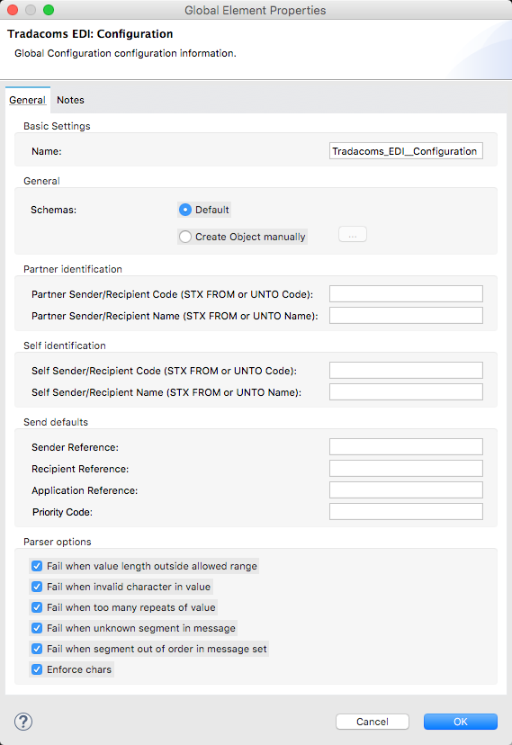
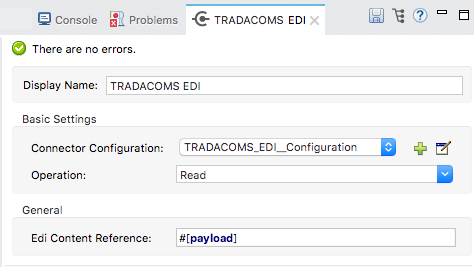
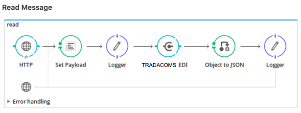
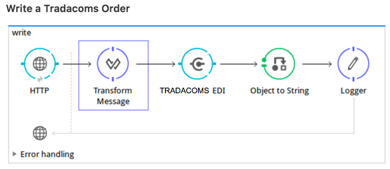
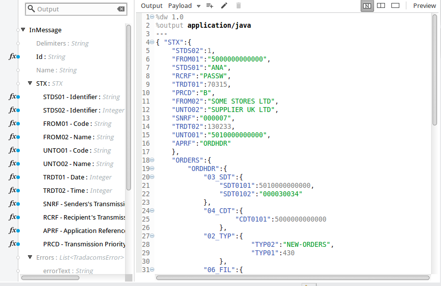

TRADACOMS EDI
TRADACOMS EDI lets you convert TRADACOMS files to and from DataWeave-compatible representations using lists and maps.
Release Notes: TRADACOMS Connector Release Notes
TRADACOMS EDI includes:
-
TRADACOMS file reading, file validation, and file writing
-
Integration with DataSense and DataWeave
-
TRADACOMS message pack for all standard files: ACKMNT, AVLDET, CORDER, CRAINF, CREDIT, CUSINF, DELIVR, DLCDET, DRAINF, EXCINF, GENRAL, INVOIC, LPRDET, ORDERS, PAYINF, PICKER, PPRDET, PRIINF, PROINF, SADDET, SNPSTS, SRMINF, UCNDET, UPLIFT, and UTLBIL
-
The ability to define your own schemas or customize the base TRADACOMS schemas
Compatibility
| Software | Version |
|---|---|
Mule Runtime |
3.7 |
Java |
7 |
| To use the TRADACOMS EDI connector in a production environment, you must purchase a license for Anypoint B2B. |
To get started using the connector, follow these steps:
-
Customize Schemas if your implementation differs from the standard.
-
Configure TRADACOMS EDI Connector for your trading partner according to your implementation convention.
This page helps provides guidance for each of these steps.
Install the TRADACOMS Connector
The following sections explain how to install the TRADACOMS connector.
Installing TRADACOMS EDI in Anypoint Studio
-
In Anypoint Studio, click the Exchange icon in the Studio taskbar.
-
Click Login in Anypoint Exchange.
-
Search for the connector and click Install.
-
Follow the prompts to install the connector.
When Studio has an update, a message displays in the lower right corner, which you can click to install the update.
Using the TRADACOMS EDI via Maven
To use the TRADACOMS EDI in conjunction with Maven:
-
Add the following repositories to your POM:
1 2 3 4 5 6 7 8 9 10 11 12 13
<repositories> <repository> <id>mule-ee-releases</id> <name>Mule EE Releases Repository</name> <url>https://repository-master.mulesoft.org/nexus/content/repositories/releases-ee/</url> <layout>default</layout> </repository> <repository> <id>mule-ci-snapshots</id> <name>Mule CI Snapshots Repository</name> <url>https://repository-master.mulesoft.org/nexus/content/repositories/ci-snapshots/</url> </repository> </repositories>
-
Add the module as a dependency to your project. This can be done by adding the following under the dependencies element your POM:
1 2 3 4 5 6 7 8 9 10 11 12 13 14 15
<dependency> <groupId>org.mule.edi</groupId> <artifactId>edi-schemas-tradacoms</artifactId> <version>RELEASE</version> </dependency> <dependency> <groupId>org.mule.modules</groupId> <artifactId>edi-module-common</artifactId> <version>${edi-module.version}</version> </dependency> <dependency> <groupId>org.mule.modules.b2b</groupId> <artifactId>b2b-connector-commons</artifactId> <version>1.0.1-SNAPSHOT</version> </dependency>
-
If you plan to use this module inside a Mule application, you need add it to the packaging process. That way the final ZIP file that contains your flows and Java code also contains this module and its dependencies. Add an special inclusion to the configuration of the Mule Maven plugin for this module as follows:
1 2 3 4 5 6 7 8 9 10 11 12 13 14 15 16 17 18 19 20 21
<plugin> <groupId>org.mule.certification</groupId> <artifactId>project-structure-validation</artifactId> <version>1.0.6</version> <executions> <execution> <phase>package</phase> <goals> <goal>validate</goal> </goals> </execution> </executions> </plugin> <plugin> <groupId>org.apache.maven.plugins</groupId> <artifactId>maven-compiler-plugin</artifactId> <configuration> <source>${jdk.version}</source> <target>${jdk.version}</target> </configuration> </plugin>
Customize Schemas
Customize schemas to describe your messages according to your implementation.
EDI Schema Language
The TRADACOMS EDI uses a YAML format called ESL (for EDI Schema Language) to represent EDI schemas. Basic ESLs define the structure of TRADACOMS files in terms of structures (messages, in TRADACOMS terminology), groups, segments, composites, and elements. ESLs for the most recent TRADACOMS versions are included:
| ESL | Version | Description |
|---|---|---|
ACKMNT |
4 |
Acknowledgement of Order |
AVLDET |
4 |
Availability Report |
CORDER |
6 |
Complex Order |
CRAINF |
3 |
Credit Advice |
CREDIT |
9 |
Credit Note |
CUSINF |
8 |
Customer Information |
DELIVR |
9 |
Delivery Notification |
DLCDET |
5 |
Delivery Confirmation |
DRAINF |
3 |
Debit Advice |
EXCINF |
3 |
Exception Condition |
GENRAL |
3 |
General Communications |
INVOIC |
9 |
Invoice |
LPRDET |
2 |
Location Planning Report |
ORDERS |
9 |
Order |
PAYINF |
3 |
Payment Order |
PICKER |
4 |
Picking Instructions |
PPRDET |
2 |
Product Planning Report |
PRIINF |
8 |
Price Information |
PROINF |
8 |
Product Information |
SADDET |
3 |
Stock Adjustment |
SNPSTS |
3 |
Stock Snapshot |
SRMINF |
9 |
Statement or Remittance Details |
UCNDET |
3 |
Uplift Confirmation |
UPLIFT |
4 |
Uplift Instructions |
UTLBIL |
3 |
Utility Bill |
If your implementation convention differs from the standard, you can define an overlay schema so that TRADACOMS is configured to work with your files. An overlay schema is a special form of ESL that allows you to modify a base schema, such as an TRADACOMS INVOIC schema, with your specific conventions. (You don’t need an overlay schema if you’re using the structure defined by the standard, but you can use an overlay to tailor the structure to your usage.)
You can also define your own schemas from scratch. See EDI Schema Language Reference for more details.
TRADACOMS EDI schemas have a few differences from the generic EDI format. TRADACOMS files are composed of multiple messages, which occur in a fixed order and only one type is allowed to repeat within a file. To represent these constraints in ESL TRADACOMS adopts some conventions:
-
Each TRADACOMS file is defined in a separate ESL schema document
-
The schema version is the file name with the version number appended (so for CORDER at version 6 this would be
'CORDER6') -
Each message used in the file is a structure definition in the schema, with the structure name consisting of the six-character message name, followed by a colon character, followed by the message version number (which may differ from the file schema version). So the CORHDR message used by CORDER would have the name
'CORHDR:6'. -
Each structure definition uses a class value which is the order of the corresponding message within the file. So for the CORHDR message within CORDER this would be
'1', meaning it’s the first message within the file. By definition, the only message allowed to repeat within a file is the second message, with class'2'.
|
YAML uses a combination of lists and sets of key-value pairs. Order of values is not important, as long as required items are present. Quotes (either single or double quotes) are used around values which may consist of digits but are meant to be interpreted as strings (since otherwise the YAML parser treats the values as numbers). Indentation is used to show the nesting of lists. For readability, the ESL structures shown here define all simple key-value pairs before any lists that are part of the same definition. |
Defining your Implementation Convention with an Overlay Schema
To specify a schema according to your implementation convention, you can follow the following process:
-
Create an "overlay" schema which imports the base schema you want to customize - for example, TRADACOMS INVOIC.
-
Add new messages as part of the file.
-
Customize the structure of individual messages - segment usage, positions, groups and counts.
-
Customize segments - including usage and counts.
Overlay schemas are very similar in structure to a complete schema definition, but instead of providing all the details of the schema structure they only list changes. Overlay schemas specify how to use implementation conventions with a particular trading partner to extend and customize the standard.
For example, here’s a sample overlay schema modifying the basic TRADACOMS INVOIC file definition:
1
2
3
4
5
6
7
8
9
10
11
12
13
14
15
16
17
form: TRADACOMS
version: 'INVOIC9'
imports: [ '/tradacoms/INVOIC.esl' ]
structures:
- id: 'REBILL'
name: 'REBILL:6'
class: '5'
data:
- { idRef: 'MHD', usage: M }
- { idRef: 'RBL', usage: M }
- { idRef: 'MTR', usage: M }
segments:
- id: 'RBL'
name: 'REBILLING DETAILS'
values:
- { id: 'RBLA', name: 'Rebill From Field', usage: M, type: char, minLength: 1, maxLength: 14 }
- { id: 'RBLB', name: 'Rebill To Field', usage: M, type: char, minLength: 1, maxLength: 14 }
This sample adds a REBILL message at version 6 to the file, following all existing messages in the file (class value 5, since there are four message components normally present in an INVOIC file).
Structure Overlay
A structure overlay details modifications to the base schema definition of an TRADACOMS message. Most often these modifications take the form of marking segments or groups in the base definition as unused, but any usage or repetition count change is allowed. Here’s the form taken by a structure overlay:
1
2
3
4
5
6
7
8
form: TRADACOMS
version: 'INVOIC9'
imports: [ '/tradacoms/INVOIC.esl' ]
structures:
- idRef: 'INVFIL'
data:
- { idRef: 'FDT', position: '07', usage: M }
- { idRef: 'ACD', position: '08', usage: M }
The modifications in this example specify that the FDT (at position 7) and ACD (at position 8) segments are required in each INVFIL message (usage: M for mandatory). With this overlay, errors are reported if either the FDT or ACD segment is not present in a message.
The key-value pairs at the structure level are:
| Key | Description |
|---|---|
idRef |
The ID for the message structure being modified. |
class |
The position of the message within a file (optional). |
name |
The message structure name and version (optional). |
data |
List of segment and group modifications within the structure (optional, each is only used when there are modifications to that section). |
Each item in the list of structure data components is either a segment reference or a group definition. Both are shown here using a compact YAML syntax where the values for each reference are given as comma-separated key-value pairs enclosed in curly braces. The values are:
| Key | Description |
|---|---|
idRef |
The referenced segment ID (optional, verified if provided but otherwise ignored – the position value is used to uniquely identify segments within the section). |
position |
The segment position within the message structure. |
usage |
Usage code (optional, base definition value used if not specified). Values may be:
|
count |
Maximum repetition count value, which may be a number or the special value |
The values in a group definition are:
| Key | Description |
|---|---|
groupIdRef |
The referenced group ID (optional, verified if provided but otherwise ignored – the position value is used to uniquely identify a group within a section). |
position |
The segment position within the message structure (position of the first segment included in the group). |
usage |
Usage code, which may be:
|
count |
Maximum repetition count value, which may be a number or the special value |
items |
List of segments (and potentially nested loops) making up the loop (only available with expanded YAML format). |
Segment Overlays
A segment overlay details modifications to the base schema definition. Most often these modifications take the form of changing the usage of elements or composites in the base definition. Here is a full overlay modifying a segment of a message:
1
2
3
4
5
6
7
8
9
10
11
12
form: TRADACOMS
version: 'INVOIC9'
imports: [ '/tradacoms/INVOIC.esl' ]
structures:
- idRef: 'INVFIL'
data:
- { idRef: 'FDT', position: '07' }
segments:
- idRef: 'FDT'
values:
- { position: 1, usage: M }
- { position: 2, usage: M }
This example modifies the base definition for the FDT segment, making both values defined in the segment required fields (they are optional in the base definition).
Segment modifications only effect structures included in the overlay with explicit references to the modified segments. That’s why the FDT segment reference needs to be included in the INVFIL message structure part of the schema, even though nothing (such as usage or repetition count) is being changed for how this segment is used within the message.
The above example uses the compact form for segment modifications that only involve a truncate, while modifications that make changes to individual values are expressed in expanded form. As with all the other YAML examples, the two forms are actually equivalent and can be used interchangeably.
The key-value pairs in a segment overlay are:
| Key | Description |
|---|---|
idRef |
Segment identifier. |
trim |
Trim position in segment, meaning all values from this point on are marked as unused (optional). |
values |
List of individual value modifications. |
The values list references values in the segment by position. The values for these references are:
| Key | Description |
|---|---|
position |
The value position within the segment. |
name |
The name of the value in the segment (optional, base definition value used if not specified) |
usage |
Usage code (optional, base definition value used if not specified). The usage value may be:
|
Determining the TRADACOMS Schema Location
To use the connector, you need to know the locations of the schemas in your project. If you’re using the out of the box TRADACOMS schemas and not customizing anything, the schema location follows the /tradacoms/{file}.esl pattern. For example, if you’re using the INVOIC file, your schema location is /tradacoms/INVOIC.esl.
If you’re creating a custom implementation convention (whether full schemas, or overlay schemas), you should put your schemas under a directory in src/main/app and refer to the location using ${app.home}. For example, if you’ve put your ADT_A01 schema under src/main/app/mypartner/INVOIC.esl, your schema location is ${app.home}/mypartner/INVOIC.esl.
The Mule Runtime automatically checks src/main/app for any locations that contain the ${app.home} value.
Configure TRADACOMS EDI Connector
After you install the connector and configure your schema customizations (if any), you can start using the connector. Create separate configurations for each implementation convention.
Topics:
Studio Visual Editor
Follow these steps to create a global TRADACOMS EDI configuration in a Mule application:
-
Click the Global Elements tab at the base of the canvas, then click Create.
-
In the Choose Global Type wizard, use the filter to locate and select, TRADACOMS EDI: Configuration, then click OK.
-
Configure the parameters according to the sections that follow.

-
Click OK to save the global connector configurations.
-
Return to the Message Flow tab in Studio.
Setting your TRADACOMS Identification
You can configure your STX identification information in the connector so that it automatically checks when a file is being received or set when a file is being sent.
This is the same setup as with X12 and EDIFACT. The message headers include both sender and recipient identification. The "Self" configuration should match the recipient identification in incoming messages. TRADACOMS uses the "Self" as the sender identification in outgoing messages, while the "Partner" configuration is the reverse.
For example, if we put the XYZ company as the Partner Sender, TRADACOMS uses that information to validate incoming messages. If the message is from the XYZ company, the message passes. If not the message fails.
The STX identification information is set in these fields:
Partner identification
-
Partner Sender/Recipient Code (STX FROM or UNTO Code):
-
Partner Sender/Recipient Name (STX FROM or UNTO Name):
For Partner identification, if a code is not specified, Transmission Recipient Code is not checked in received transmissions. Similarly, if a name is not specified, the Transmission Sender Name is not checked in received transmissions.
The Partner Sender/Recipient Code identifies a partner. When this value is specified, it is used both to validate the Transmission Sender Code in received transmissions and to set the Transmission Recipient Code in sent transmissions (if not already specified in map data). If not specified the Transmission Sender Code is not checked in received transmissions.
The Partner Sender/Recipient Name identifies a partner. When this value is specified it is used both to validate the Transmission Sender Name in received transmissions and to set the Transmission Recipient Name in sent transmissions (if not already specified in map data). If not specified the Transmission Sender Name is not checked in received transmissions.
Self identification
-
Self Sender/Recipient Code (STX FROM or UNTO Code):
-
Self Sender/Recipient Name (STX FROM or UNTO Name):
The "Self identification" parameters identify your side of the trading partner relationship, while the "Partner identification" parameters identify your trading partner. The values you set are used when writing TRADACOMS files to set the sender and recipient code and name, and are verified in order to receive files. If you don’t want to restrict incoming files, you can leave these blank, and set the values for outgoing files in the actual outgoing file data. Values set in the file data override the connector configuration.
The Self Sender/Recipient Code, identifies self. When this value is specified it is used both to validate the Transmission Recipient Code in received transmissions and to set the Transmission Sender Code in sent transmissions (if not already specified in map data). If not specified the Transmission Recipient Code is not checked in received transmissions.
The Self Sender/Recipient Name is used to identify self. When this value is specified, it is used both to validate the Transmission Recipient Name in received transmissions and to set the Transmission Sender Name in sent transmissions (if not already specified in map data). If not specified the Transmission Recipient Name is not checked in received transmissions.
Setting Sender Defaults
You can also configure the connector with defaults for other STX values. These defaults are used when writing TRADACOMS files to set the Sender’s and Recipient’s Transmission References, the Application Reference, and the Transmission Priority Code if not already set in the outgoing data.
Defaults are specified in these fields:
-
Sender Reference - Sender’s Transmission Reference used when writing a transmission. If specified, this value is used as a default if the required Sender’s Transmission Reference value is not specified in map data for a send transmission (write operation).
-
Recipient Reference - Recipient’s Transmission Reference used when writing a transmission. If specified, this value is used as a default if an optional Recipient’s Transmission Reference value is not specified in map data for a send transmission (write operation).
-
Application Reference - Application Reference used when writing a transmission. If specified, this value is used as a default if an optional Application Reference value is not specified in map data for a send transmission (write operation).
-
Priority Code - Transmission Priority Code used when writing a transmission. If specified, this value is used as a default if an optional Transmission Priority Code value is not specified in map data for a send transmission (write operation).
Setting Parser Options
You can set the following options if needed:
-
Fail when value length outside allowed range - Fail when the receive value lengthis outside the allowed range. If
true, a transmission with this error is rejected; iffalse, the value is used anyway and the transmission is not rejected. In either case, the error is logged and reported in the returned error list. -
Fail when unknown segment in transmission - Fail when an unknown segment is present in a transmission. If
true, a transmission with this error is rejected; iffalse, the segment is ignored and the transmission is not rejected. In either case the error is logged and reported in the returned error list. -
Fail when unused segment included in transmission - Fail when a segment marked as Unused is included in a transmission. If
true, a transmission with this error is rejected; iffalse, the transmission is not rejected and the unused segment is ignored. In either case the error is logged and reported in the returned error list. -
Fail when segment out of order in transmission - Fail when a segment is out of order in a transmission. If
true, a transmission with this error is rejected; iffalseand the segment can be reordered the transmission is not rejected. In either case the error is logged and reported in the returned error list.
XML Editor or Standalone
Ensure that you have included the EDI namespaces in your configuration file.
1
2
3
4
5
6
7
8
9
<mule xmlns:tracking="http://www.mulesoft.org/schema/mule/ee/tracking" xmlns:http="http://www.mulesoft.org/schema/mule/http" xmlns:dw="http://www.mulesoft.org/schema/mule/ee/dw" xmlns:tradacoms-edi="http://www.mulesoft.org/schema/mule/tradacoms-edi" xmlns:tradacoms-transformer="http://www.mulesoft.org/schema/mule/tradacoms-transformer" xmlns:tradacoms="http://www.mulesoft.org/schema/mule/tradacoms" xmlns="http://www.mulesoft.org/schema/mule/core" xmlns:doc="http://www.mulesoft.org/schema/mule/documentation"
xmlns:spring="http://www.springframework.org/schema/beans"
xmlns:xsi="http://www.w3.org/2001/XMLSchema-instance"
xsi:schemaLocation="http://www.springframework.org/schema/beans http://www.springframework.org/schema/beans/spring-beans-current.xsd
http://www.mulesoft.org/schema/mule/core http://www.mulesoft.org/schema/mule/core/current/mule.xsd
http://www.mulesoft.org/schema/mule/tradacoms-edi http://www.mulesoft.org/schema/mule/tradacoms-edi/current/mule-tradacoms-edi.xsd
http://www.mulesoft.org/schema/mule/ee/dw http://www.mulesoft.org/schema/mule/ee/dw/current/dw.xsd
http://www.mulesoft.org/schema/mule/http http://www.mulesoft.org/schema/mule/http/current/mule-http.xsd
http://www.mulesoft.org/schema/mule/ee/tracking http://www.mulesoft.org/schema/mule/ee/tracking/current/mule-tracking-ee.xsd">
Follow these steps to configure TRADACOMS EDI in your application:
-
Create a global configuration outside and above your flows, using the following global configuration code:
1 2 3 4 5 6
<tradacoms-edi:config name="MyTradingPartner" doc:name="TRADACOMS EDI: Configuration"> <tradacoms-edi:schemas> <tradacoms-edi:schema>/tradacoms/INVOIC.esl</tradacoms-edi:schema> <tradacoms-edi:schema>/tradacoms/ORDERS.esl</tradacoms-edi:schema> </tradacoms-edi:schemas> </tradacoms-edi:config>
Setting Your TRADACOMS Identification
You can configure the STX identification for you and your trading partner on the TRADACOMS EDI connector configuration.
The "Self identification" parameters identify your side of the trading partner relationship, while the "Partner identification" parameters identify your trading partner. The values you set are used when writing TRADACOMS files to supply the Sender/Recipient Code and Name, and are verified in receive files. If you don’t want to restrict incoming files you can leave these blank, and set the values for outgoing files in the data. Values set directly in the data override the connector configuration.
Self identification parameters:
1
2
selfCode="<value>"
selfName="<value>"
Partner identification parameters:
1
2
partnerCode="<value>"
partnerName="<value>"
Setting Sender Defaults
You can set the sender STX defaults if used:
1
2
3
4
sendSenderReference="<value>"
sendRecipientReference="<value>"
sendApplicationReference="<value>"
sendPriorityCode="<value>"
Setting Parser Options
You can set the following options if needed:
XML Value (When set to true) |
Visual Studio Option |
|---|---|
|
lengthFail="true" |
Fail when value length outside allowed range |
|
charFail="true" |
Fail when invalid character in value |
|
countFail="true" |
Fail when too many repeats of value |
|
unknownFail="true" |
Fail when unknown segment in message |
|
orderFail="true" |
Fail when segment out of order in message set |
|
unusedFail="true" |
Fail when unused segment included in message set |
Setting Your Schema Locations
| Currently, you can only configure schema locations in the Anypoint Studio XML view. |
In Anypoint Studio, switch to the XML view by clicking Configuration XML and modify your TRADACOMS EDI configuration to include a list of all the schemas you wish to include by adding an <http://edischema[edi:schema]> element for each document type:
1
2
3
4
5
6
<tradacoms-edi:config name="MyTradingPartner" doc:name="TRADACOMS EDI: Configuration">
<tradacoms-edi:schemas>
<tradacoms-edi:schema>/tradacoms/INVOIC.esl</tradacoms-edi:schema>
<tradacoms-edi:schema>/tradacoms/ORDERS.esl</tradacoms-edi:schema>
</tradacoms-edi:schemas>
</tradacoms-edi:config>
After you create a global element for your TRADACOMS EDI, configure the message structure, operations, and acknowledgments.
Use TRADACOMS EDI Inside Mule Flows
You can use TRADACOMS EDI connector in your flows for reading and writing messages, and sending acknowledgments.
Topics:
Understanding TRADACOMS Message Structure
The TRADACOMS connector enables reading or writing of TRADACOMS documents into or from the canonical ER7 message structure. This structure is represented as a hierarchy of Java Maps and Lists, which can be manipulated using DataWeave or code. Each transaction has its own structure, defined in the schemas as previously outlined.
The message itself contains the following keys (some of which only apply to either the read operation or the write operation, as indicated):
| Key name | Description |
|---|---|
{File} |
Wrapper for message data, with keys matching the names of the component messages linking to data for those messages. For the repeating detail message of the file (always class '2') the value is a list of maps; for the singleton messages of the file the values are maps. |
Errors (read only) |
A list of errors which are associated with the input message. (See the TradacomsError structure description in the Reading and Validating TRADACOMS Messages section below.) |
Id |
File (the name of the TRADACOMS file read). |
STX |
Map of STX segment data from start of file. |
Individual messages have their own maps under the file name map, with keys matching the segments of the message. For instance, an INVOIC file would have the key 'INVOIC' in the root map, and under that keys for 'INVFIL', 'INVOIC' (the list of data for repeating INVOIC messages), 'VATTLR' and 'INVTLR'. Within the INVTLR map there would be keys '01_MHD', '02_TOT', and '03_MTR' for the segments of the INVTLR message.
Reading and Validating a TRADACOMS File
To read an TRADACOMS file, search the palette for "TRADACOMS EDI" and drag the TRADACOMS EDI building block into a flow. Then, go to the properties view, select the connector configuration you previously created and select the Read operation:

This operation reads any byte stream into the structure described by your TRADACOMS schemas.
TRADACOMS EDI validates the message structure when it reads it in. Message validation includes checking the syntax and content of the STX and all messages of the file, including component segments of the messages. Normally errors are logged and accumulated, and the message data is only supplied as output if no fatal errors occur in parsing the input. Errors reading the input data cause exceptions to be thrown.
Error data entered in the receive data map uses the TradacomsError class, a read-only JavaBean with the following properties:
| Property | Description |
|---|---|
segment |
The zero-based index within the input of the segment causing the error. |
fatal |
Flag for a fatal error, meaning the input file was rejected as a result of the error. |
errorText |
Text description of the error. |
Error data is returned by the read operation as an optional list with the "Errors" key.
Example Use Case
The following use case reads and writes TRADACOMS messages. A complete listing of the Mule flow is in Example Source Code.
Topics:
Read a TRADACOMS Order
To read a TRADACOMS order:
-
Create a new Mule Project in Anypoint Studio.

-
Drag an HTTP connector to the canvas, click the green plus sign to the right of Connector Configuration, and click OK to accept the default settings for Host and Port.
-
Locate and drag Set Payload next to the HTTP connector and set the Value to a TRADACOMS message as a string, for example:
#["STX=ANAA:1+12345678901234:XYZ COMPANY+43210987654321:ABC COMPANY"...]See Example Source Code for the complete string.
-
Locate and drag Logger to the canvas. Set the Message to the
#[payload]value. -
Locate and drag TRADACOMS EDI to the canvas. Click the green plus next to Connector Configuration, and click OK to accept the default values.
-
Locate and drag an Object to JSON transformer to the canvas. No settings are required.
-
Locate and drag Logger to the canvas. Set the Message to the
#[payload]value.
Write a TRADACOMS Order

-
Drag a HTTP Connector to the canvas and configure the following parameters:
Parameter Value Connector Configuration
HTTP_Listener_Configuration
Path
/write-tradacoms
-
Locate and drag Data Weave Transformer next to the HTTP connector.
-
Drag a Tradacoms EDI connector next Data Weave component and select write operation.
-
Create a new Tradacoms EDI connector configuration, and add /tradacoms/ORDERS.esl schema. If you refresh metadata you see the Orders Input Metadata.
-
In the Dataweave Transformer, set the following output parameters:

1 2 3 4 5 6 7 8 9 10 11 12 13 14 15 16 17 18 19 20 21 22 23 24 25 26 27 28 29 30 31 32 33 34 35 36 37 38 39 40
%dw 1.0 %output application/java --- { "STX":{ "STDS02":1, "FROM01":"5000000000000", "STDS01":"ANA", "RCRF":"PASSW", "TRDT01":70315, "PRCD":"B", "FROM02":"XYZ COMPANY", "UNTO02":"ABC COMPANY", "SNRF":"000007", "TRDT02":130233, "UNTO01":"5010000000000", "APRF":"ORDHDR" }, "ORDERS":{ "ORDHDR":{ "03_SDT":{ "SDT0101":5010000000000, "SDT0102":"000030034" }, "04_CDT":{ "CDT0101":5000000000000 }, "02_TYP":{ "TYP02":"NEW-ORDERS", "TYP01":430 }], "ORDTLR":{ "02_OFT":{ "OFT01":1 } } }, "Id":"ORDERS"} --- -
Drag Object to String next to the TRADACOMS EDI connector, and write the payload to a String.
-
Deploy the application, open a web browser and make a request to the http://localhost:8081/write-tradacoms URL.
-
If the input Map was successfully written, you should receive a TRADACOMS message as a String response in the web browser.
Example Source Code
The Mule flow for the use case is as follows:
1
2
3
4
5
6
7
8
9
10
11
12
13
14
15
16
17
18
19
20
21
22
23
24
25
26
27
28
29
30
31
32
33
34
35
36
37
38
39
40
41
42
43
44
45
46
47
48
49
50
51
52
53
54
55
56
57
58
59
60
61
62
63
64
65
66
67
68
69
70
71
72
73
74
75
76
77
78
79
80
81
82
83
84
85
86
87
88
89
90
91
92
93
94
95
96
97
98
99
100
101
102
103
104
105
106
107
108
109
110
<?xml version="1.0" encoding="UTF-8"?>
<mule xmlns:dw="http://www.mulesoft.org/schema/mule/ee/dw" xmlns:tradacoms="http://www.mulesoft.org/schema/mule/tradacoms" xmlns:json="http://www.mulesoft.org/schema/mule/json" xmlns:http="http://www.mulesoft.org/schema/mule/http" xmlns:tracking="http://www.mulesoft.org/schema/mule/ee/tracking" xmlns="http://www.mulesoft.org/schema/mule/core" xmlns:doc="http://www.mulesoft.org/schema/mule/documentation"
xmlns:spring="http://www.springframework.org/schema/beans"
xmlns:xsi="http://www.w3.org/2001/XMLSchema-instance"
xsi:schemaLocation="http://www.springframework.org/schema/beans http://www.springframework.org/schema/beans/spring-beans-current.xsd
http://www.mulesoft.org/schema/mule/core http://www.mulesoft.org/schema/mule/core/current/mule.xsd
http://www.mulesoft.org/schema/mule/http http://www.mulesoft.org/schema/mule/http/current/mule-http.xsd
http://www.mulesoft.org/schema/mule/tradacoms http://www.mulesoft.org/schema/mule/tradacoms/current/mule-tradacoms.xsd
http://www.mulesoft.org/schema/mule/json http://www.mulesoft.org/schema/mule/json/current/mule-json.xsd
http://www.mulesoft.org/schema/mule/ee/tracking http://www.mulesoft.org/schema/mule/ee/tracking/current/mule-tracking-ee.xsd
http://www.mulesoft.org/schema/mule/ee/dw http://www.mulesoft.org/schema/mule/ee/dw/current/dw.xsd">
<http:listener-config name="HTTP_Listener_Configuration" host="0.0.0.0" port="8081" doc:name="HTTP Listener Configuration"/>
<tradacoms:config name="TRADACOMS_EDI__Configuration" doc:name="TRADACOMS EDI: Configuration">
<tradacoms:schemas>
<tradacoms:schema>abc-invoice-overlay.esl</tradacoms:schema>
<tradacoms:schema>/tradacoms/ORDERS.esl</tradacoms:schema>
</tradacoms:schemas>
</tradacoms:config>
<flow name="read">
<http:listener config-ref="HTTP_Listener_Configuration" path="/read-tradacoms" doc:name="HTTP"/>
<set-payload value="#["STX=ANAA:1+1234567890123:XYZ+3210987654321:ABC (STORES) LTD+161026:160201+A000105++INVFIL+B'MHD=1+INVFIL:9'TYP=0700+INVOICES'SDT=1234567890123:1728794+XYZ COMPANY+6TH FLOOR:GREATER LONDON HOUSE:MORNINGTON CRESCENT:LONDON:NW1 7QX+544741734'CDT=1234567890123+ABC COMPANY+CREDITOR ACCOUNTING:PO BOX 424:GLASGOW:SCOTLAND:G1 4WA'FIL=105+1+161026'FDT=424242+424242'MTR=7'MHD=2+INVOIC:9'CLO=5019589016006:1600+ABC COMPANY DISTRIBUTION CENTER (ABCD)+ABC Distribution Center (ABCD):ABC DRIVE::POLLY HEDRA:MK15 0DB'IRF=4242420+424242+424242'PYT=1+Credit Control'ODD=1+424242:424242:424242:424242+424242424242:424242+60++424242424242424:424242'ILD=1+1+5025546315888:90280X++:228948842+1+30+77400+2322000+S+20000+++ONE SIZE SOCKS MULTI(MULTI)+++77400++0000'ILD=1+2+5025546338177:90382X+++1+30+77400+2322000+S+20000+++ONE SIZE SOCKS MULTI(MULTI)+++77400++0000'STL=1+S+20000+2+46440+++++46440+000+46440+9288+55728+55728'TLR=1+46440+++++46440+000+46440+9288+55728+55728'MTR=10'MHD=3+INVOIC:9'CLO=5019589016006:1600+ABC COMPANY DISTRIBUTION CENTER (ABCD)+ABC Distribution Center (ABCD):ABC DRIVE:Chichester:POLLY HEDRA:MK15 0DB'IRF=4242424+424242+424242'PYT=1+Credit Control'ODD=1+424242:424242:424242:424242+424242424242:424242+1++424242424242424:424242'ILD=1+1+5025546338504:90390F++:242786490+1+1+87500+87500+S+20000+++MINI TELESCOPIC PEONY(PINK)+++87500++0000'STL=1+S+20000+1+875+++++875+000+875+175+1050+1050'TLR=1+875+++++875+000+875+175+1050+1050'MTR=9'MHD=4+INVOIC:9'CLO=5019589016006:1600+ABC COMPANY DISTRIBUTION CENTER (ABCD)+ABC Distribution Center (ABCD):ABC DRIVE:Essex:POLLY HEDRA:MK15 0DB'IRF=A163567+424242+424242'PYT=1+Credit Control'ODD=1+424242:424242:424242:424242+424242424242:424242+1++424242424242424:424242'ILD=1+1+5025546338481:90389I++:242786377+1+1+77400+77400+S+20000+++MINI TELESCOPIC SUMMER FIG(NAVY)+++77400++0000'STL=1+S+20000+1+774+++++774+000+774+155+929+929'TLR=1+774+++++774+000+774+155+929+929'MTR=9'MHD=5+INVOIC:9'CLO=5019589016006:1600+ABC COMPANY DISTRIBUTION CENTER (ABCD)+ABC Distribution Center (ABCD):ABC DRIVE:Cheltenham:POLLY HEDRA:MK15 0DB'IRF=A163568+424242+424242'PYT=1+Credit Control'ODD=1+424242:424242:424242:424242+424242910041:424242+1++424242424242424:424242'ILD=1+1+5025546338481:90389I++:242786377+1+1+77400+77400+S+20000+++MINI TELESCOPIC SUMMER FIG(NAVY)+++77400++0000'STL=1+S+20000+1+774+++++774+000+774+155+929+929'TLR=1+774+++++774+000+774+155+929+929'MTR=9'MHD=6+INVOIC:9'CLO=5019589016006:1600+ABC COMPANY DISTRIBUTION CENTER (ABCD)+ABC Distribution Center (ABCD):ABC DRIVE:Middlesborough:POLLY HEDRA:MK15 0DB'IRF=A163569+424242+424242'PYT=1+Credit Control'ODD=1+424242:103609:424242:424242+103609910041:424242+1++424242424242424:424242'ILD=1+1+5025546338450:90387A++:242786254+1+1+87500+87500+S+20000+++MINI TELESCOPIC BLACK(BLACK)+++87500++0000'STL=1+S+20000+1+875+++++875+000+875+175+1050+1050'TLR=1+875+++++875+000+875+175+1050+1050'MTR=9'MHD=7+INVOIC:9'CLO=5019589016006:1600+ABC COMPANY DISTRIBUTION CENTER (ABCD)+ABC Distribution Center (ABCD):ABC DRIVE:Cabot Circus:POLLY HEDRA:MK15 0DB'IRF=A163570+424242+424242'PYT=1+Credit Control'ODD=1+424242:103608:424242:424242+103608910041:424242+3++424242424242424:424242'ILD=1+1+5025546338450:90387A++:242786254+1+2+87500+175000+S+20000+++MINI TELESCOPIC BLACK(BLACK)+++87500++0000'ILD=1+2+5025546338535:90392I++:242786270+1+1+77400+77400+S+20000+++MINI TELESCOPIC SUMMER FIG(NAVY)+++77400++0000'STL=1+S+20000+2+2524+++++2524+000+2524+505+3029+3029'TLR=1+2524+++++2524+000+2524+505+3029+3029'MTR=10'MHD=8+INVOIC:9'CLO=5019589016006:1600+ABC COMPANY DISTRIBUTION CENTER (ABCD)+ABC Distribution Center (ABCD):ABC DRIVE:London:POLLY HEDRA:MK15 0DB'IRF=A163571+424242+424242'PYT=1+Credit Control'ODD=1+424242:103607:424242:424242+103607910041:424242+2++424242424242424:424242'ILD=1+1+5025546338450:90387A++:242786254+1+2+87500+175000+S+20000+++MINI TELESCOPIC BLACK(BLACK)+++87500++0000'STL=1+S+20000+1+1750+++++1750+000+1750+350+2100+2100'TLR=1+1750+++++1750+000+1750+350+2100+2100'MTR=9'MHD=9+INVOIC:9'CLO=5019589016006:1600+ABC COMPANY DISTRIBUTION CENTER (ABCD)+ABC Distribution Center (ABCD):ABC DRIVE:Surrey:POLLY HEDRA:MK15 0DB'IRF=A163572+424242+424242'PYT=1+Credit Control'ODD=1+424242:103606:424242:424242+103606910041:424242+2++424242424242424:424242'ILD=1+1+5025546338450:90387A++:242786254+1+1+87500+87500+S+20000+++MINI TELESCOPIC BLACK(BLACK)+++87500++0000'ILD=1+2+5025546338481:90389I++:242786377+1+1+77400+77400+S+20000+++MINI TELESCOPIC SUMMER FIG(NAVY)+++77400++0000'STL=1+S+20000+2+1649+++++1649+000+1649+330+1979+1979'TLR=1+1649+++++1649+000+1649+330+1979+1979'MTR=10'MHD=10+INVOIC:9'CLO=5019589016006:1600+ABC COMPANY DISTRIBUTION CENTER (ABCD)+ABC Distribution Center (ABCD):ABC DRIVE::POLLY HEDRA:MK15 0DB'IRF=A163573+424242+424242'PYT=1+Credit Control'ODD=1+424242:103605:424242:424242+103605910041:424242+1++424242424242424:424242'ILD=1+1+5025546338450:90387A++:242786254+1+1+87500+87500+S+20000+++MINI TELESCOPIC BLACK(BLACK)+++87500++0000'STL=1+S+20000+1+875+++++875+000+875+175+1050+1050'TLR=1+875+++++875+000+875+175+1050+1050'MTR=9'MHD=11+INVOIC:9'CLO=5019589016006:1600+ABC COMPANY DISTRIBUTION CENTER (ABCD)+ABC Distribution Center (ABCD):ABC DRIVE:Dumbartonshire:POLLY HEDRA:MK15 0DB'IRF=A163574+424242+424242'PYT=1+Credit Control'ODD=1+424242:103604:424242:424242+103604910041:424242+1++424242424242424:424242'ILD=1+1+5025546338450:90387A++:242786254+1+1+87500+87500+S+20000+++MINI TELESCOPIC BLACK(BLACK)+++87500++0000'STL=1+S+20000+1+875+++++875+000+875+175+1050+1050'TLR=1+875+++++875+000+875+175+1050+1050'MTR=9'MHD=12+INVOIC:9'CLO=5019589016006:1600+ABC COMPANY DISTRIBUTION CENTER (ABCD)+ABC Distribution Center (ABCD):ABC DRIVE::POLLY HEDRA:MK15 0DB'IRF=A163575+424242+424242'PYT=1+Credit Control'ODD=1+424242:103602:424242:424242+103602910041:424242+4++424242424242424:424242'ILD=1+1+5025546338450:90387A++:242786254+1+1+87500+87500+S+20000+++MINI TELESCOPIC BLACK(BLACK)+++87500++0000'ILD=1+2+5025546338443:90386Y++:242786335+1+1+77400+77400+S+20000+++MINI TELESCOPIC GOLDEN ORB(YELLOW)+++77400++0000'ILD=1+3+5025546338481:90389I++:242786377+1+2+77400+154800+S+20000+++MINI TELESCOPIC SUMMER FIG(NAVY)+++77400++0000'STL=1+S+20000+3+3197+++++3197+000+3197+640+3837+3837'TLR=1+3197+++++3197+000+3197+640+3837+3837'MTR=11'MHD=13+INVOIC:9'CLO=5019589016006:1600+ABC COMPANY DISTRIBUTION CENTER (ABCD)+ABC Distribution Center (ABCD):ABC DRIVE::POLLY HEDRA:MK15 0DB'IRF=A163576+424242+424242'PYT=1+Credit Control'ODD=1+424242:103598:424242:424242+103598910041:424242+1++424242424242424:424242'ILD=1+1+5025546338450:90387A++:242786254+1+1+87500+87500+S+20000+++MINI TELESCOPIC BLACK(BLACK)+++87500++0000'STL=1+S+20000+1+875+++++875+000+875+175+1050+1050'TLR=1+875+++++875+000+875+175+1050+1050'MTR=9'MHD=14+INVOIC:9'CLO=5019589016006:1600+ABC COMPANY DISTRIBUTION CENTER (ABCD)+ABC Distribution Center (ABCD):ABC DRIVE:Cardiff:POLLY HEDRA:MK15 0DB'IRF=A163577+424242+424242'PYT=1+Credit Control'ODD=1+424242:103597:424242:424242+103597910041:424242+4++424242424242424:424242'ILD=1+1+5025546338429:90385L++:242786199+1+2+77400+154800+S+20000+++MINI TELESCOPIC BLONDE(IVORY)+++77400++0000'ILD=1+2+5025546338528:90392H++:242786262+1+1+77400+77400+S+20000+++MINI TELESCOPIC COBWEB(GREY)+++77400++0000'ILD=1+3+5025546338504:90390F++:242786490+1+1+87500+87500+S+20000+++MINI TELESCOPIC PEONY(PINK)+++87500++0000'STL=1+S+20000+3+3197+++++3197+000+3197+640+3837+3837'TLR=1+3197+++++3197+000+3197+640+3837+3837'MTR=11'MHD=15+INVOIC:9'CLO=5019589016006:1600+ABC COMPANY DISTRIBUTION CENTER (ABCD)+ABC Distribution Center (ABCD):ABC DRIVE::POLLY HEDRA:MK15 0DB'IRF=A163578+424242+424242'PYT=1+Credit Control'ODD=1+424242:103596:424242:424242+103596910041:424242+1++424242424242424:424242'ILD=1+1+5025546338429:90385L++:242786199+1+1+77400+77400+S+20000+++MINI TELESCOPIC BLONDE(IVORY)+++77400++0000'STL=1+S+20000+1+774+++++774+000+774+155+929+929'TLR=1+774+++++774+000+774+155+929+929'MTR=9'MHD=16+INVOIC:9'CLO=5019589016006:1600+ABC COMPANY DISTRIBUTION CENTER (ABCD)+ABC Distribution Center (ABCD):ABC DRIVE:Lincoln:POLLY HEDRA:MK15 0DB'IRF=A163579+424242+424242'PYT=1+Credit Control'ODD=1+424242:103595:424242:424242+103595910041:424242+5++424242424242424:424242'ILD=1+1+5025546338412:90385A++:242786181+1+1+77400+77400+S+20000+++MINI TELESCOPIC BLACK(BLACK)+++77400++0000'ILD=1+2+5025546338535:90392I++:242786270+1+2+77400+154800+S+20000+++MINI TELESCOPIC SUMMER FIG(NAVY)+++77400++0000'ILD=1+3+5025546338481:90389I++:242786377+1+2+77400+154800+S+20000+++MINI TELESCOPIC SUMMER FIG(NAVY)+++77400++0000'STL=1+S+20000+3+3870+++++3870+000+3870+775+4645+4645'TLR=1+3870+++++3870+000+3870+775+4645+4645'MTR=11'MHD=17+INVOIC:9'CLO=5019589016006:1600+ABC COMPANY DISTRIBUTION CENTER (ABCD)+ABC Distribution Center (ABCD):ABC DRIVE:Avon:POLLY HEDRA:MK15 0DB'IRF=A163580+424242+424242'PYT=1+Credit Control'ODD=1+424242:103594:424242:424242+103594910041:424242+1++424242424242424:424242'ILD=1+1+5025546338412:90385A++:242786181+1+1+77400+77400+S+20000+++MINI TELESCOPIC BLACK(BLACK)+++77400++0000'STL=1+S+20000+1+774+++++774+000+774+155+929+929'TLR=1+774+++++774+000+774+155+929+929'MTR=9'MHD=18+INVOIC:9'CLO=5019589016006:1600+ABC COMPANY DISTRIBUTION CENTER (ABCD)+ABC Distribution Center (ABCD):ABC DRIVE:Hull:POLLY HEDRA:MK15 0DB'IRF=A163581+424242+424242'PYT=1+Credit Control'ODD=1+424242:103593:424242:424242+103593910041:424242+2++424242424242424:424242'ILD=1+1+5025546319060:90202A++:229322950+1+1+84200+84200+S+20000+++COMPACT TELESCOPIC BLACK(BLACK)+++84200++0000'ILD=1+2+5025546338481:90389I++:242786377+1+1+77400+77400+S+20000+++MINI TELESCOPIC SUMMER FIG(NAVY)+++77400++0000'STL=1+S+20000+2+1616+++++1616+000+1616+323+1939+1939'TLR=1+1616+++++1616+000+1616+323+1939+1939'MTR=10'MHD=19+INVOIC:9'CLO=5019589016006:1600+ABC COMPANY DISTRIBUTION CENTER (ABCD)+ABC Distribution Center (ABCD):ABC DRIVE::POLLY HEDRA:MK15 0DB'IRF=A163582+424242+424242'PYT=1+Credit Control'ODD=1+424242:103592:424242:424242+103592910041:424242+1++424242424242424:424242'ILD=1+1+5025546319060:90202A++:229322950+1+1+84200+84200+S+20000+++COMPACT TELESCOPIC BLACK(BLACK)+++84200++0000'STL=1+S+20000+1+842+++++842+000+842+168+1010+1010'TLR=1+842+++++842+000+842+168+1010+1010'MTR=9'MHD=20+INVOIC:9'CLO=5019589016006:1600+ABC COMPANY DISTRIBUTION CENTER (ABCD)+ABC Distribution Center (ABCD):ABC DRIVE:Scotland:POLLY HEDRA:MK15 0DB'IRF=A163583+424242+424242'PYT=1+Credit Control'ODD=1+424242:103591:424242:424242+103591910041:424242+2++424242424242424:424242'ILD=1+1+5025546319060:90202A++:229322950+1+2+84200+168400+S+20000+++COMPACT TELESCOPIC BLACK(BLACK)+++84200++0000'STL=1+S+20000+1+1684+++++1684+000+1684+337+2021+2021'TLR=1+1684+++++1684+000+1684+337+2021+2021'MTR=9'MHD=21+INVOIC:9'CLO=5019589016006:1600+ABC COMPANY DISTRIBUTION CENTER (ABCD)+ABC Distribution Center (ABCD):ABC DRIVE:Scotland:POLLY HEDRA:MK15 0DB'IRF=A163584+424242+424242'PYT=1+Credit Control'ODD=1+424242:103590:424242:424242+103590910041:424242+6++424242424242424:424242'ILD=1+1+5025546319060:90202A++:229322950+1+2+84200+168400+S+20000+++COMPACT TELESCOPIC BLACK(BLACK)+++84200++0000'ILD=1+2+5025546338450:90387A++:242786254+1+1+87500+87500+S+20000+++MINI TELESCOPIC BLACK(BLACK)+++87500++0000'ILD=1+3+5025546338535:90392I++:242786270+1+1+77400+77400+S+20000+++MINI TELESCOPIC SUMMER FIG(NAVY)+++77400++0000'ILD=1+4+5025546338481:90389I++:242786377+1+2+77400+154800+S+20000+++MINI TELESCOPIC SUMMER FIG(NAVY)+++77400++0000'STL=1+S+20000+4+4881+++++4881+000+4881+977+5858+5858'TLR=1+4881+++++4881+000+4881+977+5858+5858'MTR=12'MHD=22+INVOIC:9'CLO=5019589016006:1600+ABC COMPANY DISTRIBUTION CENTER (ABCD)+ABC Distribution Center (ABCD):ABC DRIVE:East Molesey:POLLY HEDRA:MK15 0DB'IRF=A163585+424242+424242'PYT=1+Credit Control'ODD=1+424242:103589:424242:424242+103589910041:424242+3++424242424242424:424242'ILD=1+1+5025546319060:90202A++:229322950+1+3+84200+252600+S+20000+++COMPACT TELESCOPIC BLACK(BLACK)+++84200++0000'STL=1+S+20000+1+2526+++++2526+000+2526+505+3031+3031'TLR=1+2526+++++2526+000+2526+505+3031+3031'MTR=9'MHD=23+INVOIC:9'CLO=5019589016006:1600+ABC COMPANY DISTRIBUTION CENTER (ABCD)+ABC Distribution Center (ABCD):ABC DRIVE::POLLY HEDRA:MK15 0DB'IRF=A163586+424242+424242'PYT=1+Credit Control'ODD=1+424242:103588:424242:424242+103588910041:424242+2++424242424242424:424242'ILD=1+1+5025546319060:90202A++:229322950+1+1+84200+84200+S+20000+++COMPACT TELESCOPIC BLACK(BLACK)+++84200++0000'ILD=1+2+5025546338450:90387A++:242786254+1+1+87500+87500+S+20000+++MINI TELESCOPIC BLACK(BLACK)+++87500++0000'STL=1+S+20000+2+1717+++++1717+000+1717+343+2060+2060'TLR=1+1717+++++1717+000+1717+343+2060+2060'MTR=10'MHD=24+INVOIC:9'CLO=5019589016006:1600+ABC COMPANY DISTRIBUTION CENTER (ABCD)+ABC Distribution Center (ABCD):ABC DRIVE:Croydon:POLLY HEDRA:MK15 0DB'IRF=A163587+424242+424242'PYT=1+Credit Control'ODD=1+424242:103587:424242:424242+103587910041:424242+1++424242424242424:424242'ILD=1+1+5025546319060:90202A++:229322950+1+1+84200+84200+S+20000+++COMPACT TELESCOPIC BLACK(BLACK)+++84200++0000'STL=1+S+20000+1+842+++++842+000+842+168+1010+1010'TLR=1+842+++++842+000+842+168+1010+1010'MTR=9'MHD=25+INVOIC:9'CLO=5019589016006:1600+ABC COMPANY DISTRIBUTION CENTER (ABCD)+ABC Distribution Center (ABCD):ABC DRIVE:Guildford:POLLY HEDRA:MK15 0DB'IRF=A163588+424242+424242'PYT=1+Credit Control'ODD=1+424242:103586:424242:424242+103586910041:424242+3++424242424242424:424242'ILD=1+1+5025546319060:90202A++:229322950+1+1+84200+84200+S+20000+++COMPACT TELESCOPIC BLACK(BLACK)+++84200++0000'ILD=1+2+5025546338511:90391L++:242786301+1+1+77400+77400+S+20000+++MINI TELESCOPIC BLONDE(IVORY)+++77400++0000'ILD=1+3+5025546338474:90389G++:242786351+1+1+77400+77400+S+20000+++MINI TELESCOPIC SHAMROCK(GREEN)+++77400++0000'STL=1+S+20000+3+2390+++++2390+000+2390+478+2868+2868'TLR=1+2390+++++2390+000+2390+478+2868+2868'MTR=11'MHD=26+INVOIC:9'CLO=5019589016006:1600+ABC COMPANY DISTRIBUTION CENTER (ABCD)+ABC Distribution Center (ABCD):ABC DRIVE:London:POLLY HEDRA:MK15 0DB'IRF=A163589+424242+424242'PYT=1+Credit Control'ODD=1+424242:103585:424242:424242+103585910041:424242+2++424242424242424:424242'ILD=1+1+5025546319060:90202A++:229322950+1+1+84200+84200+S+20000+++COMPACT TELESCOPIC BLACK(BLACK)+++84200++0000'ILD=1+2+5025546338481:90389I++:242786377+1+1+77400+77400+S+20000+++MINI TELESCOPIC SUMMER FIG(NAVY)+++77400++0000'STL=1+S+20000+2+1616+++++1616+000+1616+323+1939+1939'TLR=1+1616+++++1616+000+1616+323+1939+1939'MTR=10'MHD=27+INVOIC:9'CLO=5019589016006:1600+ABC COMPANY DISTRIBUTION CENTER (ABCD)+ABC Distribution Center (ABCD):ABC DRIVE:NORWICH:POLLY HEDRA:MK15 0DB'IRF=A163590+424242+424242'PYT=1+Credit Control'ODD=1+424242:103584:424242:424242+103584910041:424242+3++424242424242424:424242'ILD=1+1+5025546319060:90202A++:229322950+1+2+84200+168400+S+20000+++COMPACT TELESCOPIC BLACK(BLACK)+++84200++0000'ILD=1+2+5025546338450:90387A++:242786254+1+1+87500+87500+S+20000+++MINI TELESCOPIC BLACK(BLACK)+++87500++0000'STL=1+S+20000+2+2559+++++2559+000+2559+512+3071+3071'TLR=1+2559+++++2559+000+2559+512+3071+3071'MTR=10'MHD=28+INVOIC:9'CLO=5019589016006:1600+ABC COMPANY DISTRIBUTION CENTER (ABCD)+ABC Distribution Center (ABCD):ABC DRIVE::POLLY HEDRA:MK15 0DB'IRF=A163591+424242+424242'PYT=1+Credit Control'ODD=1+424242:103583:424242:424242+103583910041:424242+2++424242424242424:424242'ILD=1+1+5025546319060:90202A++:229322950+1+1+84200+84200+S+20000+++COMPACT TELESCOPIC BLACK(BLACK)+++84200++0000'ILD=1+2+5025546338467:90388H++:242786482+1+1+101000+101000+S+20000+++MINI CROOK HANDLE TELESCOPIC COBWEB+++101000++0000'STL=1+S+20000+2+1852+++++1852+000+1852+370+2222+2222'TLR=1+1852+++++1852+000+1852+370+2222+2222'MTR=10'MHD=29+INVOIC:9'CLO=5019589016006:1600+ABC COMPANY DISTRIBUTION CENTER (ABCD)+ABC Distribution Center (ABCD):ABC DRIVE:Berkshire:POLLY HEDRA:MK15 0DB'IRF=A163592+424242+424242'PYT=1+Credit Control'ODD=1+424242:103582:424242:424242+103582910041:424242+4++424242424242424:424242'ILD=1+1+5025546319060:90202A++:229322950+1+1+84200+84200+S+20000+++COMPACT TELESCOPIC BLACK(BLACK)+++84200++0000'ILD=1+2+5025546338412:90385A++:242786181+1+1+77400+77400+S+20000+++MINI TELESCOPIC BLACK(BLACK)+++77400++0000'ILD=1+3+5025546338481:90389I++:242786377+1+2+77400+154800+S+20000+++MINI TELESCOPIC SUMMER FIG(NAVY)+++77400++0000'STL=1+S+20000+3+3164+++++3164+000+3164+633+3797+3797'TLR=1+3164+++++3164+000+3164+633+3797+3797'MTR=11'MHD=30+INVOIC:9'CLO=5019589016006:1600+ABC COMPANY DISTRIBUTION CENTER (ABCD)+ABC Distribution Center (ABCD):ABC DRIVE::POLLY HEDRA:MK15 0DB'IRF=A163593+424242+424242'PYT=1+Credit Control'ODD=1+424242:103581:424242:424242+103581910041:424242+4++424242424242424:424242'ILD=1+1+5025546319060:90202A++:229322950+1+1+84200+84200+S+20000+++COMPACT TELESCOPIC BLACK(BLACK)+++84200++0000'ILD=1+2+5025546338436:90202R++:242787048+1+1+84200+84200+S+20000+++COMPACT TELESCOPIC PAPAYA(ORANGE)+++84200++0000'ILD=1+3+5025546338450:90387A++:242786254+1+1+87500+87500+S+20000+++MINI TELESCOPIC BLACK(BLACK)+++87500++0000'ILD=1+4+5025546338481:90389I++:242786377+1+1+77400+77400+S+20000+++MINI TELESCOPIC SUMMER FIG(NAVY)+++77400++0000'STL=1+S+20000+4+3333+++++3333+000+3333+666+3999+3999'TLR=1+3333+++++3333+000+3333+666+3999+3999'MTR=12'MHD=31+INVOIC:9'CLO=5019589016006:1600+ABC COMPANY DISTRIBUTION CENTER (ABCD)+ABC Distribution Center (ABCD):ABC DRIVE:Manchester:POLLY HEDRA:MK15 0DB'IRF=A163594+424242+424242'PYT=1+Credit Control'ODD=1+424242:103580:424242:424242+103580910041:424242+6++424242424242424:424242'ILD=1+1+5025546319060:90202A++:229322950+1+3+84200+252600+S+20000+++COMPACT TELESCOPIC BLACK(BLACK)+++84200++0000'ILD=1+2+5025546338450:90387A++:242786254+1+2+87500+175000+S+20000+++MINI TELESCOPIC BLACK(BLACK)+++87500++0000'ILD=1+3+5025546338481:90389I++:242786377+1+1+77400+77400+S+20000+++MINI TELESCOPIC SUMMER FIG(NAVY)+++77400++0000'STL=1+S+20000+3+5050+++++5050+000+5050+1010+6060+6060'TLR=1+5050+++++5050+000+5050+1010+6060+6060'MTR=11'MHD=32+INVOIC:9'CLO=5019589016006:1600+ABC COMPANY DISTRIBUTION CENTER (ABCD)+ABC Distribution Center (ABCD):ABC DRIVE:Surrey:POLLY HEDRA:MK15 0DB'IRF=A163595+424242+424242'PYT=1+Credit Control'ODD=1+424242:103579:424242:424242+103579910041:424242+2++424242424242424:424242'ILD=1+1+5025546319060:90202A++:229322950+1+1+84200+84200+S+20000+++COMPACT TELESCOPIC BLACK(BLACK)+++84200++0000'ILD=1+2+5025546338412:90385A++:242786181+1+1+77400+77400+S+20000+++MINI TELESCOPIC BLACK(BLACK)+++77400++0000'STL=1+S+20000+2+1616+++++1616+000+1616+323+1939+1939'TLR=1+1616+++++1616+000+1616+323+1939+1939'MTR=10'MHD=33+INVOIC:9'CLO=5019589016006:1600+ABC COMPANY DISTRIBUTION CENTER (ABCD)+ABC Distribution Center (ABCD):ABC DRIVE::POLLY HEDRA:MK15 0DB'IRF=A163596+424242+424242'PYT=1+Credit Control'ODD=1+424242:103578:424242:424242+103578910041:424242+3++424242424242424:424242'ILD=1+1+5025546319060:90202A++:229322950+1+2+84200+168400+S+20000+++COMPACT TELESCOPIC BLACK(BLACK)+++84200++0000'ILD=1+2+5025546338450:90387A++:242786254+1+1+87500+87500+S+20000+++MINI TELESCOPIC BLACK(BLACK)+++87500++0000'STL=1+S+20000+2+2559+++++2559+000+2559+512+3071+3071'TLR=1+2559+++++2559+000+2559+512+3071+3071'MTR=10'MHD=34+INVOIC:9'CLO=5019589016006:1600+ABC COMPANY DISTRIBUTION CENTER (ABCD)+ABC Distribution Center (ABCD):ABC DRIVE:Telford:POLLY HEDRA:MK15 0DB'IRF=A163597+424242+424242'PYT=1+Credit Control'ODD=1+424242:103577:424242:424242+103577910041:424242+3++424242424242424:424242'ILD=1+1+5025546319060:90202A++:229322950+1+1+84200+84200+S+20000+++COMPACT TELESCOPIC BLACK(BLACK)+++84200++0000'ILD=1+2+5025546338429:90385L++:242786199+1+1+77400+77400+S+20000+++MINI TELESCOPIC BLONDE(IVORY)+++77400++0000'ILD=1+3+5025546338481:90389I++:242786377+1+1+77400+77400+S+20000+++MINI TELESCOPIC SUMMER FIG(NAVY)+++77400++0000'STL=1+S+20000+3+2390+++++2390+000+2390+478+2868+2868'TLR=1+2390+++++2390+000+2390+478+2868+2868'MTR=11'MHD=35+INVOIC:9'CLO=5019589016006:1600+ABC COMPANY DISTRIBUTION CENTER (ABCD)+ABC Distribution Center (ABCD):ABC DRIVE::POLLY HEDRA:MK15 0DB'IRF=A163598+424242+424242'PYT=1+Credit Control'ODD=1+424242:103576:424242:424242+103576910041:424242+5++424242424242424:424242'ILD=1+1+5025546319060:90202A++:229322950+1+1+84200+84200+S+20000+++COMPACT TELESCOPIC BLACK(BLACK)+++84200++0000'ILD=1+2+5025546338450:90387A++:242786254+1+1+87500+87500+S+20000+++MINI TELESCOPIC BLACK(BLACK)+++87500++0000'ILD=1+3+5025546338474:90389G++:242786351+1+2+77400+154800+S+20000+++MINI TELESCOPIC SHAMROCK(GREEN)+++77400++0000'ILD=1+4+5025546338467:90388H++:242786482+1+1+101000+101000+S+20000+++MINI CROOK HANDLE TELESCOPIC COBWEB+++101000++0000'STL=1+S+20000+4+4275+++++4275+000+4275+855+5130+5130'TLR=1+4275+++++4275+000+4275+855+5130+5130'MTR=12'MHD=36+INVOIC:9'CLO=5019589016006:1600+ABC COMPANY DISTRIBUTION CENTER (ABCD)+ABC Distribution Center (ABCD):ABC DRIVE:Huddersfield:POLLY HEDRA:MK15 0DB'IRF=A163599+424242+424242'PYT=1+Credit Control'ODD=1+424242:103575:424242:424242+103575910041:424242+3++424242424242424:424242'ILD=1+1+5025546319060:90202A++:229322950+1+1+84200+84200+S+20000+++COMPACT TELESCOPIC BLACK(BLACK)+++84200++0000'ILD=1+2+5025546338412:90385A++:242786181+1+1+77400+77400+S+20000+++MINI TELESCOPIC BLACK(BLACK)+++77400++0000'ILD=1+3+5025546338511:90391L++:242786301+1+1+77400+77400+S+20000+++MINI TELESCOPIC BLONDE(IVORY)+++77400++0000'STL=1+S+20000+3+2390+++++2390+000+2390+478+2868+2868'TLR=1+2390+++++2390+000+2390+478+2868+2868'MTR=11'MHD=37+INVOIC:9'CLO=5019589016006:1600+ABC COMPANY DISTRIBUTION CENTER (ABCD)+ABC Distribution Center (ABCD):ABC DRIVE::POLLY HEDRA:MK15 0DB'IRF=A163600+424242+424242'PYT=1+Credit Control'ODD=1+424242:103574:424242:424242+103574910041:424242+2++424242424242424:424242'ILD=1+1+5025546319060:90202A++:229322950+1+1+84200+84200+S+20000+++COMPACT TELESCOPIC BLACK(BLACK)+++84200++0000'ILD=1+2+5025546338467:90388H++:242786482+1+1+101000+101000+S+20000+++MINI CROOK HANDLE TELESCOPIC COBWEB+++101000++0000'STL=1+S+20000+2+1852+++++1852+000+1852+370+2222+2222'TLR=1+1852+++++1852+000+1852+370+2222+2222'MTR=10'MHD=38+INVOIC:9'CLO=5019589016006:1600+ABC COMPANY DISTRIBUTION CENTER (ABCD)+ABC Distribution Center (ABCD):ABC DRIVE::POLLY HEDRA:MK15 0DB'IRF=A163602+424242+424242'PYT=1+Credit Control'ODD=1+882674:103573:424242:424242+103573910041:424242+5++424242424242424:424242'ILD=1+1+5025546336418:82661H++:244821490+1+2+151400+302800+S+20000+++SML TRIFOLD PURSE COBWEB(GREY)+++151400++0000'ILD=1+2+5025546335404:82605Y++:244851403+1+1+164900+164900+S+20000+++MED FOLDOVER PURSE GOLDEN ORB(YELLO+++164900++0000'ILD=1+3+5025546335756:80943EXH++:244852912+1+1+252400+252400+S+20000+++LGE F/OVER MATINEE INDUS TAN(TAN)+++252400++0000'ILD=1+4+5025546336821:80994EXH++:244853049+1+1+232200+232200+S+20000+++LGE SLIM F/OVER MATINEE HONEY(TAN)+++232200++0000'STL=1+S+20000+4+9523+++++9523+000+9523+1905+11428+11428'TLR=1+9523+++++9523+000+9523+1905+11428+11428'MTR=12'MHD=39+INVOIC:9'CLO=5019589016006:1600+ABC COMPANY DISTRIBUTION CENTER (ABCD)+ABC Distribution Center (ABCD):ABC DRIVE::POLLY HEDRA:MK15 0DB'IRF=A163603+424242+424242'PYT=1+Credit Control'ODD=1+882674:103572:424242:424242+103572910041:424242+3++424242424242424:424242'ILD=1+1+5025546336784:80994NXH++:244814532+1+1+232200+232200+S+20000+++LGE SLIM F/OVER MATINEE SHARK(BLUE)+++232200++0000'ILD=1+2+5025546335404:82605Y++:244851403+1+1+164900+164900+S+20000+++MED FOLDOVER PURSE GOLDEN ORB(YELLO+++164900++0000'ILD=1+3+5025546336128:82651N++:244986834+1+1+84100+84100+S+20000+++SML COIN PURSE SHARK(BLUE)+++84100++0000'STL=1+S+20000+3+4812+++++4812+000+4812+962+5774+5774'TLR=1+4812+++++4812+000+4812+962+5774+5774'MTR=11'MHD=40+INVOIC:9'CLO=5019589016006:1600+ABC COMPANY DISTRIBUTION CENTER (ABCD)+ABC Distribution Center (ABCD):ABC DRIVE:Epsom:POLLY HEDRA:MK15 0DB'IRF=A163604+424242+424242'PYT=1+Credit Control'ODD=1+882674:103571:424242:424242+103571910041:424242+6++424242424242424:424242'ILD=1+1+5025546336586:82671I++:244802640+1+1+185100+185100+S+20000+++MED ZIP PURSE SUMMER FIG(NAVY)+++185100++0000'ILD=1+2+5025546336784:80994NXH++:244814532+1+2+232200+464400+S+20000+++LGE SLIM F/OVER MATINEE SHARK(BLUE)+++232200++0000'ILD=1+3+5025546335480:82615N++:244815520+1+1+151400+151400+S+20000+++MED TAB PURSE EDEN(BLUE)+++151400++0000'ILD=1+4+5025546335756:80943EXH++:244852912+1+1+252400+252400+S+20000+++LGE F/OVER MATINEE INDUS TAN(TAN)+++252400++0000'ILD=1+5+5025546336821:80994EXH++:244853049+1+1+232200+232200+S+20000+++LGE SLIM F/OVER MATINEE HONEY(TAN)+++232200++0000'STL=1+S+20000+5+12855+++++12855+000+12855+2571+15426+15426'TLR=1+12855+++++12855+000+12855+2571+15426+15426'MTR=13'MHD=41+INVOIC:9'CLO=5019589016006:1600+ABC COMPANY DISTRIBUTION CENTER (ABCD)+ABC Distribution Center (ABCD):ABC DRIVE:Chichester:POLLY HEDRA:MK15 0DB'IRF=A163605+424242+424242'PYT=1+Credit Control'ODD=1+882674:103570:424242:424242+103570910041:424242+2++424242424242424:424242'ILD=1+1+5025546335435:82607A++:244796352+1+1+252400+252400+S+20000+++LGE FOLDOVER MATINEE BLACK(BLACK)+++252400++0000'ILD=1+2+5025546335381:82605A++:244797154+1+1+164900+164900+S+20000+++MED FOLDOVER PURSE BLACK(BLACK)+++164900++0000'STL=1+S+20000+2+4173+++++4173+000+4173+835+5008+5008'TLR=1+4173+++++4173+000+4173+835+5008+5008'MTR=10'MHD=42+INVOIC:9'CLO=5019589016006:1600+ABC COMPANY DISTRIBUTION CENTER (ABCD)+ABC Distribution Center (ABCD):ABC DRIVE::POLLY HEDRA:MK15 0DB'IRF=A163606+424242+424242'PYT=1+Credit Control'ODD=1+882674:103569:424242:424242+103569910041:424242+6++424242424242424:424242'ILD=1+1+5025546336456:82662I++:244792471+1+3+218800+656400+S+20000+++LGE ZIP PURSE SUMMER FIG(NAVY)+++218800++0000'ILD=1+2+5025546336784:80994NXH++:244814532+1+2+232200+464400+S+20000+++LGE SLIM F/OVER MATINEE SHARK(BLUE)+++232200++0000'ILD=1+3+5025546336272:82656R++:244848816+1+1+232200+232200+S+20000+++LGE TRIFOLD MATINEE SPICE(ORANGE)+++232200++0000'STL=1+S+20000+3+13530+++++13530+000+13530+2706+16236+16236'TLR=1+13530+++++13530+000+13530+2706+16236+16236'MTR=11'MHD=43+INVOIC:9'CLO=5019589016006:1600+ABC COMPANY DISTRIBUTION CENTER (ABCD)+ABC Distribution Center (ABCD):ABC DRIVE:HIGH WYCOMBE:POLLY HEDRA:MK15 0DB'IRF=A163607+424242+424242'PYT=1+Credit Control'ODD=1+882674:103568:424242:424242+103568910041:424242+4++424242424242424:424242'ILD=1+1+5025546336432:82662N++:244792447+1+1+218800+218800+S+20000+++LGE ZIP PURSE EDEN(BLUE)+++218800++0000'ILD=1+2+5025546336432:82662N++:244792447+1+1+218800+218800+S+20000+++LGE ZIP PURSE EDEN(BLUE)+++218800++0000'ILD=1+3+5025546335046:82581G++:244813772+1+1+198600+198600+S+20000+++MED ZIP PURSE GIN BOTTLE(GREEN)+++198600++0000'ILD=1+4+5025546336616:82672I++:244821505+1+1+232200+232200+S+20000+++LGE SLIM F/OVER MATINEE SUMMER FIG(+++232200++0000'STL=1+S+20000+4+8684+++++8684+000+8684+1737+10421+10421'TLR=1+8684+++++8684+000+8684+1737+10421+10421'MTR=12'MHD=44+INVOIC:9'CLO=5019589016006:1600+ABC COMPANY DISTRIBUTION CENTER (ABCD)+ABC Distribution Center (ABCD):ABC DRIVE::POLLY HEDRA:MK15 0DB'IRF=A163608+424242+424242'PYT=1+Credit Control'ODD=1+882674:103567:424242:424242+103567910041:424242+4++424242424242424:424242'ILD=1+1+5025546336432:82662N++:244792447+1+2+218800+437600+S+20000+++LGE ZIP PURSE EDEN(BLUE)+++218800++0000'ILD=1+2+5025546335930:82639F++:244802975+1+1+185100+185100+S+20000+++MED ZIP PURSE PEONY(PINK)+++185100++0000'ILD=1+3+5025546334544:81946M++:244850481+1+1+107700+107700+S+20000+++MED HEART PURSE BLAZER(RED)+++107700++0000'STL=1+S+20000+3+7304+++++7304+000+7304+1460+8764+8764'TLR=1+7304+++++7304+000+7304+1460+8764+8764'MTR=11'MHD=45+INVOIC:9'CLO=5019589016006:1600+ABC COMPANY DISTRIBUTION CENTER (ABCD)+ABC Distribution Center (ABCD):ABC DRIVE::POLLY HEDRA:MK15 0DB'IRF=A163609+424242+424242'PYT=1+Credit Control'ODD=1+882674:103566:424242:424242+103566910041:424242+4++424242424242424:424242'ILD=1+1+5025546336432:82662N++:244792447+1+1+218800+218800+S+20000+++LGE ZIP PURSE EDEN(BLUE)+++218800++0000'ILD=1+2+5025546336456:82662I++:244792471+1+1+218800+218800+S+20000+++LGE ZIP PURSE SUMMER FIG(NAVY)+++218800++0000'ILD=1+3+5025546337439:82720R++:244796328+1+1+198600+198600+S+20000+++MED ZIP PURSE SPICE(ORANGE)+++198600++0000'ILD=1+4+5025546335756:80943EXH++:244852912+1+1+252400+252400+S+20000+++LGE F/OVER MATINEE INDUS TAN(TAN)+++252400++0000'STL=1+S+20000+4+8886+++++8886+000+8886+1778+10664+10664'TLR=1+8886+++++8886+000+8886+1778+10664+10664'MTR=12'MHD=46+INVOIC:9'CLO=5019589016006:1600+ABC COMPANY DISTRIBUTION CENTER (ABCD)+ABC Distribution Center (ABCD):ABC DRIVE:Essex:POLLY HEDRA:MK15 0DB'IRF=A163610+424242+424242'PYT=1+Credit Control'ODD=1+882674:103565:424242:424242+103565910041:424242+4++424242424242424:424242'ILD=1+1+5025546336432:82662N++:244792447+1+1+218800+218800+S+20000+++LGE ZIP PURSE EDEN(BLUE)+++218800++0000'ILD=1+2+5025546336777:85884EXH++:244796043+1+1+185100+185100+S+20000+++MED ZIP PURSE HONEY(TAN)+++185100++0000'ILD=1+3+5025546336593:82671F++:244803002+1+1+185100+185100+S+20000+++MED ZIP PURSE PEONY(PINK)+++185100++0000'ILD=1+4+5025546335046:82581G++:244813772+1+1+198600+198600+S+20000+++MED ZIP PURSE GIN BOTTLE(GREEN)+++198600++0000'STL=1+S+20000+4+7876+++++7876+000+7876+1575+9451+9451'TLR=1+7876+++++7876+000+7876+1575+9451+9451'MTR=12'MHD=47+INVOIC:9'CLO=5019589016006:1600+ABC COMPANY DISTRIBUTION CENTER (ABCD)+ABC Distribution Center (ABCD):ABC DRIVE::POLLY HEDRA:MK15 0DB'IRF=A163611+424242+424242'PYT=1+Credit Control'ODD=1+882674:103564:424242:424242+103564910041:424242+2++424242424242424:424242'ILD=1+1+5025546336722:85879EXH++:244796069+1+1+97600+97600+S+20000+++SML ZIP PURSE HONEY(TAN)+++97600++0000'ILD=1+2+5025546335756:80943EXH++:244852912+1+1+252400+252400+S+20000+++LGE F/OVER MATINEE INDUS TAN(TAN)+++252400++0000'STL=1+S+20000+2+3500+++++3500+000+3500+700+4200+4200'TLR=1+3500+++++3500+000+3500+700+4200+4200'MTR=10'MHD=48+INVOIC:9'CLO=5019589016006:1600+ABC COMPANY DISTRIBUTION CENTER (ABCD)+ABC Distribution Center (ABCD):ABC DRIVE:NORWICH:POLLY HEDRA:MK15 0DB'IRF=A163612+424242+424242'PYT=1+Credit Control'ODD=1+882674:103563:424242:424242+103563910041:424242+3++424242424242424:424242'ILD=1+1+5025546335053:82581H++:244786535+1+1+198600+198600+S+20000+++MED ZIP PURSE COBWEB(GREY)+++198600++0000'ILD=1+2+5025546336432:82662N++:244792447+1+1+218800+218800+S+20000+++LGE ZIP PURSE EDEN(BLUE)+++218800++0000'ILD=1+3+5025546336784:80994NXH++:244814532+1+1+232200+232200+S+20000+++LGE SLIM F/OVER MATINEE SHARK(BLUE)+++232200++0000'STL=1+S+20000+3+6496+++++6496+000+6496+1299+7795+7795'TLR=1+6496+++++6496+000+6496+1299+7795+7795'MTR=11'MHD=49+INVOIC:9'CLO=5019589016006:1600+ABC COMPANY DISTRIBUTION CENTER (ABCD)+ABC Distribution Center (ABCD):ABC DRIVE::POLLY HEDRA:MK15 0DB'IRF=A163613+424242+424242'PYT=1+Credit Control'ODD=1+882674:103562:424242:424242+103562910041:424242+1++424242424242424:424242'ILD=1+1+5025546336449:82662H++:244786446+1+1+218800+218800+S+20000+++LGE ZIP PURSE COBWEB(GREY)+++218800++0000'STL=1+S+20000+1+2188+++++2188+000+2188+438+2626+2626'TLR=1+2188+++++2188+000+2188+438+2626+2626'MTR=9'MHD=50+INVOIC:9'CLO=5019589016006:1600+ABC COMPANY DISTRIBUTION CENTER (ABCD)+ABC Distribution Center (ABCD):ABC DRIVE:Shrewsbury:POLLY HEDRA:MK15 0DB'IRF=A163614+424242+424242'PYT=1+Credit Control'ODD=1+882674:103561:424242:424242+103561910041:424242+5++424242424242424:424242'ILD=1+1+5025546336449:82662H++:244786446+1+2+218800+437600+S+20000+++LGE ZIP PURSE COBWEB(GREY)+++218800++0000'ILD=1+2+5025546335381:82605A++:244797154+1+2+164900+329800+S+20000+++MED FOLDOVER PURSE BLACK(BLACK)+++164900++0000'ILD=1+3+5025546336272:82656R++:244848816+1+1+232200+232200+S+20000+++LGE TRIFOLD MATINEE SPICE(ORANGE)+++232200++0000'STL=1+S+20000+3+9996+++++9996+000+9996+1999+11995+11995'TLR=1+9996+++++9996+000+9996+1999+11995+11995'MTR=11'MHD=51+INVOIC:9'CLO=5019589016006:1600+ABC COMPANY DISTRIBUTION CENTER (ABCD)+ABC Distribution Center (ABCD):ABC DRIVE::POLLY HEDRA:MK15 0DB'IRF=A163615+424242+424242'PYT=1+Credit Control'ODD=1+882674:103560:424242:424242+103560910041:424242+8++424242424242424:424242'ILD=1+1+5025546337521:82726H++:244786399+1+1+265900+265900+S+20000+++LGE ZIP MATINEE COBWEB(GREY)+++265900++0000'ILD=1+2+5025546335060:82581E++:244795974+1+1+198600+198600+S+20000+++MED ZIP PURSE INDUS TAN(TAN)+++198600++0000'ILD=1+3+5025546336777:85884EXH++:244796043+1+1+185100+185100+S+20000+++MED ZIP PURSE HONEY(TAN)+++185100++0000'ILD=1+4+5025546335435:82607A++:244796352+1+1+252400+252400+S+20000+++LGE FOLDOVER MATINEE BLACK(BLACK)+++252400++0000'ILD=1+5+5025546336784:80994NXH++:244814532+1+2+232200+464400+S+20000+++LGE SLIM F/OVER MATINEE SHARK(BLUE)+++232200++0000'ILD=1+6+5025546335886:82638B++:244815512+1+1+151400+151400+S+20000+++SML TRIFOLD PURSE CLOVE(BROWN)+++151400++0000'ILD=1+7+5025546335756:80943EXH++:244852912+1+1+252400+252400+S+20000+++LGE F/OVER MATINEE INDUS TAN(TAN)+++252400++0000'STL=1+S+20000+7+17702+++++17702+000+17702+3541+21243+21243'TLR=1+17702+++++17702+000+17702+3541+21243+21243'MTR=15'MHD=52+INVOIC:9'CLO=5019589016006:1600+ABC COMPANY DISTRIBUTION CENTER (ABCD)+ABC Distribution Center (ABCD):ABC DRIVE:Cardiff:POLLY HEDRA:MK15 0DB'IRF=A163616+424242+424242'PYT=1+Credit Control'ODD=1+882674:103559:424242:424242+103559910041:424242+4++424242424242424:424242'ILD=1+1+5025546337521:82726H++:244786399+1+1+265900+265900+S+20000+++LGE ZIP MATINEE COBWEB(GREY)+++265900++0000'ILD=1+2+5025546337460:82721I++:244792463+1+1+232200+232200+S+20000+++LGE ZIP MATINEE SUMMER FIG(NAVY)+++232200++0000'ILD=1+3+5025546335046:82581G++:244813772+1+1+198600+198600+S+20000+++MED ZIP PURSE GIN BOTTLE(GREEN)+++198600++0000'ILD=1+4+5025546335756:80943EXH++:244852912+1+1+252400+252400+S+20000+++LGE F/OVER MATINEE INDUS TAN(TAN)+++252400++0000'STL=1+S+20000+4+9491+++++9491+000+9491+1898+11389+11389'TLR=1+9491+++++9491+000+9491+1898+11389+11389'MTR=12'MHD=53+INVOIC:9'CLO=5019589016006:1600+ABC COMPANY DISTRIBUTION CENTER (ABCD)+ABC Distribution Center (ABCD):ABC DRIVE:London:POLLY HEDRA:MK15 0DB'IRF=A163617+424242+424242'PYT=1+Credit Control'ODD=1+882674:103558:424242:424242+103558910041:424242+12++424242424242424:424242'ILD=1+1+5025546337521:82726H++:244786399+1+2+265900+531800+S+20000+++LGE ZIP MATINEE COBWEB(GREY)+++265900++0000'ILD=1+2+5025546335718:80941EXH++:244796051+1+1+185100+185100+S+20000+++MED ZIP PURSE INDUS TAN(TAN)+++185100++0000'ILD=1+3+5025546337446:82720Y++:244796344+1+1+198600+198600+S+20000+++MED ZIP PURSE GOLDEN ORB(YELLOW)+++198600++0000'ILD=1+4+5025546335435:82607A++:244796352+1+1+252400+252400+S+20000+++LGE FOLDOVER MATINEE BLACK(BLACK)+++252400++0000'ILD=1+5+5025546335893:82639A++:244797251+1+1+185100+185100+S+20000+++MED ZIP PURSE BLACK(BLACK)+++185100++0000'ILD=1+6+5025546335497:82616N++:244802593+1+1+232200+232200+S+20000+++LGE ZIP MATINEE EDEN(BLUE)+++232200++0000'ILD=1+7+5025546336784:80994NXH++:244814532+1+1+232200+232200+S+20000+++LGE SLIM F/OVER MATINEE SHARK(BLUE)+++232200++0000'ILD=1+8+5025546336418:82661H++:244821490+1+1+151400+151400+S+20000+++SML TRIFOLD PURSE COBWEB(GREY)+++151400++0000'ILD=1+9+5025546335404:82605Y++:244851403+1+1+164900+164900+S+20000+++MED FOLDOVER PURSE GOLDEN ORB(YELLO+++164900++0000'ILD=1+10+5025546335756:80943EXH++:244852912+1+1+252400+252400+S+20000+++LGE F/OVER MATINEE INDUS TAN(TAN)+++252400++0000'ILD=1+11+5025546336791:80994NVH++:246563894+1+1+232200+232200+S+20000+++LGE SLIM F/OVER MATINEE OPIUM(BLUE)+++232200++0000'STL=1+S+20000+11+26183+++++26183+000+26183+5236+31419+31419'TLR=1+26183+++++26183+000+26183+5236+31419+31419'MTR=19'MHD=54+INVOIC:9'CLO=5019589016006:1600+ABC COMPANY DISTRIBUTION CENTER (ABCD)+ABC Distribution Center (ABCD):ABC DRIVE::POLLY HEDRA:MK15 0DB'IRF=A163618+424242+424242'PYT=1+Credit Control'ODD=1+882674:103557:424242:424242+103557910041:424242+5++424242424242424:424242'ILD=1+1+5025546337521:82726H++:244786399+1+1+265900+265900+S+20000+++LGE ZIP MATINEE COBWEB(GREY)+++265900++0000'ILD=1+2+5025546336449:82662H++:244786446+1+1+218800+218800+S+20000+++LGE ZIP PURSE COBWEB(GREY)+++218800++0000'ILD=1+3+5025546336777:85884EXH++:244796043+1+1+185100+185100+S+20000+++MED ZIP PURSE HONEY(TAN)+++185100++0000'ILD=1+4+5025546335893:82639A++:244797251+1+1+185100+185100+S+20000+++MED ZIP PURSE BLACK(BLACK)+++185100++0000'ILD=1+5+5025546336128:82651N++:244986834+1+1+84100+84100+S+20000+++SML COIN PURSE SHARK(BLUE)+++84100++0000'STL=1+S+20000+5+9390+++++9390+000+9390+1878+11268+11268'TLR=1+9390+++++9390+000+9390+1878+11268+11268'MTR=13'MHD=55+INVOIC:9'CLO=5019589016006:1600+ABC COMPANY DISTRIBUTION CENTER (ABCD)+ABC Distribution Center (ABCD):ABC DRIVE::POLLY HEDRA:MK15 0DB'IRF=A163619+424242+424242'PYT=1+Credit Control'ODD=1+882674:103556:424242:424242+103556910041:424242+8++424242424242424:424242'ILD=1+1+5025546336678:85879AXF++:244786315+1+1+97600+97600+S+20000+++SML ZIP PURSE BLACK(BLACK)+++97600++0000'ILD=1+2+5025546336449:82662H++:244786446+1+1+218800+218800+S+20000+++LGE ZIP PURSE COBWEB(GREY)+++218800++0000'ILD=1+3+5025546336432:82662N++:244792447+1+1+218800+218800+S+20000+++LGE ZIP PURSE EDEN(BLUE)+++218800++0000'ILD=1+4+5025546334964:82578I++:244802608+1+1+198600+198600+S+20000+++MED ZIP PURSE SUMMER FIG(NAVY)+++198600++0000'ILD=1+5+5025546336593:82671F++:244803002+1+1+185100+185100+S+20000+++MED ZIP PURSE PEONY(PINK)+++185100++0000'ILD=1+6+5025546334261:82545M++:244813829+1+1+185100+185100+S+20000+++MED ZIP PURSE BLAZER(RED)+++185100++0000'ILD=1+7+5025546336272:82656R++:244848816+1+2+232200+464400+S+20000+++LGE TRIFOLD MATINEE SPICE(ORANGE)+++232200++0000'STL=1+S+20000+7+15684+++++15684+000+15684+3137+18821+18821'TLR=1+15684+++++15684+000+15684+3137+18821+18821'MTR=15'MHD=56+INVOIC:9'CLO=5019589016006:1600+ABC COMPANY DISTRIBUTION CENTER (ABCD)+ABC Distribution Center (ABCD):ABC DRIVE:London:POLLY HEDRA:MK15 0DB'IRF=A163620+424242+424242'PYT=1+Credit Control'ODD=1+882674:103555:424242:424242+103555910041:424242+7++424242424242424:424242'ILD=1+1+5025546335077:82582A++:244782379+1+1+232200+232200+S+20000+++LGE ZIP MATINEE BLACK(BLACK)+++232200++0000'ILD=1+2+5025546337521:82726H++:244786399+1+1+265900+265900+S+20000+++LGE ZIP MATINEE COBWEB(GREY)+++265900++0000'ILD=1+3+5025546336234:82655I++:244792497+1+1+185100+185100+S+20000+++MED ZIP PURSE SUMMER FIG(NAVY)+++185100++0000'ILD=1+4+5025546337446:82720Y++:244796344+1+1+198600+198600+S+20000+++MED ZIP PURSE GOLDEN ORB(YELLOW)+++198600++0000'ILD=1+5+5025546336586:82671I++:244802640+1+1+185100+185100+S+20000+++MED ZIP PURSE SUMMER FIG(NAVY)+++185100++0000'ILD=1+6+5025546335930:82639F++:244802975+1+1+185100+185100+S+20000+++MED ZIP PURSE PEONY(PINK)+++185100++0000'ILD=1+7+5025546336784:80994NXH++:244814532+1+1+232200+232200+S+20000+++LGE SLIM F/OVER MATINEE SHARK(BLUE)+++232200++0000'STL=1+S+20000+7+14842+++++14842+000+14842+2967+17809+17809'TLR=1+14842+++++14842+000+14842+2967+17809+17809'MTR=15'MHD=57+INVOIC:9'CLO=5019589016006:1600+ABC COMPANY DISTRIBUTION CENTER (ABCD)+ABC Distribution Center (ABCD):ABC DRIVE:Hull:POLLY HEDRA:MK15 0DB'IRF=A163621+424242+424242'PYT=1+Credit Control'ODD=1+882674:103554:424242:424242+103554910041:424242+5++424242424242424:424242'ILD=1+1+5025546316243:81948A++:241639006+1+1+198600+198600+S+20000+++MED ZIP PURSE BLACK(BLACK)+++198600++0000'ILD=1+2+5025546336449:82662H++:244786446+1+1+218800+218800+S+20000+++LGE ZIP PURSE COBWEB(GREY)+++218800++0000'ILD=1+3+5025546336784:80994NXH++:244814532+1+2+232200+464400+S+20000+++LGE SLIM F/OVER MATINEE SHARK(BLUE)+++232200++0000'ILD=1+4+5025546336272:82656R++:244848816+1+1+232200+232200+S+20000+++LGE TRIFOLD MATINEE SPICE(ORANGE)+++232200++0000'STL=1+S+20000+4+11140+++++11140+000+11140+2228+13368+13368'TLR=1+11140+++++11140+000+11140+2228+13368+13368'MTR=12'MHD=58+INVOIC:9'CLO=5019589016006:1600+ABC COMPANY DISTRIBUTION CENTER (ABCD)+ABC Distribution Center (ABCD):ABC DRIVE:Dublin 16:POLLY HEDRA:MK15 0DB'IRF=A163622+424242+424242'PYT=1+Credit Control'ODD=1+882674:103553:424242:424242+103553910041:424242+6++424242424242424:424242'ILD=1+1+5025546316243:81948A++:241639006+1+1+198600+198600+S+20000+++MED ZIP PURSE BLACK(BLACK)+++198600++0000'ILD=1+2+5025546336678:85879AXF++:244786315+1+1+97600+97600+S+20000+++SML ZIP PURSE BLACK(BLACK)+++97600++0000'ILD=1+3+5025546336777:85884EXH++:244796043+1+2+185100+370200+S+20000+++MED ZIP PURSE HONEY(TAN)+++185100++0000'ILD=1+4+5025546336722:85879EXH++:244796069+1+1+97600+97600+S+20000+++SML ZIP PURSE HONEY(TAN)+++97600++0000'ILD=1+5+5025546336821:80994EXH++:244853049+1+1+232200+232200+S+20000+++LGE SLIM F/OVER MATINEE HONEY(TAN)+++232200++0000'STL=1+S+20000+5+9962+++++9962+000+9962+1991+11953+11953'TLR=1+9962+++++9962+000+9962+1991+11953+11953'MTR=13'MHD=59+INVOIC:9'CLO=5019589016006:1600+ABC COMPANY DISTRIBUTION CENTER (ABCD)+ABC Distribution Center (ABCD):ABC DRIVE:Berkshire:POLLY HEDRA:MK15 0DB'IRF=A163623+424242+424242'PYT=1+Credit Control'ODD=1+882674:103552:424242:424242+103552910041:424242+7++424242424242424:424242'ILD=1+1+5025546316243:81948A++:241639006+1+2+198600+397200+S+20000+++MED ZIP PURSE BLACK(BLACK)+++198600++0000'ILD=1+2+5025546336449:82662H++:244786446+1+1+218800+218800+S+20000+++LGE ZIP PURSE COBWEB(GREY)+++218800++0000'ILD=1+3+5025546335053:82581H++:244786535+1+1+198600+198600+S+20000+++MED ZIP PURSE COBWEB(GREY)+++198600++0000'ILD=1+4+5025546335435:82607A++:244796352+1+1+252400+252400+S+20000+++LGE FOLDOVER MATINEE BLACK(BLACK)+++252400++0000'ILD=1+5+5025546335381:82605A++:244797154+1+1+164900+164900+S+20000+++MED FOLDOVER PURSE BLACK(BLACK)+++164900++0000'ILD=1+6+5025546334544:81946M++:244850481+1+1+107700+107700+S+20000+++MED HEART PURSE BLAZER(RED)+++107700++0000'STL=1+S+20000+6+13396+++++13396+000+13396+2679+16075+16075'TLR=1+13396+++++13396+000+13396+2679+16075+16075'MTR=14'MHD=60+INVOIC:9'CLO=5019589016006:1600+ABC COMPANY DISTRIBUTION CENTER (ABCD)+ABC Distribution Center (ABCD):ABC DRIVE:Darlington:POLLY HEDRA:MK15 0DB'IRF=A163624+424242+424242'PYT=1+Credit Control'ODD=1+882674:103551:424242:424242+103551910041:424242+2++424242424242424:424242'ILD=1+1+5025546310609:80936AXG++:229702728+1+1+84100+84100+S+20000+++SML COIN PURSE BLACK(BLACK)+++84100++0000'ILD=1+2+5025546336272:82656R++:244848816+1+1+232200+232200+S+20000+++LGE TRIFOLD MATINEE SPICE(ORANGE)+++232200++0000'STL=1+S+20000+2+3163+++++3163+000+3163+632+3795+3795'TLR=1+3163+++++3163+000+3163+632+3795+3795'MTR=10'MHD=61+INVOIC:9'CLO=5019589016006:1600+ABC COMPANY DISTRIBUTION CENTER (ABCD)+ABC Distribution Center (ABCD):ABC DRIVE:Dorset:POLLY HEDRA:MK15 0DB'IRF=A163625+424242+424242'PYT=1+Credit Control'ODD=1+882674:103550:424242:424242+103550910041:424242+5++424242424242424:424242'ILD=1+1+5025546310609:80936AXG++:229702728+1+1+84100+84100+S+20000+++SML COIN PURSE BLACK(BLACK)+++84100++0000'ILD=1+2+5025546336432:82662N++:244792447+1+1+218800+218800+S+20000+++LGE ZIP PURSE EDEN(BLUE)+++218800++0000'ILD=1+3+5025546336456:82662I++:244792471+1+1+218800+218800+S+20000+++LGE ZIP PURSE SUMMER FIG(NAVY)+++218800++0000'ILD=1+4+5025546336272:82656R++:244848816+1+2+232200+464400+S+20000+++LGE TRIFOLD MATINEE SPICE(ORANGE)+++232200++0000'STL=1+S+20000+4+9861+++++9861+000+9861+1973+11834+11834'TLR=1+9861+++++9861+000+9861+1973+11834+11834'MTR=12'MHD=62+INVOIC:9'CLO=5019589016006:1600+ABC COMPANY DISTRIBUTION CENTER (ABCD)+ABC Distribution Center (ABCD):ABC DRIVE:Guildford:POLLY HEDRA:MK15 0DB'IRF=A163626+424242+424242'PYT=1+Credit Control'ODD=1+882674:103549:424242:424242+103549910041:424242+15++424242424242424:424242'ILD=1+1+5025546310609:80936AXG++:229702728+1+1+84100+84100+S+20000+++SML COIN PURSE BLACK(BLACK)+++84100++0000'ILD=1+2+5025546336678:85879AXF++:244786315+1+1+97600+97600+S+20000+++SML ZIP PURSE BLACK(BLACK)+++97600++0000'ILD=1+3+5025546337439:82720R++:244796328+1+1+198600+198600+S+20000+++MED ZIP PURSE SPICE(ORANGE)+++198600++0000'ILD=1+4+5025546335978:82641A++:244797374+1+1+232200+232200+S+20000+++LGE ZIP MATINEE BLACK(BLACK)+++232200++0000'ILD=1+5+5025546336579:82671N++:244802438+1+1+185100+185100+S+20000+++MED ZIP PURSE EDEN(BLUE)+++185100++0000'ILD=1+6+5025546337538:82726I++:244802666+1+2+265900+531800+S+20000+++LGE ZIP MATINEE SUMMER FIG(NAVY)+++265900++0000'ILD=1+7+5025546336784:80994NXH++:244814532+1+3+232200+696600+S+20000+++LGE SLIM F/OVER MATINEE SHARK(BLUE)+++232200++0000'ILD=1+8+5025546335954:82640B++:244815415+1+1+232200+232200+S+20000+++LGE SLIM F/OVER MATINEE CLOVE(BROWN+++232200++0000'ILD=1+9+5025546336418:82661H++:244821490+1+1+151400+151400+S+20000+++SML TRIFOLD PURSE COBWEB(GREY)+++151400++0000'ILD=1+10+5025546336272:82656R++:244848816+1+1+232200+232200+S+20000+++LGE TRIFOLD MATINEE SPICE(ORANGE)+++232200++0000'ILD=1+11+5025546335404:82605Y++:244851403+1+1+164900+164900+S+20000+++MED FOLDOVER PURSE GOLDEN ORB(YELLO+++164900++0000'ILD=1+12+5025546335756:80943EXH++:244852912+1+1+252400+252400+S+20000+++LGE F/OVER MATINEE INDUS TAN(TAN)+++252400++0000'STL=1+S+20000+12+30591+++++30591+000+30591+6117+36708+36708'TLR=1+30591+++++30591+000+30591+6117+36708+36708'MTR=20'MHD=63+INVOIC:9'CLO=5019589016006:1600+ABC COMPANY DISTRIBUTION CENTER (ABCD)+ABC Distribution Center (ABCD):ABC DRIVE:Lincoln:POLLY HEDRA:MK15 0DB'IRF=A163627+424242+424242'PYT=1+Credit Control'ODD=1+882674:103548:424242:424242+103548910041:424242+4++424242424242424:424242'ILD=1+1+5025546310715:80941AXG++:229702663+1+1+185100+185100+S+20000+++MED ZIP PURSE BLACK(BLACK)+++185100++0000'ILD=1+2+5025546336456:82662I++:244792471+1+1+218800+218800+S+20000+++LGE ZIP PURSE SUMMER FIG(NAVY)+++218800++0000'ILD=1+3+5025546336586:82671I++:244802640+1+1+185100+185100+S+20000+++MED ZIP PURSE SUMMER FIG(NAVY)+++185100++0000'ILD=1+4+5025546335954:82640B++:244815415+1+1+232200+232200+S+20000+++LGE SLIM F/OVER MATINEE CLOVE(BROWN+++232200++0000'STL=1+S+20000+4+8212+++++8212+000+8212+1642+9854+9854'TLR=1+8212+++++8212+000+8212+1642+9854+9854'MTR=12'MHD=64+INVOIC:9'CLO=5019589016006:1600+ABC COMPANY DISTRIBUTION CENTER (ABCD)+ABC Distribution Center (ABCD):ABC DRIVE:Avon:POLLY HEDRA:MK15 0DB'IRF=A163628+424242+424242'PYT=1+Credit Control'ODD=1+882674:103547:424242:424242+103547910041:424242+4++424242424242424:424242'ILD=1+1+5025546310715:80941AXG++:229702663+1+1+185100+185100+S+20000+++MED ZIP PURSE BLACK(BLACK)+++185100++0000'ILD=1+2+5025546337521:82726H++:244786399+1+1+265900+265900+S+20000+++LGE ZIP MATINEE COBWEB(GREY)+++265900++0000'ILD=1+3+5025546336234:82655I++:244792497+1+1+185100+185100+S+20000+++MED ZIP PURSE SUMMER FIG(NAVY)+++185100++0000'ILD=1+4+5025546335756:80943EXH++:244852912+1+1+252400+252400+S+20000+++LGE F/OVER MATINEE INDUS TAN(TAN)+++252400++0000'STL=1+S+20000+4+8885+++++8885+000+8885+1777+10662+10662'TLR=1+8885+++++8885+000+8885+1777+10662+10662'MTR=12'MHD=65+INVOIC:9'CLO=5019589016006:1600+ABC COMPANY DISTRIBUTION CENTER (ABCD)+ABC Distribution Center (ABCD):ABC DRIVE::POLLY HEDRA:MK15 0DB'IRF=A163629+424242+424242'PYT=1+Credit Control'ODD=1+882674:103546:424242:424242+103546910041:424242+8++424242424242424:424242'ILD=1+1+5025546310814:80943AXG++:229702524+1+1+252400+252400+S+20000+++LGE F/OVER MATINEE BLACK(BLACK)+++252400++0000'ILD=1+2+5025546310715:80941AXG++:229702663+1+1+185100+185100+S+20000+++MED ZIP PURSE BLACK(BLACK)+++185100++0000'ILD=1+3+5025546337521:82726H++:244786399+1+2+265900+531800+S+20000+++LGE ZIP MATINEE COBWEB(GREY)+++265900++0000'ILD=1+4+5025546336432:82662N++:244792447+1+2+218800+437600+S+20000+++LGE ZIP PURSE EDEN(BLUE)+++218800++0000'ILD=1+5+5025546336777:85884EXH++:244796043+1+1+185100+185100+S+20000+++MED ZIP PURSE HONEY(TAN)+++185100++0000'ILD=1+6+5025546336784:80994NXH++:244814532+1+1+232200+232200+S+20000+++LGE SLIM F/OVER MATINEE SHARK(BLUE)+++232200++0000'STL=1+S+20000+6+18242+++++18242+000+18242+3648+21890+21890'TLR=1+18242+++++18242+000+18242+3648+21890+21890'MTR=14'MHD=66+INVOIC:9'CLO=5019589016006:1600+ABC COMPANY DISTRIBUTION CENTER (ABCD)+ABC Distribution Center (ABCD):ABC DRIVE:BELFAST:POLLY HEDRA:MK15 0DB'IRF=A163630+424242+424242'PYT=1+Credit Control'ODD=1+882674:103545:424242:424242+103545910041:424242+10++424242424242424:424242'ILD=1+1+5025546310814:80943AXG++:229702524+1+1+252400+252400+S+20000+++LGE F/OVER MATINEE BLACK(BLACK)+++252400++0000'ILD=1+2+5025546336432:82662N++:244792447+1+1+218800+218800+S+20000+++LGE ZIP PURSE EDEN(BLUE)+++218800++0000'ILD=1+3+5025546336722:85879EXH++:244796069+1+1+97600+97600+S+20000+++SML ZIP PURSE HONEY(TAN)+++97600++0000'ILD=1+4+5025546335046:82581G++:244813772+1+1+198600+198600+S+20000+++MED ZIP PURSE GIN BOTTLE(GREEN)+++198600++0000'ILD=1+5+5025546334261:82545M++:244813829+1+2+185100+370200+S+20000+++MED ZIP PURSE BLAZER(RED)+++185100++0000'ILD=1+6+5025546336784:80994NXH++:244814532+1+1+232200+232200+S+20000+++LGE SLIM F/OVER MATINEE SHARK(BLUE)+++232200++0000'ILD=1+7+5025546335404:82605Y++:244851403+1+1+164900+164900+S+20000+++MED FOLDOVER PURSE GOLDEN ORB(YELLO+++164900++0000'ILD=1+8+5025546335756:80943EXH++:244852912+1+2+252400+504800+S+20000+++LGE F/OVER MATINEE INDUS TAN(TAN)+++252400++0000'STL=1+S+20000+8+20395+++++20395+000+20395+4079+24474+24474'TLR=1+20395+++++20395+000+20395+4079+24474+24474'MTR=16'MHD=67+INVOIC:9'CLO=5019589016006:1600+ABC COMPANY DISTRIBUTION CENTER (ABCD)+ABC Distribution Center (ABCD):ABC DRIVE:Surrey:POLLY HEDRA:MK15 0DB'IRF=A163631+424242+424242'PYT=1+Credit Control'ODD=1+882674:103544:424242:424242+103544910041:424242+2++424242424242424:424242'ILD=1+1+5025546310814:80943AXG++:229702524+1+1+252400+252400+S+20000+++LGE F/OVER MATINEE BLACK(BLACK)+++252400++0000'ILD=1+2+5025546336272:82656R++:244848816+1+1+232200+232200+S+20000+++LGE TRIFOLD MATINEE SPICE(ORANGE)+++232200++0000'STL=1+S+20000+2+4846+++++4846+000+4846+969+5815+5815'TLR=1+4846+++++4846+000+4846+969+5815+5815'MTR=10'MHD=68+INVOIC:9'CLO=5019589016006:1600+ABC COMPANY DISTRIBUTION CENTER (ABCD)+ABC Distribution Center (ABCD):ABC DRIVE:Cheltenham:POLLY HEDRA:MK15 0DB'IRF=A163632+424242+424242'PYT=1+Credit Control'ODD=1+882674:103543:424242:424242+103543910041:424242+4++424242424242424:424242'ILD=1+1+5025546310814:80943AXG++:229702524+1+1+252400+252400+S+20000+++LGE F/OVER MATINEE BLACK(BLACK)+++252400++0000'ILD=1+2+5025546336456:82662I++:244792471+1+1+218800+218800+S+20000+++LGE ZIP PURSE SUMMER FIG(NAVY)+++218800++0000'ILD=1+3+5025546335404:82605Y++:244851403+1+1+164900+164900+S+20000+++MED FOLDOVER PURSE GOLDEN ORB(YELLO+++164900++0000'ILD=1+4+5025546335756:80943EXH++:244852912+1+1+252400+252400+S+20000+++LGE F/OVER MATINEE INDUS TAN(TAN)+++252400++0000'STL=1+S+20000+4+8885+++++8885+000+8885+1778+10663+10663'TLR=1+8885+++++8885+000+8885+1778+10663+10663'MTR=12'MHD=69+INVOIC:9'CLO=5019589016006:1600+ABC COMPANY DISTRIBUTION CENTER (ABCD)+ABC Distribution Center (ABCD):ABC DRIVE:North Yorkshire:POLLY HEDRA:MK15 0DB'IRF=A163633+424242+424242'PYT=1+Credit Control'ODD=1+882674:103542:424242:424242+103542910041:424242+3++424242424242424:424242'ILD=1+1+5025546310814:80943AXG++:229702524+1+1+252400+252400+S+20000+++LGE F/OVER MATINEE BLACK(BLACK)+++252400++0000'ILD=1+2+5025546336777:85884EXH++:244796043+1+1+185100+185100+S+20000+++MED ZIP PURSE HONEY(TAN)+++185100++0000'ILD=1+3+5025546336784:80994NXH++:244814532+1+1+232200+232200+S+20000+++LGE SLIM F/OVER MATINEE SHARK(BLUE)+++232200++0000'STL=1+S+20000+3+6697+++++6697+000+6697+1339+8036+8036'TLR=1+6697+++++6697+000+6697+1339+8036+8036'MTR=11'MHD=70+INVOIC:9'CLO=5019589016006:1600+ABC COMPANY DISTRIBUTION CENTER (ABCD)+ABC Distribution Center (ABCD):ABC DRIVE::POLLY HEDRA:MK15 0DB'IRF=A163634+424242+424242'PYT=1+Credit Control'ODD=1+882674:103541:424242:424242+103541910041:424242+2++424242424242424:424242'ILD=1+1+5025546310814:80943AXG++:229702524+1+1+252400+252400+S+20000+++LGE F/OVER MATINEE BLACK(BLACK)+++252400++0000'ILD=1+2+5025546336722:85879EXH++:244796069+1+1+97600+97600+S+20000+++SML ZIP PURSE HONEY(TAN)+++97600++0000'STL=1+S+20000+2+3500+++++3500+000+3500+700+4200+4200'TLR=1+3500+++++3500+000+3500+700+4200+4200'MTR=10'MHD=71+INVOIC:9'CLO=5019589016006:1600+ABC COMPANY DISTRIBUTION CENTER (ABCD)+ABC Distribution Center (ABCD):ABC DRIVE:Dumbartonshire:POLLY HEDRA:MK15 0DB'IRF=A163635+424242+424242'PYT=1+Credit Control'ODD=1+882674:103540:424242:424242+103540910041:424242+6++424242424242424:424242'ILD=1+1+5025546310814:80943AXG++:229702524+1+1+252400+252400+S+20000+++LGE F/OVER MATINEE BLACK(BLACK)+++252400++0000'ILD=1+2+5025546336449:82662H++:244786446+1+1+218800+218800+S+20000+++LGE ZIP PURSE COBWEB(GREY)+++218800++0000'ILD=1+3+5025546335381:82605A++:244797154+1+1+164900+164900+S+20000+++MED FOLDOVER PURSE BLACK(BLACK)+++164900++0000'ILD=1+4+5025546336784:80994NXH++:244814532+1+1+232200+232200+S+20000+++LGE SLIM F/OVER MATINEE SHARK(BLUE)+++232200++0000'ILD=1+5+5025546336296:82657N++:244814574+1+1+252400+252400+S+20000+++LGE F/OVER MATINEE SHARK(BLUE)+++252400++0000'ILD=1+6+5025546336272:82656R++:244848816+1+1+232200+232200+S+20000+++LGE TRIFOLD MATINEE SPICE(ORANGE)+++232200++0000'STL=1+S+20000+6+13529+++++13529+000+13529+2706+16235+16235'TLR=1+13529+++++13529+000+13529+2706+16235+16235'MTR=14'MHD=72+INVOIC:9'CLO=5019589016006:1600+ABC COMPANY DISTRIBUTION CENTER (ABCD)+ABC Distribution Center (ABCD):ABC DRIVE:Scotland:POLLY HEDRA:MK15 0DB'IRF=A163636+424242+424242'PYT=1+Credit Control'ODD=1+882674:103539:424242:424242+103539910041:424242+3++424242424242424:424242'ILD=1+1+5025546316298:81949A++:229702493+1+1+232200+232200+S+20000+++LGE ZIP MATINEE BLACK(BLACK)+++232200++0000'ILD=1+2+5025546310715:80941AXG++:229702663+1+1+185100+185100+S+20000+++MED ZIP PURSE BLACK(BLACK)+++185100++0000'ILD=1+3+5025546336821:80994EXH++:244853049+1+1+232200+232200+S+20000+++LGE SLIM F/OVER MATINEE HONEY(TAN)+++232200++0000'STL=1+S+20000+3+6495+++++6495+000+6495+1298+7793+7793'TLR=1+6495+++++6495+000+6495+1298+7793+7793'MTR=11'MHD=73+INVOIC:9'CLO=5019589016006:1600+ABC COMPANY DISTRIBUTION CENTER (ABCD)+ABC Distribution Center (ABCD):ABC DRIVE::POLLY HEDRA:MK15 0DB'IRF=A163637+424242+424242'PYT=1+Credit Control'ODD=1+882674:103538:424242:424242+103538910041:424242+11++424242424242424:424242'ILD=1+1+5025546316298:81949A++:229702493+1+2+232200+464400+S+20000+++LGE ZIP MATINEE BLACK(BLACK)+++232200++0000'ILD=1+2+5025546316243:81948A++:241639006+1+1+198600+198600+S+20000+++MED ZIP PURSE BLACK(BLACK)+++198600++0000'ILD=1+3+5025546336678:85879AXF++:244786315+1+1+97600+97600+S+20000+++SML ZIP PURSE BLACK(BLACK)+++97600++0000'ILD=1+4+5025546337460:82721I++:244792463+1+1+232200+232200+S+20000+++LGE ZIP MATINEE SUMMER FIG(NAVY)+++232200++0000'ILD=1+5+5025546337439:82720R++:244796328+1+1+198600+198600+S+20000+++MED ZIP PURSE SPICE(ORANGE)+++198600++0000'ILD=1+6+5025546335435:82607A++:244796352+1+1+252400+252400+S+20000+++LGE FOLDOVER MATINEE BLACK(BLACK)+++252400++0000'ILD=1+7+5025546337491:82724A++:244797447+1+1+252400+252400+S+20000+++LGE ZIP MATINEE BLACK(BLACK)+++252400++0000'ILD=1+8+5025546335954:82640B++:244815415+1+1+232200+232200+S+20000+++LGE SLIM F/OVER MATINEE CLOVE(BROWN+++232200++0000'ILD=1+9+5025546336418:82661H++:244821490+1+1+151400+151400+S+20000+++SML TRIFOLD PURSE COBWEB(GREY)+++151400++0000'ILD=1+10+5025546336128:82651N++:244986834+1+1+84100+84100+S+20000+++SML COIN PURSE SHARK(BLUE)+++84100++0000'STL=1+S+20000+10+21639+++++21639+000+21639+4327+25966+25966'TLR=1+21639+++++21639+000+21639+4327+25966+25966'MTR=18'MHD=74+INVOIC:9'CLO=5019589016006:1600+ABC COMPANY DISTRIBUTION CENTER (ABCD)+ABC Distribution Center (ABCD):ABC DRIVE::POLLY HEDRA:MK15 0DB'IRF=A163638+424242+424242'PYT=1+Credit Control'ODD=1+882674:103537:424242:424242+103537910041:424242+7++424242424242424:424242'ILD=1+1+5025546316298:81949A++:229702493+1+1+232200+232200+S+20000+++LGE ZIP MATINEE BLACK(BLACK)+++232200++0000'ILD=1+2+5025546337521:82726H++:244786399+1+1+265900+265900+S+20000+++LGE ZIP MATINEE COBWEB(GREY)+++265900++0000'ILD=1+3+5025546335435:82607A++:244796352+1+2+252400+504800+S+20000+++LGE FOLDOVER MATINEE BLACK(BLACK)+++252400++0000'ILD=1+4+5025546335497:82616N++:244802593+1+1+232200+232200+S+20000+++LGE ZIP MATINEE EDEN(BLUE)+++232200++0000'ILD=1+5+5025546336296:82657N++:244814574+1+1+252400+252400+S+20000+++LGE F/OVER MATINEE SHARK(BLUE)+++252400++0000'ILD=1+6+5025546336821:80994EXH++:244853049+1+1+232200+232200+S+20000+++LGE SLIM F/OVER MATINEE HONEY(TAN)+++232200++0000'STL=1+S+20000+6+17197+++++17197+000+17197+3439+20636+20636'TLR=1+17197+++++17197+000+17197+3439+20636+20636'MTR=14'MHD=75+INVOIC:9'CLO=5019589016006:1600+ABC COMPANY DISTRIBUTION CENTER (ABCD)+ABC Distribution Center (ABCD):ABC DRIVE:Grimsby:POLLY HEDRA:MK15 0DB'IRF=A163639+424242+424242'PYT=1+Credit Control'ODD=1+882674:103536:424242:424242+103536910041:424242+9++424242424242424:424242'ILD=1+1+5025546295029:85884AXF++:221565546+1+1+185100+185100+S+20000+++MED ZIP PURSE BLACK(BLACK)+++185100++0000'ILD=1+2+5025546310814:80943AXG++:229702524+1+1+252400+252400+S+20000+++LGE F/OVER MATINEE BLACK(BLACK)+++252400++0000'ILD=1+3+5025546336449:82662H++:244786446+1+1+218800+218800+S+20000+++LGE ZIP PURSE COBWEB(GREY)+++218800++0000'ILD=1+4+5025546336456:82662I++:244792471+1+1+218800+218800+S+20000+++LGE ZIP PURSE SUMMER FIG(NAVY)+++218800++0000'ILD=1+5+5025546336722:85879EXH++:244796069+1+1+97600+97600+S+20000+++SML ZIP PURSE HONEY(TAN)+++97600++0000'ILD=1+6+5025546334728:82569HB++:244813798+1+1+141300+141300+S+20000+++LGE ZIP PURSE COBWEB(GREY)+++141300++0000'ILD=1+7+5025546336272:82656R++:244848816+1+2+232200+464400+S+20000+++LGE TRIFOLD MATINEE SPICE(ORANGE)+++232200++0000'ILD=1+8+5025546336791:80994NVH++:246563894+1+1+232200+232200+S+20000+++LGE SLIM F/OVER MATINEE OPIUM(BLUE)+++232200++0000'STL=1+S+20000+8+18106+++++18106+000+18106+3622+21728+21728'TLR=1+18106+++++18106+000+18106+3622+21728+21728'MTR=16'MHD=76+INVOIC:9'CLO=5019589016006:1600+ABC COMPANY DISTRIBUTION CENTER (ABCD)+ABC Distribution Center (ABCD):ABC DRIVE:Scotland:POLLY HEDRA:MK15 0DB'IRF=A163640+424242+424242'PYT=1+Credit Control'ODD=1+882674:103535:424242:424242+103535910041:424242+28++424242424242424:424242'ILD=1+1+5025546295029:85884AXF++:221565546+1+1+185100+185100+S+20000+++MED ZIP PURSE BLACK(BLACK)+++185100++0000'ILD=1+2+5025546310814:80943AXG++:229702524+1+1+252400+252400+S+20000+++LGE F/OVER MATINEE BLACK(BLACK)+++252400++0000'ILD=1+3+5025546310715:80941AXG++:229702663+1+1+185100+185100+S+20000+++MED ZIP PURSE BLACK(BLACK)+++185100++0000'ILD=1+4+5025546337521:82726H++:244786399+1+1+265900+265900+S+20000+++LGE ZIP MATINEE COBWEB(GREY)+++265900++0000'ILD=1+5+5025546334674:82563H++:244786404+1+1+252400+252400+S+20000+++LGE ZIP MATINEE COBWEB(GREY)+++252400++0000'ILD=1+6+5025546336777:85884EXH++:244796043+1+2+185100+370200+S+20000+++MED ZIP PURSE HONEY(TAN)+++185100++0000'ILD=1+7+5025546336722:85879EXH++:244796069+1+1+97600+97600+S+20000+++SML ZIP PURSE HONEY(TAN)+++97600++0000'ILD=1+8+5025546337446:82720Y++:244796344+1+1+198600+198600+S+20000+++MED ZIP PURSE GOLDEN ORB(YELLOW)+++198600++0000'ILD=1+9+5025546335923:82639H++:244802501+1+1+185100+185100+S+20000+++MED ZIP PURSE COBWEB(GREY)+++185100++0000'ILD=1+10+5025546336586:82671I++:244802640+1+1+185100+185100+S+20000+++MED ZIP PURSE SUMMER FIG(NAVY)+++185100++0000'ILD=1+11+5025546336593:82671F++:244803002+1+1+185100+185100+S+20000+++MED ZIP PURSE PEONY(PINK)+++185100++0000'ILD=1+12+5025546336784:80994NXH++:244814532+1+2+232200+464400+S+20000+++LGE SLIM F/OVER MATINEE SHARK(BLUE)+++232200++0000'ILD=1+13+5025546336296:82657N++:244814574+1+1+252400+252400+S+20000+++LGE F/OVER MATINEE SHARK(BLUE)+++252400++0000'ILD=1+14+5025546335480:82615N++:244815520+1+1+151400+151400+S+20000+++MED TAB PURSE EDEN(BLUE)+++151400++0000'ILD=1+15+5025546336616:82672I++:244821505+1+1+232200+232200+S+20000+++LGE SLIM F/OVER MATINEE SUMMER FIG(+++232200++0000'ILD=1+16+5025546336272:82656R++:244848816+1+4+232200+928800+S+20000+++LGE TRIFOLD MATINEE SPICE(ORANGE)+++232200++0000'ILD=1+17+5025546334278:82546M++:244851225+1+1+252400+252400+S+20000+++LGE TRAVEL WALLET BLAZER(RED)+++252400++0000'ILD=1+18+5025546335404:82605Y++:244851403+1+3+164900+494700+S+20000+++MED FOLDOVER PURSE GOLDEN ORB(YELLO+++164900++0000'ILD=1+19+5025546335756:80943EXH++:244852912+1+1+252400+252400+S+20000+++LGE F/OVER MATINEE INDUS TAN(TAN)+++252400++0000'ILD=1+20+5025546336821:80994EXH++:244853049+1+1+232200+232200+S+20000+++LGE SLIM F/OVER MATINEE HONEY(TAN)+++232200++0000'ILD=1+21+5025546336128:82651N++:244986834+1+1+84100+84100+S+20000+++SML COIN PURSE SHARK(BLUE)+++84100++0000'STL=1+S+20000+21+57076+++++57076+000+57076+11414+68490+68490'TLR=1+57076+++++57076+000+57076+11414+68490+68490'MTR=29'MHD=77+INVOIC:9'CLO=5019589016006:1600+ABC COMPANY DISTRIBUTION CENTER (ABCD)+ABC Distribution Center (ABCD):ABC DRIVE:Cabot Circus:POLLY HEDRA:MK15 0DB'IRF=A163641+424242+424242'PYT=1+Credit Control'ODD=1+882674:103534:424242:424242+103534910041:424242+8++424242424242424:424242'ILD=1+1+5025546295029:85884AXF++:221565546+1+2+185100+370200+S+20000+++MED ZIP PURSE BLACK(BLACK)+++185100++0000'ILD=1+2+5025546310609:80936AXG++:229702728+1+1+84100+84100+S+20000+++SML COIN PURSE BLACK(BLACK)+++84100++0000'ILD=1+3+5025546335718:80941EXH++:244796051+1+1+185100+185100+S+20000+++MED ZIP PURSE INDUS TAN(TAN)+++185100++0000'ILD=1+4+5025546336722:85879EXH++:244796069+1+1+97600+97600+S+20000+++SML ZIP PURSE HONEY(TAN)+++97600++0000'ILD=1+5+5025546335978:82641A++:244797374+1+1+232200+232200+S+20000+++LGE ZIP MATINEE BLACK(BLACK)+++232200++0000'ILD=1+6+5025546335756:80943EXH++:244852912+1+1+252400+252400+S+20000+++LGE F/OVER MATINEE INDUS TAN(TAN)+++252400++0000'ILD=1+7+5025546336821:80994EXH++:244853049+1+1+232200+232200+S+20000+++LGE SLIM F/OVER MATINEE HONEY(TAN)+++232200++0000'STL=1+S+20000+7+14538+++++14538+000+14538+2906+17444+17444'TLR=1+14538+++++14538+000+14538+2906+17444+17444'MTR=15'MHD=78+INVOIC:9'CLO=5019589016006:1600+ABC COMPANY DISTRIBUTION CENTER (ABCD)+ABC Distribution Center (ABCD):ABC DRIVE:Devon:POLLY HEDRA:MK15 0DB'IRF=A163642+424242+424242'PYT=1+Credit Control'ODD=1+882674:103533:424242:424242+103533910041:424242+7++424242424242424:424242'ILD=1+1+5025546295029:85884AXF++:221565546+1+2+185100+370200+S+20000+++MED ZIP PURSE BLACK(BLACK)+++185100++0000'ILD=1+2+5025546336449:82662H++:244786446+1+2+218800+437600+S+20000+++LGE ZIP PURSE COBWEB(GREY)+++218800++0000'ILD=1+3+5025546335381:82605A++:244797154+1+1+164900+164900+S+20000+++MED FOLDOVER PURSE BLACK(BLACK)+++164900++0000'ILD=1+4+5025546336784:80994NXH++:244814532+1+1+232200+232200+S+20000+++LGE SLIM F/OVER MATINEE SHARK(BLUE)+++232200++0000'ILD=1+5+5025546336418:82661H++:244821490+1+1+151400+151400+S+20000+++SML TRIFOLD PURSE COBWEB(GREY)+++151400++0000'STL=1+S+20000+5+13563+++++13563+000+13563+2712+16275+16275'TLR=1+13563+++++13563+000+13563+2712+16275+16275'MTR=13'MHD=79+INVOIC:9'CLO=5019589016006:1600+ABC COMPANY DISTRIBUTION CENTER (ABCD)+ABC Distribution Center (ABCD):ABC DRIVE::POLLY HEDRA:MK15 0DB'IRF=A163643+424242+424242'PYT=1+Credit Control'ODD=1+882674:103532:424242:424242+103532910041:424242+1++424242424242424:424242'ILD=1+1+5025546295029:85884AXF++:221565546+1+1+185100+185100+S+20000+++MED ZIP PURSE BLACK(BLACK)+++185100++0000'STL=1+S+20000+1+1851+++++1851+000+1851+370+2221+2221'TLR=1+1851+++++1851+000+1851+370+2221+2221'MTR=9'MHD=80+INVOIC:9'CLO=5019589016006:1600+ABC COMPANY DISTRIBUTION CENTER (ABCD)+ABC Distribution Center (ABCD):ABC DRIVE:Cheshire:POLLY HEDRA:MK15 0DB'IRF=A163644+424242+424242'PYT=1+Credit Control'ODD=1+882674:103531:424242:424242+103531910041:424242+2++424242424242424:424242'ILD=1+1+5025546295029:85884AXF++:221565546+1+1+185100+185100+S+20000+++MED ZIP PURSE BLACK(BLACK)+++185100++0000'ILD=1+2+5025546336678:85879AXF++:244786315+1+1+97600+97600+S+20000+++SML ZIP PURSE BLACK(BLACK)+++97600++0000'STL=1+S+20000+2+2827+++++2827+000+2827+565+3392+3392'TLR=1+2827+++++2827+000+2827+565+3392+3392'MTR=10'MHD=81+INVOIC:9'CLO=5019589016006:1600+ABC COMPANY DISTRIBUTION CENTER (ABCD)+ABC Distribution Center (ABCD):ABC DRIVE:Surrey:POLLY HEDRA:MK15 0DB'IRF=A163645+424242+424242'PYT=1+Credit Control'ODD=1+882674:103530:424242:424242+103530910041:424242+7++424242424242424:424242'ILD=1+1+5025546295029:85884AXF++:221565546+1+1+185100+185100+S+20000+++MED ZIP PURSE BLACK(BLACK)+++185100++0000'ILD=1+2+5025546336432:82662N++:244792447+1+1+218800+218800+S+20000+++LGE ZIP PURSE EDEN(BLUE)+++218800++0000'ILD=1+3+5025546335435:82607A++:244796352+1+1+252400+252400+S+20000+++LGE FOLDOVER MATINEE BLACK(BLACK)+++252400++0000'ILD=1+4+5025546335978:82641A++:244797374+1+1+232200+232200+S+20000+++LGE ZIP MATINEE BLACK(BLACK)+++232200++0000'ILD=1+5+5025546335480:82615N++:244815520+1+1+151400+151400+S+20000+++MED TAB PURSE EDEN(BLUE)+++151400++0000'ILD=1+6+5025546336418:82661H++:244821490+1+1+151400+151400+S+20000+++SML TRIFOLD PURSE COBWEB(GREY)+++151400++0000'ILD=1+7+5025546336616:82672I++:244821505+1+1+232200+232200+S+20000+++LGE SLIM F/OVER MATINEE SUMMER FIG(+++232200++0000'STL=1+S+20000+7+14235+++++14235+000+14235+2847+17082+17082'TLR=1+14235+++++14235+000+14235+2847+17082+17082'MTR=15'MHD=82+INVOIC:9'CLO=5019589016006:1600+ABC COMPANY DISTRIBUTION CENTER (ABCD)+ABC Distribution Center (ABCD):ABC DRIVE:Telford:POLLY HEDRA:MK15 0DB'IRF=A163646+424242+424242'PYT=1+Credit Control'ODD=1+882674:103529:424242:424242+103529910041:424242+8++424242424242424:424242'ILD=1+1+5025546295029:85884AXF++:221565546+1+1+185100+185100+S+20000+++MED ZIP PURSE BLACK(BLACK)+++185100++0000'ILD=1+2+5025546336456:82662I++:244792471+1+1+218800+218800+S+20000+++LGE ZIP PURSE SUMMER FIG(NAVY)+++218800++0000'ILD=1+3+5025546335435:82607A++:244796352+1+1+252400+252400+S+20000+++LGE FOLDOVER MATINEE BLACK(BLACK)+++252400++0000'ILD=1+4+5025546335893:82639A++:244797251+1+1+185100+185100+S+20000+++MED ZIP PURSE BLACK(BLACK)+++185100++0000'ILD=1+5+5025546336296:82657N++:244814574+1+1+252400+252400+S+20000+++LGE F/OVER MATINEE SHARK(BLUE)+++252400++0000'ILD=1+6+5025546334544:81946M++:244850481+1+1+107700+107700+S+20000+++MED HEART PURSE BLAZER(RED)+++107700++0000'ILD=1+7+5025546336821:80994EXH++:244853049+1+1+232200+232200+S+20000+++LGE SLIM F/OVER MATINEE HONEY(TAN)+++232200++0000'ILD=1+8+5025546336128:82651N++:244986834+1+1+84100+84100+S+20000+++SML COIN PURSE SHARK(BLUE)+++84100++0000'STL=1+S+20000+8+15178+++++15178+000+15178+3035+18213+18213'TLR=1+15178+++++15178+000+15178+3035+18213+18213'MTR=16'MHD=83+INVOIC:9'CLO=5019589016006:1600+ABC COMPANY DISTRIBUTION CENTER (ABCD)+ABC Distribution Center (ABCD):ABC DRIVE:Tyne & Wear:POLLY HEDRA:MK15 0DB'IRF=A163647+424242+424242'PYT=1+Credit Control'ODD=1+882674:103528:424242:424242+103528910041:424242+3++424242424242424:424242'ILD=1+1+5025546295098:80994AXF++:221565300+1+1+232200+232200+S+20000+++LGE SLIM F/OVER MATINEE BLACK(BLACK+++232200++0000'ILD=1+2+5025546335046:82581G++:244813772+1+1+198600+198600+S+20000+++MED ZIP PURSE GIN BOTTLE(GREEN)+++198600++0000'ILD=1+3+5025546336296:82657N++:244814574+1+1+252400+252400+S+20000+++LGE F/OVER MATINEE SHARK(BLUE)+++252400++0000'STL=1+S+20000+3+6832+++++6832+000+6832+1366+8198+8198'TLR=1+6832+++++6832+000+6832+1366+8198+8198'MTR=11'MHD=84+INVOIC:9'CLO=5019589016006:1600+ABC COMPANY DISTRIBUTION CENTER (ABCD)+ABC Distribution Center (ABCD):ABC DRIVE:Middlesborough:POLLY HEDRA:MK15 0DB'IRF=A163648+424242+424242'PYT=1+Credit Control'ODD=1+882674:103527:424242:424242+103527910041:424242+6++424242424242424:424242'ILD=1+1+5025546295098:80994AXF++:221565300+1+1+232200+232200+S+20000+++LGE SLIM F/OVER MATINEE BLACK(BLACK+++232200++0000'ILD=1+2+5025546310814:80943AXG++:229702524+1+1+252400+252400+S+20000+++LGE F/OVER MATINEE BLACK(BLACK)+++252400++0000'ILD=1+3+5025546336777:85884EXH++:244796043+1+2+185100+370200+S+20000+++MED ZIP PURSE HONEY(TAN)+++185100++0000'ILD=1+4+5025546336784:80994NXH++:244814532+1+1+232200+232200+S+20000+++LGE SLIM F/OVER MATINEE SHARK(BLUE)+++232200++0000'ILD=1+5+5025546335756:80943EXH++:244852912+1+1+252400+252400+S+20000+++LGE F/OVER MATINEE INDUS TAN(TAN)+++252400++0000'STL=1+S+20000+5+13394+++++13394+000+13394+2678+16072+16072'TLR=1+13394+++++13394+000+13394+2678+16072+16072'MTR=13'MHD=85+INVOIC:9'CLO=5019589016006:1600+ABC COMPANY DISTRIBUTION CENTER (ABCD)+ABC Distribution Center (ABCD):ABC DRIVE:East Molesey:POLLY HEDRA:MK15 0DB'IRF=A163649+424242+424242'PYT=1+Credit Control'ODD=1+882674:103526:424242:424242+103526910041:424242+138++424242424242424:424242'ILD=1+1+5025546295098:80994AXF++:221565300+1+25+232200+5805000+S+20000+++LGE SLIM F/OVER MATINEE BLACK(BLACK+++232200++0000'ILD=1+2+5025546295029:85884AXF++:221565546+1+5+185100+925500+S+20000+++MED ZIP PURSE BLACK(BLACK)+++185100++0000'ILD=1+3+5025546310814:80943AXG++:229702524+1+12+252400+3028800+S+20000+++LGE F/OVER MATINEE BLACK(BLACK)+++252400++0000'ILD=1+4+5025546310715:80941AXG++:229702663+1+12+185100+2221200+S+20000+++MED ZIP PURSE BLACK(BLACK)+++185100++0000'ILD=1+5+5025546310609:80936AXG++:229702728+1+20+84100+1682000+S+20000+++SML COIN PURSE BLACK(BLACK)+++84100++0000'ILD=1+6+5025546336449:82662H++:244786446+1+2+218800+437600+S+20000+++LGE ZIP PURSE COBWEB(GREY)+++218800++0000'ILD=1+7+5025546336432:82662N++:244792447+1+4+218800+875200+S+20000+++LGE ZIP PURSE EDEN(BLUE)+++218800++0000'ILD=1+8+5025546337460:82721I++:244792463+1+2+232200+464400+S+20000+++LGE ZIP MATINEE SUMMER FIG(NAVY)+++232200++0000'ILD=1+9+5025546336456:82662I++:244792471+1+1+218800+218800+S+20000+++LGE ZIP PURSE SUMMER FIG(NAVY)+++218800++0000'ILD=1+10+5025546336234:82655I++:244792497+1+2+185100+370200+S+20000+++MED ZIP PURSE SUMMER FIG(NAVY)+++185100++0000'ILD=1+11+5025546336777:85884EXH++:244796043+1+6+185100+1110600+S+20000+++MED ZIP PURSE HONEY(TAN)+++185100++0000'ILD=1+12+5025546335381:82605A++:244797154+1+2+164900+329800+S+20000+++MED FOLDOVER PURSE BLACK(BLACK)+++164900++0000'ILD=1+13+5025546336586:82671I++:244802640+1+2+185100+370200+S+20000+++MED ZIP PURSE SUMMER FIG(NAVY)+++185100++0000'ILD=1+14+5025546334261:82545M++:244813829+1+1+185100+185100+S+20000+++MED ZIP PURSE BLAZER(RED)+++185100++0000'ILD=1+15+5025546336784:80994NXH++:244814532+1+2+232200+464400+S+20000+++LGE SLIM F/OVER MATINEE SHARK(BLUE)+++232200++0000'ILD=1+16+5025546336296:82657N++:244814574+1+3+252400+757200+S+20000+++LGE F/OVER MATINEE SHARK(BLUE)+++252400++0000'ILD=1+17+5025546336418:82661H++:244821490+1+1+151400+151400+S+20000+++SML TRIFOLD PURSE COBWEB(GREY)+++151400++0000'ILD=1+18+5025546337361:82718IB++:244821589+1+3+141300+423900+S+20000+++LGE FOLDOVER MATINEE SUMMER FIG(NAV+++141300++0000'ILD=1+19+5025546336272:82656R++:244848816+1+1+232200+232200+S+20000+++LGE TRIFOLD MATINEE SPICE(ORANGE)+++232200++0000'ILD=1+20+5025546336272:82656R++:244848816+1+7+232200+1625400+S+20000+++LGE TRIFOLD MATINEE SPICE(ORANGE)+++232200++0000'ILD=1+21+5025546335404:82605Y++:244851403+1+2+164900+329800+S+20000+++MED FOLDOVER PURSE GOLDEN ORB(YELLO+++164900++0000'ILD=1+22+5025546335756:80943EXH++:244852912+1+4+252400+1009600+S+20000+++LGE F/OVER MATINEE INDUS TAN(TAN)+++252400++0000'ILD=1+23+5025546336821:80994EXH++:244853049+1+15+232200+3483000+S+20000+++LGE SLIM F/OVER MATINEE HONEY(TAN)+++232200++0000'ILD=1+24+5025546336128:82651N++:244986834+1+1+84100+84100+S+20000+++SML COIN PURSE SHARK(BLUE)+++84100++0000'ILD=1+25+5025546336791:80994NVH++:246563894+1+3+232200+696600+S+20000+++LGE SLIM F/OVER MATINEE OPIUM(BLUE)+++232200++0000'STL=1+S+20000+25+272820+++++272820+000+272820+54563+327383+327383'TLR=1+272820+++++272820+000+272820+54563+327383+327383'MTR=33'MHD=86+INVOIC:9'CLO=5019589016006:1600+ABC COMPANY DISTRIBUTION CENTER (ABCD)+ABC Distribution Center (ABCD):ABC DRIVE:Croydon:POLLY HEDRA:MK15 0DB'IRF=A163650+424242+424242'PYT=1+Credit Control'ODD=1+882674:103525:424242:424242+103525910041:424242+6++424242424242424:424242'ILD=1+1+5025546295098:80994AXF++:221565300+1+1+232200+232200+S+20000+++LGE SLIM F/OVER MATINEE BLACK(BLACK+++232200++0000'ILD=1+2+5025546336432:82662N++:244792447+1+1+218800+218800+S+20000+++LGE ZIP PURSE EDEN(BLUE)+++218800++0000'ILD=1+3+5025546336456:82662I++:244792471+1+1+218800+218800+S+20000+++LGE ZIP PURSE SUMMER FIG(NAVY)+++218800++0000'ILD=1+4+5025546336234:82655I++:244792497+1+1+185100+185100+S+20000+++MED ZIP PURSE SUMMER FIG(NAVY)+++185100++0000'ILD=1+5+5025546336296:82657N++:244814574+1+1+252400+252400+S+20000+++LGE F/OVER MATINEE SHARK(BLUE)+++252400++0000'ILD=1+6+5025546335756:80943EXH++:244852912+1+1+252400+252400+S+20000+++LGE F/OVER MATINEE INDUS TAN(TAN)+++252400++0000'STL=1+S+20000+6+13597+++++13597+000+13597+2720+16317+16317'TLR=1+13597+++++13597+000+13597+2720+16317+16317'MTR=14'MHD=87+INVOIC:9'CLO=5019589016006:1600+ABC COMPANY DISTRIBUTION CENTER (ABCD)+ABC Distribution Center (ABCD):ABC DRIVE:Dartford:POLLY HEDRA:MK15 0DB'IRF=A163651+424242+424242'PYT=1+Credit Control'ODD=1+882674:103524:424242:424242+103524910041:424242+10++424242424242424:424242'ILD=1+1+5025546295098:80994AXF++:221565300+1+1+232200+232200+S+20000+++LGE SLIM F/OVER MATINEE BLACK(BLACK+++232200++0000'ILD=1+2+5025546295029:85884AXF++:221565546+1+1+185100+185100+S+20000+++MED ZIP PURSE BLACK(BLACK)+++185100++0000'ILD=1+3+5025546336234:82655I++:244792497+1+1+185100+185100+S+20000+++MED ZIP PURSE SUMMER FIG(NAVY)+++185100++0000'ILD=1+4+5025546336777:85884EXH++:244796043+1+1+185100+185100+S+20000+++MED ZIP PURSE HONEY(TAN)+++185100++0000'ILD=1+5+5025546335381:82605A++:244797154+1+1+164900+164900+S+20000+++MED FOLDOVER PURSE BLACK(BLACK)+++164900++0000'ILD=1+6+5025546335497:82616N++:244802593+1+1+232200+232200+S+20000+++LGE ZIP MATINEE EDEN(BLUE)+++232200++0000'ILD=1+7+5025546335480:82615N++:244815520+1+1+151400+151400+S+20000+++MED TAB PURSE EDEN(BLUE)+++151400++0000'ILD=1+8+5025546335404:82605Y++:244851403+1+1+164900+164900+S+20000+++MED FOLDOVER PURSE GOLDEN ORB(YELLO+++164900++0000'ILD=1+9+5025546336128:82651N++:244986834+1+1+84100+84100+S+20000+++SML COIN PURSE SHARK(BLUE)+++84100++0000'ILD=1+10+5025546336791:80994NVH++:246563894+1+1+232200+232200+S+20000+++LGE SLIM F/OVER MATINEE OPIUM(BLUE)+++232200++0000'STL=1+S+20000+10+18172+++++18172+000+18172+3633+21805+21805'TLR=1+18172+++++18172+000+18172+3633+21805+21805'MTR=18'MHD=88+INVOIC:9'CLO=5019589016006:1600+ABC COMPANY DISTRIBUTION CENTER (ABCD)+ABC Distribution Center (ABCD):ABC DRIVE:London:POLLY HEDRA:MK15 0DB'IRF=A163652+424242+424242'PYT=1+Credit Control'ODD=1+882674:103523:424242:424242+103523910041:424242+5++424242424242424:424242'ILD=1+1+5025546295098:80994AXF++:221565300+1+1+232200+232200+S+20000+++LGE SLIM F/OVER MATINEE BLACK(BLACK+++232200++0000'ILD=1+2+5025546335077:82582A++:244782379+1+1+232200+232200+S+20000+++LGE ZIP MATINEE BLACK(BLACK)+++232200++0000'ILD=1+3+5025546337439:82720R++:244796328+1+1+198600+198600+S+20000+++MED ZIP PURSE SPICE(ORANGE)+++198600++0000'ILD=1+4+5025546336272:82656R++:244848816+1+1+232200+232200+S+20000+++LGE TRIFOLD MATINEE SPICE(ORANGE)+++232200++0000'ILD=1+5+5025546334278:82546M++:244851225+1+1+252400+252400+S+20000+++LGE TRAVEL WALLET BLAZER(RED)+++252400++0000'STL=1+S+20000+5+11476+++++11476+000+11476+2294+13770+13770'TLR=1+11476+++++11476+000+11476+2294+13770+13770'MTR=13'MHD=89+INVOIC:9'CLO=5019589016006:1600+ABC COMPANY DISTRIBUTION CENTER (ABCD)+ABC Distribution Center (ABCD):ABC DRIVE:Sheffield:POLLY HEDRA:MK15 0DB'IRF=A163653+424242+424242'PYT=1+Credit Control'ODD=1+882674:103522:424242:424242+103522910041:424242+14++424242424242424:424242'ILD=1+1+5025546295098:80994AXF++:221565300+1+1+232200+232200+S+20000+++LGE SLIM F/OVER MATINEE BLACK(BLACK+++232200++0000'ILD=1+2+5025546337446:82720Y++:244796344+1+1+198600+198600+S+20000+++MED ZIP PURSE GOLDEN ORB(YELLOW)+++198600++0000'ILD=1+3+5025546335435:82607A++:244796352+1+1+252400+252400+S+20000+++LGE FOLDOVER MATINEE BLACK(BLACK)+++252400++0000'ILD=1+4+5025546334964:82578I++:244802608+1+1+198600+198600+S+20000+++MED ZIP PURSE SUMMER FIG(NAVY)+++198600++0000'ILD=1+5+5025546336593:82671F++:244803002+1+1+185100+185100+S+20000+++MED ZIP PURSE PEONY(PINK)+++185100++0000'ILD=1+6+5025546336784:80994NXH++:244814532+1+1+232200+232200+S+20000+++LGE SLIM F/OVER MATINEE SHARK(BLUE)+++232200++0000'ILD=1+7+5025546335480:82615N++:244815520+1+2+151400+302800+S+20000+++MED TAB PURSE EDEN(BLUE)+++151400++0000'ILD=1+8+5025546336418:82661H++:244821490+1+2+151400+302800+S+20000+++SML TRIFOLD PURSE COBWEB(GREY)+++151400++0000'ILD=1+9+5025546336272:82656R++:244848816+1+2+232200+464400+S+20000+++LGE TRIFOLD MATINEE SPICE(ORANGE)+++232200++0000'ILD=1+10+5025546335756:80943EXH++:244852912+1+1+252400+252400+S+20000+++LGE F/OVER MATINEE INDUS TAN(TAN)+++252400++0000'ILD=1+11+5025546336821:80994EXH++:244853049+1+1+232200+232200+S+20000+++LGE SLIM F/OVER MATINEE HONEY(TAN)+++232200++0000'STL=1+S+20000+11+28537+++++28537+000+28537+5707+34244+34244'TLR=1+28537+++++28537+000+28537+5707+34244+34244'MTR=19'MHD=90+INVOIC:9'CLO=5019589016006:1600+ABC COMPANY DISTRIBUTION CENTER (ABCD)+ABC Distribution Center (ABCD):ABC DRIVE:Manchester:POLLY HEDRA:MK15 0DB'IRF=A163654+424242+424242'PYT=1+Credit Control'ODD=1+882674:103521:424242:424242+103521910041:424242+17++424242424242424:424242'ILD=1+1+5025546295098:80994AXF++:221565300+1+1+232200+232200+S+20000+++LGE SLIM F/OVER MATINEE BLACK(BLACK+++232200++0000'ILD=1+2+5025546295029:85884AXF++:221565546+1+1+185100+185100+S+20000+++MED ZIP PURSE BLACK(BLACK)+++185100++0000'ILD=1+3+5025546335053:82581H++:244786535+1+1+198600+198600+S+20000+++MED ZIP PURSE COBWEB(GREY)+++198600++0000'ILD=1+4+5025546336432:82662N++:244792447+1+1+218800+218800+S+20000+++LGE ZIP PURSE EDEN(BLUE)+++218800++0000'ILD=1+5+5025546336456:82662I++:244792471+1+3+218800+656400+S+20000+++LGE ZIP PURSE SUMMER FIG(NAVY)+++218800++0000'ILD=1+6+5025546336777:85884EXH++:244796043+1+1+185100+185100+S+20000+++MED ZIP PURSE HONEY(TAN)+++185100++0000'ILD=1+7+5025546336722:85879EXH++:244796069+1+1+97600+97600+S+20000+++SML ZIP PURSE HONEY(TAN)+++97600++0000'ILD=1+8+5025546335435:82607A++:244796352+1+3+252400+757200+S+20000+++LGE FOLDOVER MATINEE BLACK(BLACK)+++252400++0000'ILD=1+9+5025546335893:82639A++:244797251+1+1+185100+185100+S+20000+++MED ZIP PURSE BLACK(BLACK)+++185100++0000'ILD=1+10+5025546336784:80994NXH++:244814532+1+2+232200+464400+S+20000+++LGE SLIM F/OVER MATINEE SHARK(BLUE)+++232200++0000'ILD=1+11+5025546335480:82615N++:244815520+1+1+151400+151400+S+20000+++MED TAB PURSE EDEN(BLUE)+++151400++0000'ILD=1+12+5025546335404:82605Y++:244851403+1+1+164900+164900+S+20000+++MED FOLDOVER PURSE GOLDEN ORB(YELLO+++164900++0000'STL=1+S+20000+12+34968+++++34968+000+34968+6993+41961+41961'TLR=1+34968+++++34968+000+34968+6993+41961+41961'MTR=20'MHD=91+INVOIC:9'CLO=5019589016006:1600+ABC COMPANY DISTRIBUTION CENTER (ABCD)+ABC Distribution Center (ABCD):ABC DRIVE::POLLY HEDRA:MK15 0DB'IRF=A163655+424242+424242'PYT=1+Credit Control'ODD=1+882674:103520:424242:424242+103520910041:424242+19++424242424242424:424242'ILD=1+1+5025546295098:80994AXF++:221565300+1+1+232200+232200+S+20000+++LGE SLIM F/OVER MATINEE BLACK(BLACK+++232200++0000'ILD=1+2+5025546295029:85884AXF++:221565546+1+1+185100+185100+S+20000+++MED ZIP PURSE BLACK(BLACK)+++185100++0000'ILD=1+3+5025546310814:80943AXG++:229702524+1+1+252400+252400+S+20000+++LGE F/OVER MATINEE BLACK(BLACK)+++252400++0000'ILD=1+4+5025546316243:81948A++:241639006+1+1+198600+198600+S+20000+++MED ZIP PURSE BLACK(BLACK)+++198600++0000'ILD=1+5+5025546336432:82662N++:244792447+1+4+218800+875200+S+20000+++LGE ZIP PURSE EDEN(BLUE)+++218800++0000'ILD=1+6+5025546336777:85884EXH++:244796043+1+1+185100+185100+S+20000+++MED ZIP PURSE HONEY(TAN)+++185100++0000'ILD=1+7+5025546337439:82720R++:244796328+1+1+198600+198600+S+20000+++MED ZIP PURSE SPICE(ORANGE)+++198600++0000'ILD=1+8+5025546335916:82639B++:244802488+1+1+185100+185100+S+20000+++MED ZIP PURSE CLOVE(BROWN)+++185100++0000'ILD=1+9+5025546336586:82671I++:244802640+1+1+185100+185100+S+20000+++MED ZIP PURSE SUMMER FIG(NAVY)+++185100++0000'ILD=1+10+5025546336784:80994NXH++:244814532+1+3+232200+696600+S+20000+++LGE SLIM F/OVER MATINEE SHARK(BLUE)+++232200++0000'ILD=1+11+5025546335480:82615N++:244815520+1+1+151400+151400+S+20000+++MED TAB PURSE EDEN(BLUE)+++151400++0000'ILD=1+12+5025546336418:82661H++:244821490+1+1+151400+151400+S+20000+++SML TRIFOLD PURSE COBWEB(GREY)+++151400++0000'ILD=1+13+5025546336272:82656R++:244848816+1+1+232200+232200+S+20000+++LGE TRIFOLD MATINEE SPICE(ORANGE)+++232200++0000'ILD=1+14+5025546336821:80994EXH++:244853049+1+1+232200+232200+S+20000+++LGE SLIM F/OVER MATINEE HONEY(TAN)+++232200++0000'STL=1+S+20000+14+39612+++++39612+000+39612+7920+47532+47532'TLR=1+39612+++++39612+000+39612+7920+47532+47532'MTR=22'MHD=92+INVOIC:9'CLO=5019589016006:1600+ABC COMPANY DISTRIBUTION CENTER (ABCD)+ABC Distribution Center (ABCD):ABC DRIVE::POLLY HEDRA:MK15 0DB'IRF=A163656+424242+424242'PYT=1+Credit Control'ODD=1+882674:103519:424242:424242+103519910041:424242+5++424242424242424:424242'ILD=1+1+5025546295098:80994AXF++:221565300+1+1+232200+232200+S+20000+++LGE SLIM F/OVER MATINEE BLACK(BLACK+++232200++0000'ILD=1+2+5025546336234:82655I++:244792497+1+1+185100+185100+S+20000+++MED ZIP PURSE SUMMER FIG(NAVY)+++185100++0000'ILD=1+3+5025546336586:82671I++:244802640+1+1+185100+185100+S+20000+++MED ZIP PURSE SUMMER FIG(NAVY)+++185100++0000'ILD=1+4+5025546336418:82661H++:244821490+1+1+151400+151400+S+20000+++SML TRIFOLD PURSE COBWEB(GREY)+++151400++0000'ILD=1+5+5025546336272:82656R++:244848816+1+1+232200+232200+S+20000+++LGE TRIFOLD MATINEE SPICE(ORANGE)+++232200++0000'STL=1+S+20000+5+9860+++++9860+000+9860+1971+11831+11831'TLR=1+9860+++++9860+000+9860+1971+11831+11831'MTR=13'MHD=93+INVOIC:9'CLO=5019589016006:1600+ABC COMPANY DISTRIBUTION CENTER (ABCD)+ABC Distribution Center (ABCD):ABC DRIVE:Huddersfield:POLLY HEDRA:MK15 0DB'IRF=A163657+424242+424242'PYT=1+Credit Control'ODD=1+882674:103518:424242:424242+103518910041:424242+11++424242424242424:424242'ILD=1+1+5025546295098:80994AXF++:221565300+1+1+232200+232200+S+20000+++LGE SLIM F/OVER MATINEE BLACK(BLACK+++232200++0000'ILD=1+2+5025546316298:81949A++:229702493+1+3+232200+696600+S+20000+++LGE ZIP MATINEE BLACK(BLACK)+++232200++0000'ILD=1+3+5025546310814:80943AXG++:229702524+1+1+252400+252400+S+20000+++LGE F/OVER MATINEE BLACK(BLACK)+++252400++0000'ILD=1+4+5025546337460:82721I++:244792463+1+1+232200+232200+S+20000+++LGE ZIP MATINEE SUMMER FIG(NAVY)+++232200++0000'ILD=1+5+5025546337491:82724A++:244797447+1+1+252400+252400+S+20000+++LGE ZIP MATINEE BLACK(BLACK)+++252400++0000'ILD=1+6+5025546335497:82616N++:244802593+1+1+232200+232200+S+20000+++LGE ZIP MATINEE EDEN(BLUE)+++232200++0000'ILD=1+7+5025546335886:82638B++:244815512+1+1+151400+151400+S+20000+++SML TRIFOLD PURSE CLOVE(BROWN)+++151400++0000'ILD=1+8+5025546335404:82605Y++:244851403+1+1+164900+164900+S+20000+++MED FOLDOVER PURSE GOLDEN ORB(YELLO+++164900++0000'ILD=1+9+5025546336128:82651N++:244986834+1+1+84100+84100+S+20000+++SML COIN PURSE SHARK(BLUE)+++84100++0000'STL=1+S+20000+9+22984+++++22984+000+22984+4596+27580+27580'TLR=1+22984+++++22984+000+22984+4596+27580+27580'MTR=17'MHD=94+INVOIC:9'CLO=5019589016006:1600+ABC COMPANY DISTRIBUTION CENTER (ABCD)+ABC Distribution Center (ABCD):ABC DRIVE::POLLY HEDRA:MK15 0DB'IRF=A163658+424242+424242'PYT=1+Credit Control'ODD=1+882674:103517:424242:424242+103517910041:424242+12++424242424242424:424242'ILD=1+1+5025546295098:80994AXF++:221565300+1+5+232200+1161000+S+20000+++LGE SLIM F/OVER MATINEE BLACK(BLACK+++232200++0000'ILD=1+2+5025546295029:85884AXF++:221565546+1+1+185100+185100+S+20000+++MED ZIP PURSE BLACK(BLACK)+++185100++0000'ILD=1+3+5025546310814:80943AXG++:229702524+1+1+252400+252400+S+20000+++LGE F/OVER MATINEE BLACK(BLACK)+++252400++0000'ILD=1+4+5025546316243:81948A++:241639006+1+1+198600+198600+S+20000+++MED ZIP PURSE BLACK(BLACK)+++198600++0000'ILD=1+5+5025546337460:82721I++:244792463+1+1+232200+232200+S+20000+++LGE ZIP MATINEE SUMMER FIG(NAVY)+++232200++0000'ILD=1+6+5025546335497:82616N++:244802593+1+1+232200+232200+S+20000+++LGE ZIP MATINEE EDEN(BLUE)+++232200++0000'ILD=1+7+5025546336593:82671F++:244803002+1+1+185100+185100+S+20000+++MED ZIP PURSE PEONY(PINK)+++185100++0000'ILD=1+8+5025546336272:82656R++:244848816+1+1+232200+232200+S+20000+++LGE TRIFOLD MATINEE SPICE(ORANGE)+++232200++0000'STL=1+S+20000+8+26788+++++26788+000+26788+5356+32144+32144'TLR=1+26788+++++26788+000+26788+5356+32144+32144'MTR=16'MHD=95+INVOIC:9'CLO=5019589016006:1600+ABC COMPANY DISTRIBUTION CENTER (ABCD)+ABC Distribution Center (ABCD):ABC DRIVE::POLLY HEDRA:MK15 0DB'IRF=A163659+424242+424242'PYT=1+Credit Control'ODD=1+882632:103516:424242:424242+103516910041:424242+1++424242424242424:424242'ILD=1+1+5025546331789:63897G++:244662731+1+1+669700+669700+S+20000+++MED HOBO MULTIWAY GIN BOTTLE(GREEN)+++669700++0000'STL=1+S+20000+1+6697+++++6697+000+6697+1339+8036+8036'TLR=1+6697+++++6697+000+6697+1339+8036+8036'MTR=9'MHD=96+INVOIC:9'CLO=5019589016006:1600+ABC COMPANY DISTRIBUTION CENTER (ABCD)+ABC Distribution Center (ABCD):ABC DRIVE::POLLY HEDRA:MK15 0DB'IRF=A163660+424242+424242'PYT=1+Credit Control'ODD=1+882632:103515:424242:424242+103515910041:424242+1++424242424242424:424242'ILD=1+1+5025546344765:63774A++:244492348+1+1+636100+636100+S+20000+++MED F/OVER TOTE BLACK(BLACK)+++636100++0000'STL=1+S+20000+1+6361+++++6361+000+6361+1272+7633+7633'TLR=1+6361+++++6361+000+6361+1272+7633+7633'MTR=9'MHD=97+INVOIC:9'CLO=5019589016006:1600+ABC COMPANY DISTRIBUTION CENTER (ABCD)+ABC Distribution Center (ABCD):ABC DRIVE:Middlesborough:POLLY HEDRA:MK15 0DB'IRF=A163661+424242+424242'PYT=1+Credit Control'ODD=1+882632:103514:424242:424242+103514910041:424242+1++424242424242424:424242'ILD=1+1+5025546329717:63795HB++:244720628+1+1+218800+218800+S+20000+++MED ZIPTOP X/BODY COBWEB(GREY)+++218800++0000'STL=1+S+20000+1+2188+++++2188+000+2188+438+2626+2626'TLR=1+2188+++++2188+000+2188+438+2626+2626'MTR=9'MHD=98+INVOIC:9'CLO=5019589016006:1600+ABC COMPANY DISTRIBUTION CENTER (ABCD)+ABC Distribution Center (ABCD):ABC DRIVE:Avon:POLLY HEDRA:MK15 0DB'IRF=A163662+424242+424242'PYT=1+Credit Control'ODD=1+882632:103513:424242:424242+103513910041:424242+5++424242424242424:424242'ILD=1+1+5025546332533:63935A++:244526294+1+1+501400+501400+S+20000+++MED ZIPTOP X/BODY BLACK(BLACK)+++501400++0000'ILD=1+2+5025546344659:63544AXH++:244526749+1+1+669700+669700+S+20000+++MED ZIPTOP MULTIWAY BLACK(BLACK)+++669700++0000'ILD=1+3+5025546329472:63777A++:244662870+1+1+737000+737000+S+20000+++LGE M/COMPMT SHOULDER BLACK(BLACK)+++737000++0000'ILD=1+4+5025546329748:63798HB++:244717489+1+1+299500+299500+S+20000+++LGE ZIPTOP TOTE COBWEB(GREY)+++299500++0000'ILD=1+5+5025546343744:63187M++:246551928+1+1+201900+201900+S+20000+++LGE ZIPTOP TOTE RUBY(RED)+++201900++0000'STL=1+S+20000+5+24095+++++24095+000+24095+4819+28914+28914'TLR=1+24095+++++24095+000+24095+4819+28914+28914'MTR=13'MHD=99+INVOIC:9'CLO=5019589016006:1600+ABC COMPANY DISTRIBUTION CENTER (ABCD)+ABC Distribution Center (ABCD):ABC DRIVE::POLLY HEDRA:MK15 0DB'IRF=A163663+424242+424242'PYT=1+Credit Control'ODD=1+882632:103512:424242:424242+103512910041:424242+2++424242424242424:424242'ILD=1+1+5025546329663:63790A++:244492495+1+1+669700+669700+S+20000+++LGE ZIPTOP TOTE BLACK(BLACK)+++669700++0000'ILD=1+2+5025546329519:63777E++:244725238+1+1+737000+737000+S+20000+++LGE M/COMPMT SHOULDER INDUS TAN(TAN+++737000++0000'STL=1+S+20000+2+14067+++++14067+000+14067+2813+16880+16880'TLR=1+14067+++++14067+000+14067+2813+16880+16880'MTR=10'MHD=100+INVOIC:9'CLO=5019589016006:1600+ABC COMPANY DISTRIBUTION CENTER (ABCD)+ABC Distribution Center (ABCD):ABC DRIVE:Tyne & Wear:POLLY HEDRA:MK15 0DB'IRF=A163664+424242+424242'PYT=1+Credit Control'ODD=1+882632:103511:424242:424242+103511910041:424242+2++424242424242424:424242'ILD=1+1+5025546312504:63534LO++:229574468+1+1+333200+333200+S+20000+++LGE WEEKENDER BLONDE(IVORY)+++333200++0000'ILD=1+2+5025546329519:63777E++:244725238+1+1+737000+737000+S+20000+++LGE M/COMPMT SHOULDER INDUS TAN(TAN+++737000++0000'STL=1+S+20000+2+10702+++++10702+000+10702+2140+12842+12842'TLR=1+10702+++++10702+000+10702+2140+12842+12842'MTR=10'MHD=101+INVOIC:9'CLO=5019589016006:1600+ABC COMPANY DISTRIBUTION CENTER (ABCD)+ABC Distribution Center (ABCD):ABC DRIVE:Cabot Circus:POLLY HEDRA:MK15 0DB'IRF=A163665+424242+424242'PYT=1+Credit Control'ODD=1+882632:103510:424242:424242+103510910041:424242+5++424242424242424:424242'ILD=1+1+5025546312504:63534LO++:229574468+1+1+333200+333200+S+20000+++LGE WEEKENDER BLONDE(IVORY)+++333200++0000'ILD=1+2+5025546331734:63896A++:244526587+1+1+602400+602400+S+20000+++LGE ZIPTOP X/BODY BLACK(BLACK)+++602400++0000'ILD=1+3+5025546329472:63777A++:244662870+1+1+737000+737000+S+20000+++LGE M/COMPMT SHOULDER BLACK(BLACK)+++737000++0000'ILD=1+4+5025546329717:63795HB++:244720628+1+1+218800+218800+S+20000+++MED ZIPTOP X/BODY COBWEB(GREY)+++218800++0000'ILD=1+5+5025546331307:63213RXH++:244726551+1+1+602400+602400+S+20000+++MED ZIPTOP TOTE SPICE(ORANGE)+++602400++0000'STL=1+S+20000+5+24938+++++24938+000+24938+4988+29926+29926'TLR=1+24938+++++24938+000+24938+4988+29926+29926'MTR=13'MHD=102+INVOIC:9'CLO=5019589016006:1600+ABC COMPANY DISTRIBUTION CENTER (ABCD)+ABC Distribution Center (ABCD):ABC DRIVE:Cardiff:POLLY HEDRA:MK15 0DB'IRF=A163666+424242+424242'PYT=1+Credit Control'ODD=1+882632:103509:424242:424242+103509910041:424242+3++424242424242424:424242'ILD=1+1+5025546329663:63790A++:244492495+1+1+669700+669700+S+20000+++LGE ZIPTOP TOTE BLACK(BLACK)+++669700++0000'ILD=1+2+5025546329724:63796HB++:244662820+1+1+265900+265900+S+20000+++MED ZIPTOP MULTIWAY COBWEB(GREY)+++265900++0000'ILD=1+3+5025546331086:63599E++:244742329+1+1+669700+669700+S+20000+++LGE ZIPTOP TOTE INDUS TAN(TAN)+++669700++0000'STL=1+S+20000+3+16053+++++16053+000+16053+3210+19263+19263'TLR=1+16053+++++16053+000+16053+3210+19263+19263'MTR=11'MHD=103+INVOIC:9'CLO=5019589016006:1600+ABC COMPANY DISTRIBUTION CENTER (ABCD)+ABC Distribution Center (ABCD):ABC DRIVE:Berkshire:POLLY HEDRA:MK15 0DB'IRF=A163667+424242+424242'PYT=1+Credit Control'ODD=1+882632:103508:424242:424242+103508910041:424242+7++424242424242424:424242'ILD=1+1+5025546332656:63938A++:244492479+1+1+737000+737000+S+20000+++LGE WORKBAG TOTE BLACK(BLACK)+++737000++0000'ILD=1+2+5025546331734:63896A++:244526587+1+1+602400+602400+S+20000+++LGE ZIPTOP X/BODY BLACK(BLACK)+++602400++0000'ILD=1+3+5025546344659:63544AXH++:244526749+1+1+669700+669700+S+20000+++MED ZIPTOP MULTIWAY BLACK(BLACK)+++669700++0000'ILD=1+4+5025546344659:63544AXH++:244526749+1+1+669700+669700+S+20000+++MED ZIPTOP MULTIWAY BLACK(BLACK)+++669700++0000'ILD=1+5+5025546344239:63544G++:244661769+1+1+669700+669700+S+20000+++MED ZIPTOP MULTIWAY GIN BOTTLE(GREE+++669700++0000'ILD=1+6+5025546344741:63774G++:244716310+1+1+636100+636100+S+20000+++MED F/OVER TOTE GIN BOTTLE(GREEN)+++636100++0000'ILD=1+7+5025546331307:63213RXH++:244726551+1+1+602400+602400+S+20000+++MED ZIPTOP TOTE SPICE(ORANGE)+++602400++0000'STL=1+S+20000+7+45870+++++45870+000+45870+9173+55043+55043'TLR=1+45870+++++45870+000+45870+9173+55043+55043'MTR=15'MHD=104+INVOIC:9'CLO=5019589016006:1600+ABC COMPANY DISTRIBUTION CENTER (ABCD)+ABC Distribution Center (ABCD):ABC DRIVE::POLLY HEDRA:MK15 0DB'IRF=A163668+424242+424242'PYT=1+Credit Control'ODD=1+882632:103507:424242:424242+103507910041:424242+1++424242424242424:424242'ILD=1+1+5025546332823:63951A++:244714986+1+1+669700+669700+S+20000+++MED ZIPTOP BACKPACK BLACK(BLACK)+++669700++0000'STL=1+S+20000+1+6697+++++6697+000+6697+1339+8036+8036'TLR=1+6697+++++6697+000+6697+1339+8036+8036'MTR=9'MHD=105+INVOIC:9'CLO=5019589016006:1600+ABC COMPANY DISTRIBUTION CENTER (ABCD)+ABC Distribution Center (ABCD):ABC DRIVE::POLLY HEDRA:MK15 0DB'IRF=A163669+424242+424242'PYT=1+Credit Control'ODD=1+882632:103505:424242:424242+103505910041:424242+2++424242424242424:424242'ILD=1+1+5025546312467:63530LO++:229574379+1+1+198600+198600+S+20000+++SML ZIPTOP X/BODY BLONDE(IVORY)+++198600++0000'ILD=1+2+5025546343744:63187M++:246551928+1+1+201900+201900+S+20000+++LGE ZIPTOP TOTE RUBY(RED)+++201900++0000'STL=1+S+20000+2+4005+++++4005+000+4005+801+4806+4806'TLR=1+4005+++++4005+000+4005+801+4806+4806'MTR=10'MHD=106+INVOIC:9'CLO=5019589016006:1600+ABC COMPANY DISTRIBUTION CENTER (ABCD)+ABC Distribution Center (ABCD):ABC DRIVE:Epsom:POLLY HEDRA:MK15 0DB'IRF=A163670+424242+424242'PYT=1+Credit Control'ODD=1+882632:103504:424242:424242+103504910041:424242+1++424242424242424:424242'ILD=1+1+5025546312467:63530LO++:229574379+1+1+198600+198600+S+20000+++SML ZIPTOP X/BODY BLONDE(IVORY)+++198600++0000'STL=1+S+20000+1+1986+++++1986+000+1986+397+2383+2383'TLR=1+1986+++++1986+000+1986+397+2383+2383'MTR=9'MHD=107+INVOIC:9'CLO=5019589016006:1600+ABC COMPANY DISTRIBUTION CENTER (ABCD)+ABC Distribution Center (ABCD):ABC DRIVE::POLLY HEDRA:MK15 0DB'IRF=A163671+424242+424242'PYT=1+Credit Control'ODD=1+882632:103503:424242:424242+103503910041:424242+7++424242424242424:424242'ILD=1+1+5025546312467:63530LO++:229574379+1+1+198600+198600+S+20000+++SML ZIPTOP X/BODY BLONDE(IVORY)+++198600++0000'ILD=1+2+5025546331734:63896A++:244526587+1+1+602400+602400+S+20000+++LGE ZIPTOP X/BODY BLACK(BLACK)+++602400++0000'ILD=1+3+5025546344659:63544AXH++:244526749+1+1+669700+669700+S+20000+++MED ZIPTOP MULTIWAY BLACK(BLACK)+++669700++0000'ILD=1+4+5025546329748:63798HB++:244717489+1+1+299500+299500+S+20000+++LGE ZIPTOP TOTE COBWEB(GREY)+++299500++0000'ILD=1+5+5025546331284:63213MXH++:244729630+1+2+602400+1204800+S+20000+++MED ZIPTOP TOTE RUBY(RED)+++602400++0000'ILD=1+6+5025546344758:63774E++:244729957+1+1+636100+636100+S+20000+++MED F/OVER TOTE INDUS TAN(TAN)+++636100++0000'STL=1+S+20000+6+36111+++++36111+000+36111+7222+43333+43333'TLR=1+36111+++++36111+000+36111+7222+43333+43333'MTR=14'MHD=108+INVOIC:9'CLO=5019589016006:1600+ABC COMPANY DISTRIBUTION CENTER (ABCD)+ABC Distribution Center (ABCD):ABC DRIVE:Grimsby:POLLY HEDRA:MK15 0DB'IRF=A163672+424242+424242'PYT=1+Credit Control'ODD=1+882632:103502:424242:424242+103502910041:424242+6++424242424242424:424242'ILD=1+1+5025546312481:63532LO++:229573153+1+1+333200+333200+S+20000+++LGE M/COMPMT TOTE BLONDE(IVORY)+++333200++0000'ILD=1+2+5025546312504:63534LO++:229574468+1+3+333200+999600+S+20000+++LGE WEEKENDER BLONDE(IVORY)+++333200++0000'ILD=1+3+5025546329724:63796HB++:244662820+1+2+265900+531800+S+20000+++MED ZIPTOP MULTIWAY COBWEB(GREY)+++265900++0000'STL=1+S+20000+3+18646+++++18646+000+18646+3729+22375+22375'TLR=1+18646+++++18646+000+18646+3729+22375+22375'MTR=11'MHD=109+INVOIC:9'CLO=5019589016006:1600+ABC COMPANY DISTRIBUTION CENTER (ABCD)+ABC Distribution Center (ABCD):ABC DRIVE:London:POLLY HEDRA:MK15 0DB'IRF=A163673+424242+424242'PYT=1+Credit Control'ODD=1+882632:103501:424242:424242+103501910041:424242+7++424242424242424:424242'ILD=1+1+5025546312481:63532LO++:229573153+1+2+333200+666400+S+20000+++LGE M/COMPMT TOTE BLONDE(IVORY)+++333200++0000'ILD=1+2+5025546312467:63530LO++:229574379+1+1+198600+198600+S+20000+++SML ZIPTOP X/BODY BLONDE(IVORY)+++198600++0000'ILD=1+3+5025546312504:63534LO++:229574468+1+1+333200+333200+S+20000+++LGE WEEKENDER BLONDE(IVORY)+++333200++0000'ILD=1+4+5025546331123:63599N++:244527266+1+1+669700+669700+S+20000+++LGE ZIPTOP TOTE SHARK(BLUE)+++669700++0000'ILD=1+5+5025546344741:63774G++:244716310+1+1+636100+636100+S+20000+++MED F/OVER TOTE GIN BOTTLE(GREEN)+++636100++0000'ILD=1+6+5025546343751:63187G++:246551889+1+1+201900+201900+S+20000+++LGE ZIPTOP TOTE GIN BOTTLE(GREEN)+++201900++0000'STL=1+S+20000+6+27059+++++27059+000+27059+5411+32470+32470'TLR=1+27059+++++27059+000+27059+5411+32470+32470'MTR=14'MHD=110+INVOIC:9'CLO=5019589016006:1600+ABC COMPANY DISTRIBUTION CENTER (ABCD)+ABC Distribution Center (ABCD):ABC DRIVE:North Yorkshire:POLLY HEDRA:MK15 0DB'IRF=A163674+424242+424242'PYT=1+Credit Control'ODD=1+882632:103500:424242:424242+103500910041:424242+2++424242424242424:424242'ILD=1+1+5025546312481:63532LO++:229573153+1+1+333200+333200+S+20000+++LGE M/COMPMT TOTE BLONDE(IVORY)+++333200++0000'ILD=1+2+5025546312467:63530LO++:229574379+1+1+198600+198600+S+20000+++SML ZIPTOP X/BODY BLONDE(IVORY)+++198600++0000'STL=1+S+20000+2+5318+++++5318+000+5318+1063+6381+6381'TLR=1+5318+++++5318+000+5318+1063+6381+6381'MTR=10'MHD=111+INVOIC:9'CLO=5019589016006:1600+ABC COMPANY DISTRIBUTION CENTER (ABCD)+ABC Distribution Center (ABCD):ABC DRIVE:Surrey:POLLY HEDRA:MK15 0DB'IRF=A163675+424242+424242'PYT=1+Credit Control'ODD=1+882632:103499:424242:424242+103499910041:424242+2++424242424242424:424242'ILD=1+1+5025546312481:63532LO++:229573153+1+1+333200+333200+S+20000+++LGE M/COMPMT TOTE BLONDE(IVORY)+++333200++0000'ILD=1+2+5025546332588:63936B++:244719855+1+1+636100+636100+S+20000+++MED F/OVER X/BODY CLOVE(BROWN)+++636100++0000'STL=1+S+20000+2+9693+++++9693+000+9693+1938+11631+11631'TLR=1+9693+++++9693+000+9693+1938+11631+11631'MTR=10'MHD=112+INVOIC:9'CLO=5019589016006:1600+ABC COMPANY DISTRIBUTION CENTER (ABCD)+ABC Distribution Center (ABCD):ABC DRIVE:Dumbartonshire:POLLY HEDRA:MK15 0DB'IRF=A163676+424242+424242'PYT=1+Credit Control'ODD=1+882632:103498:424242:424242+103498910041:424242+2++424242424242424:424242'ILD=1+1+5025546306275:98233X++:223694951+1+1+23500+23500+S+20000+++LEATHER CLEANER DUCKEGG/TEAROSE+++23500++0000'ILD=1+2+5025546329717:63795HB++:244720628+1+1+218800+218800+S+20000+++MED ZIPTOP X/BODY COBWEB(GREY)+++218800++0000'STL=1+S+20000+2+2423+++++2423+000+2423+485+2908+2908'TLR=1+2423+++++2423+000+2423+485+2908+2908'MTR=10'MHD=113+INVOIC:9'CLO=5019589016006:1600+ABC COMPANY DISTRIBUTION CENTER (ABCD)+ABC Distribution Center (ABCD):ABC DRIVE:Darlington:POLLY HEDRA:MK15 0DB'IRF=A163677+424242+424242'PYT=1+Credit Control'ODD=1+882632:103497:424242:424242+103497910041:424242+2++424242424242424:424242'ILD=1+1+5025546306282:98232X++:223694561+1+1+06700+06700+S+20000+++LEATHER WIPES DUCKEGG/TEAROSE+++06700++0000'ILD=1+2+5025546312467:63530LO++:229574379+1+1+198600+198600+S+20000+++SML ZIPTOP X/BODY BLONDE(IVORY)+++198600++0000'STL=1+S+20000+2+2053+++++2053+000+2053+410+2463+2463'TLR=1+2053+++++2053+000+2053+410+2463+2463'MTR=10'MHD=114+INVOIC:9'CLO=5019589016006:1600+ABC COMPANY DISTRIBUTION CENTER (ABCD)+ABC Distribution Center (ABCD):ABC DRIVE::POLLY HEDRA:MK15 0DB'IRF=A163678+424242+424242'PYT=1+Credit Control'ODD=1+882632:103496:424242:424242+103496910041:424242+4++424242424242424:424242'ILD=1+1+5025546306282:98232X++:223694561+1+2+06700+13400+S+20000+++LEATHER WIPES DUCKEGG/TEAROSE+++06700++0000'ILD=1+2+5025546332823:63951A++:244714986+1+1+669700+669700+S+20000+++MED ZIPTOP BACKPACK BLACK(BLACK)+++669700++0000'ILD=1+3+5025546329717:63795HB++:244720628+1+1+218800+218800+S+20000+++MED ZIPTOP X/BODY COBWEB(GREY)+++218800++0000'STL=1+S+20000+3+9019+++++9019+000+9019+1804+10823+10823'TLR=1+9019+++++9019+000+9019+1804+10823+10823'MTR=11'MHD=115+INVOIC:9'CLO=5019589016006:1600+ABC COMPANY DISTRIBUTION CENTER (ABCD)+ABC Distribution Center (ABCD):ABC DRIVE::POLLY HEDRA:MK15 0DB'IRF=A163679+424242+424242'PYT=1+Credit Control'ODD=1+882632:103495:424242:424242+103495910041:424242+6++424242424242424:424242'ILD=1+1+5025546306282:98232X++:223694561+1+1+06700+06700+S+20000+++LEATHER WIPES DUCKEGG/TEAROSE+++06700++0000'ILD=1+2+5025546312467:63530LO++:229574379+1+1+198600+198600+S+20000+++SML ZIPTOP X/BODY BLONDE(IVORY)+++198600++0000'ILD=1+3+5025546329748:63798HB++:244717489+1+1+299500+299500+S+20000+++LGE ZIPTOP TOTE COBWEB(GREY)+++299500++0000'ILD=1+4+5025546329717:63795HB++:244720628+1+3+218800+656400+S+20000+++MED ZIPTOP X/BODY COBWEB(GREY)+++218800++0000'STL=1+S+20000+4+11612+++++11612+000+11612+2322+13934+13934'TLR=1+11612+++++11612+000+11612+2322+13934+13934'MTR=12'MHD=116+INVOIC:9'CLO=5019589016006:1600+ABC COMPANY DISTRIBUTION CENTER (ABCD)+ABC Distribution Center (ABCD):ABC DRIVE:Devon:POLLY HEDRA:MK15 0DB'IRF=A163680+424242+424242'PYT=1+Credit Control'ODD=1+882632:103494:424242:424242+103494910041:424242+7++424242424242424:424242'ILD=1+1+5025546306282:98232X++:223694561+1+1+06700+06700+S+20000+++LEATHER WIPES DUCKEGG/TEAROSE+++06700++0000'ILD=1+2+5025546331789:63897G++:244662731+1+1+669700+669700+S+20000+++MED HOBO MULTIWAY GIN BOTTLE(GREEN)+++669700++0000'ILD=1+3+5025546332823:63951A++:244714986+1+1+669700+669700+S+20000+++MED ZIPTOP BACKPACK BLACK(BLACK)+++669700++0000'ILD=1+4+5025546332670:63938B++:244715835+1+1+737000+737000+S+20000+++LGE TOTE CLOVE(BROWN)+++737000++0000'ILD=1+5+5025546344741:63774G++:244716310+1+1+636100+636100+S+20000+++MED F/OVER TOTE GIN BOTTLE(GREEN)+++636100++0000'ILD=1+6+5025546329717:63795HB++:244720628+1+1+218800+218800+S+20000+++MED ZIPTOP X/BODY COBWEB(GREY)+++218800++0000'ILD=1+7+5025546329519:63777E++:244725238+1+1+737000+737000+S+20000+++LGE M/COMPMT SHOULDER INDUS TAN(TAN+++737000++0000'STL=1+S+20000+7+36750+++++36750+000+36750+7349+44099+44099'TLR=1+36750+++++36750+000+36750+7349+44099+44099'MTR=15'MHD=117+INVOIC:9'CLO=5019589016006:1600+ABC COMPANY DISTRIBUTION CENTER (ABCD)+ABC Distribution Center (ABCD):ABC DRIVE:BELFAST:POLLY HEDRA:MK15 0DB'IRF=A163681+424242+424242'PYT=1+Credit Control'ODD=1+882632:103493:424242:424242+103493910041:424242+8++424242424242424:424242'ILD=1+1+5025546306282:98232X++:223694561+1+2+06700+13400+S+20000+++LEATHER WIPES DUCKEGG/TEAROSE+++06700++0000'ILD=1+2+5025546312481:63532LO++:229573153+1+1+333200+333200+S+20000+++LGE M/COMPMT TOTE BLONDE(IVORY)+++333200++0000'ILD=1+3+5025546312467:63530LO++:229574379+1+1+198600+198600+S+20000+++SML ZIPTOP X/BODY BLONDE(IVORY)+++198600++0000'ILD=1+4+5025546332533:63935A++:244526294+1+1+501400+501400+S+20000+++MED ZIPTOP X/BODY BLACK(BLACK)+++501400++0000'ILD=1+5+5025546329519:63777E++:244725238+1+1+737000+737000+S+20000+++LGE M/COMPMT SHOULDER INDUS TAN(TAN+++737000++0000'ILD=1+6+5025546331086:63599E++:244742329+1+1+669700+669700+S+20000+++LGE ZIPTOP TOTE INDUS TAN(TAN)+++669700++0000'ILD=1+7+5025546331611:63899E++:244758786+1+1+703400+703400+S+20000+++LGE ZIPTOP TOTE INDUS TAN(TAN)+++703400++0000'STL=1+S+20000+7+31567+++++31567+000+31567+6313+37880+37880'TLR=1+31567+++++31567+000+31567+6313+37880+37880'MTR=15'MHD=118+INVOIC:9'CLO=5019589016006:1600+ABC COMPANY DISTRIBUTION CENTER (ABCD)+ABC Distribution Center (ABCD):ABC DRIVE:Dartford:POLLY HEDRA:MK15 0DB'IRF=A163682+424242+424242'PYT=1+Credit Control'ODD=1+882632:103492:424242:424242+103492910041:424242+4++424242424242424:424242'ILD=1+1+5025546306282:98232X++:223694561+1+1+06700+06700+S+20000+++LEATHER WIPES DUCKEGG/TEAROSE+++06700++0000'ILD=1+2+5025546329472:63777A++:244662870+1+1+737000+737000+S+20000+++LGE M/COMPMT SHOULDER BLACK(BLACK)+++737000++0000'ILD=1+3+5025546329717:63795HB++:244720628+1+1+218800+218800+S+20000+++MED ZIPTOP X/BODY COBWEB(GREY)+++218800++0000'ILD=1+4+5025546331086:63599E++:244742329+1+1+669700+669700+S+20000+++LGE ZIPTOP TOTE INDUS TAN(TAN)+++669700++0000'STL=1+S+20000+4+16322+++++16322+000+16322+3264+19586+19586'TLR=1+16322+++++16322+000+16322+3264+19586+19586'MTR=12'MHD=119+INVOIC:9'CLO=5019589016006:1600+ABC COMPANY DISTRIBUTION CENTER (ABCD)+ABC Distribution Center (ABCD):ABC DRIVE:London:POLLY HEDRA:MK15 0DB'IRF=A163683+424242+424242'PYT=1+Credit Control'ODD=1+882632:103491:424242:424242+103491910041:424242+2++424242424242424:424242'ILD=1+1+5025546306282:98232X++:223694561+1+1+06700+06700+S+20000+++LEATHER WIPES DUCKEGG/TEAROSE+++06700++0000'ILD=1+2+5025546331734:63896A++:244526587+1+1+602400+602400+S+20000+++LGE ZIPTOP X/BODY BLACK(BLACK)+++602400++0000'STL=1+S+20000+2+6091+++++6091+000+6091+1218+7309+7309'TLR=1+6091+++++6091+000+6091+1218+7309+7309'MTR=10'MHD=120+INVOIC:9'CLO=5019589016006:1600+ABC COMPANY DISTRIBUTION CENTER (ABCD)+ABC Distribution Center (ABCD):ABC DRIVE::POLLY HEDRA:MK15 0DB'IRF=A163684+424242+424242'PYT=1+Credit Control'ODD=1+882632:103490:424242:424242+103490910041:424242+2++424242424242424:424242'ILD=1+1+5025546306282:98232X++:223694561+1+1+06700+06700+S+20000+++LEATHER WIPES DUCKEGG/TEAROSE+++06700++0000'ILD=1+2+5025546312467:63530LO++:229574379+1+1+198600+198600+S+20000+++SML ZIPTOP X/BODY BLONDE(IVORY)+++198600++0000'STL=1+S+20000+2+2053+++++2053+000+2053+410+2463+2463'TLR=1+2053+++++2053+000+2053+410+2463+2463'MTR=10'MHD=121+INVOIC:9'CLO=5019589016006:1600+ABC COMPANY DISTRIBUTION CENTER (ABCD)+ABC Distribution Center (ABCD):ABC DRIVE::POLLY HEDRA:MK15 0DB'IRF=A163685+424242+424242'PYT=1+Credit Control'ODD=1+882632:103489:424242:424242+103489910041:424242+3++424242424242424:424242'ILD=1+1+5025546306282:98232X++:223694561+1+2+06700+13400+S+20000+++LEATHER WIPES DUCKEGG/TEAROSE+++06700++0000'ILD=1+2+5025546344765:63774A++:244492348+1+1+636100+636100+S+20000+++MED F/OVER TOTE BLACK(BLACK)+++636100++0000'STL=1+S+20000+2+6495+++++6495+000+6495+1299+7794+7794'TLR=1+6495+++++6495+000+6495+1299+7794+7794'MTR=10'MHD=122+INVOIC:9'CLO=5019589016006:1600+ABC COMPANY DISTRIBUTION CENTER (ABCD)+ABC Distribution Center (ABCD):ABC DRIVE:Cheltenham:POLLY HEDRA:MK15 0DB'IRF=A163686+424242+424242'PYT=1+Credit Control'ODD=1+882632:103488:424242:424242+103488910041:424242+5++424242424242424:424242'ILD=1+1+5025546306282:98232X++:223694561+1+2+06700+13400+S+20000+++LEATHER WIPES DUCKEGG/TEAROSE+++06700++0000'ILD=1+2+5025546312467:63530LO++:229574379+1+1+198600+198600+S+20000+++SML ZIPTOP X/BODY BLONDE(IVORY)+++198600++0000'ILD=1+3+5025546331239:63212MXH++:244712374+1+1+568800+568800+S+20000+++MED ZIPTOP MULTIWAY RUBY(RED)+++568800++0000'ILD=1+4+5025546344741:63774G++:244716310+1+1+636100+636100+S+20000+++MED F/OVER TOTE GIN BOTTLE(GREEN)+++636100++0000'STL=1+S+20000+4+14169+++++14169+000+14169+2834+17003+17003'TLR=1+14169+++++14169+000+14169+2834+17003+17003'MTR=12'MHD=123+INVOIC:9'CLO=5019589016006:1600+ABC COMPANY DISTRIBUTION CENTER (ABCD)+ABC Distribution Center (ABCD):ABC DRIVE::POLLY HEDRA:MK15 0DB'IRF=A163687+424242+424242'PYT=1+Credit Control'ODD=1+882632:103487:424242:424242+103487910041:424242+3++424242424242424:424242'ILD=1+1+5025546306282:98232X++:223694561+1+1+06700+06700+S+20000+++LEATHER WIPES DUCKEGG/TEAROSE+++06700++0000'ILD=1+2+5025546329359:63765N++:244537473+1+1+636100+636100+S+20000+++MED M/COMPMT MULTIWAY SHARK(BLUE)+++636100++0000'ILD=1+3+5025546329724:63796HB++:244662820+1+1+265900+265900+S+20000+++MED ZIPTOP MULTIWAY COBWEB(GREY)+++265900++0000'STL=1+S+20000+3+9087+++++9087+000+9087+1817+10904+10904'TLR=1+9087+++++9087+000+9087+1817+10904+10904'MTR=11'MHD=124+INVOIC:9'CLO=5019589016006:1600+ABC COMPANY DISTRIBUTION CENTER (ABCD)+ABC Distribution Center (ABCD):ABC DRIVE:Sheffield:POLLY HEDRA:MK15 0DB'IRF=A163688+424242+424242'PYT=1+Credit Control'ODD=1+882632:103486:424242:424242+103486910041:424242+9++424242424242424:424242'ILD=1+1+5025546306282:98232X++:223694561+1+3+06700+20100+S+20000+++LEATHER WIPES DUCKEGG/TEAROSE+++06700++0000'ILD=1+2+5025546306275:98233X++:223694951+1+1+23500+23500+S+20000+++LEATHER CLEANER DUCKEGG/TEAROSE+++23500++0000'ILD=1+3+5025546332922:63956A++:244690970+1+1+703400+703400+S+20000+++LGE HOBO BLACK(BLACK)+++703400++0000'ILD=1+4+5025546330294:63827YO++:244715039+1+1+252400+252400+S+20000+++MED ZIPTOP BACKPACK GOLDEN ORB(YELL+++252400++0000'ILD=1+5+5025546333127:63967I++:244717950+1+1+770700+770700+S+20000+++LGE ZIPTOP TOTE SUMMER FIG(NAVY)+++770700++0000'ILD=1+6+5025546330256:63825YO++:244720872+1+1+198600+198600+S+20000+++MED BUCKET X/BODY GOLDEN ORB(YELLOW+++198600++0000'ILD=1+7+5025546331611:63899E++:244758786+1+1+703400+703400+S+20000+++LGE ZIPTOP TOTE INDUS TAN(TAN)+++703400++0000'STL=1+S+20000+7+26721+++++26721+000+26721+5344+32065+32065'TLR=1+26721+++++26721+000+26721+5344+32065+32065'MTR=15'MHD=125+INVOIC:9'CLO=5019589016006:1600+ABC COMPANY DISTRIBUTION CENTER (ABCD)+ABC Distribution Center (ABCD):ABC DRIVE::POLLY HEDRA:MK15 0DB'IRF=A163689+424242+424242'PYT=1+Credit Control'ODD=1+882632:103485:424242:424242+103485910041:424242+8++424242424242424:424242'ILD=1+1+5025546306282:98232X++:223694561+1+2+06700+13400+S+20000+++LEATHER WIPES DUCKEGG/TEAROSE+++06700++0000'ILD=1+2+5025546306275:98233X++:223694951+1+1+23500+23500+S+20000+++LEATHER CLEANER DUCKEGG/TEAROSE+++23500++0000'ILD=1+3+5025546344765:63774A++:244492348+1+1+636100+636100+S+20000+++MED F/OVER TOTE BLACK(BLACK)+++636100++0000'ILD=1+4+5025546331734:63896A++:244526587+1+1+602400+602400+S+20000+++LGE ZIPTOP X/BODY BLACK(BLACK)+++602400++0000'ILD=1+5+5025546329373:63766A++:244545874+1+1+703400+703400+S+20000+++LGE M/COMPMT SHOULDER BLACK(BLACK)+++703400++0000'ILD=1+6+5025546344758:63774E++:244729957+1+1+636100+636100+S+20000+++MED F/OVER TOTE INDUS TAN(TAN)+++636100++0000'ILD=1+7+5025546331086:63599E++:244742329+1+1+669700+669700+S+20000+++LGE ZIPTOP TOTE INDUS TAN(TAN)+++669700++0000'STL=1+S+20000+7+32846+++++32846+000+32846+6569+39415+39415'TLR=1+32846+++++32846+000+32846+6569+39415+39415'MTR=15'MHD=126+INVOIC:9'CLO=5019589016006:1600+ABC COMPANY DISTRIBUTION CENTER (ABCD)+ABC Distribution Center (ABCD):ABC DRIVE:Telford:POLLY HEDRA:MK15 0DB'IRF=A163690+424242+424242'PYT=1+Credit Control'ODD=1+882632:103484:424242:424242+103484910041:424242+6++424242424242424:424242'ILD=1+1+5025546306282:98232X++:223694561+1+1+06700+06700+S+20000+++LEATHER WIPES DUCKEGG/TEAROSE+++06700++0000'ILD=1+2+5025546306275:98233X++:223694951+1+1+23500+23500+S+20000+++LEATHER CLEANER DUCKEGG/TEAROSE+++23500++0000'ILD=1+3+5025546312504:63534LO++:229574468+1+1+333200+333200+S+20000+++LGE WEEKENDER BLONDE(IVORY)+++333200++0000'ILD=1+4+5025546344239:63544G++:244661769+1+1+669700+669700+S+20000+++MED ZIPTOP MULTIWAY GIN BOTTLE(GREE+++669700++0000'ILD=1+5+5025546331789:63897G++:244662731+1+1+669700+669700+S+20000+++MED HOBO MULTIWAY GIN BOTTLE(GREEN)+++669700++0000'ILD=1+6+5025546329717:63795HB++:244720628+1+1+218800+218800+S+20000+++MED ZIPTOP X/BODY COBWEB(GREY)+++218800++0000'STL=1+S+20000+6+19216+++++19216+000+19216+3842+23058+23058'TLR=1+19216+++++19216+000+19216+3842+23058+23058'MTR=14'MHD=127+INVOIC:9'CLO=5019589016006:1600+ABC COMPANY DISTRIBUTION CENTER (ABCD)+ABC Distribution Center (ABCD):ABC DRIVE:Huddersfield:POLLY HEDRA:MK15 0DB'IRF=A163691+424242+424242'PYT=1+Credit Control'ODD=1+882632:103483:424242:424242+103483910041:424242+6++424242424242424:424242'ILD=1+1+5025546306282:98232X++:223694561+1+1+06700+06700+S+20000+++LEATHER WIPES DUCKEGG/TEAROSE+++06700++0000'ILD=1+2+5025546306275:98233X++:223694951+1+1+23500+23500+S+20000+++LEATHER CLEANER DUCKEGG/TEAROSE+++23500++0000'ILD=1+3+5025546344765:63774A++:244492348+1+1+636100+636100+S+20000+++MED F/OVER TOTE BLACK(BLACK)+++636100++0000'ILD=1+4+5025546331734:63896A++:244526587+1+1+602400+602400+S+20000+++LGE ZIPTOP X/BODY BLACK(BLACK)+++602400++0000'ILD=1+5+5025546344659:63544AXH++:244526749+1+1+669700+669700+S+20000+++MED ZIPTOP MULTIWAY BLACK(BLACK)+++669700++0000'ILD=1+6+5025546331789:63897G++:244662731+1+1+669700+669700+S+20000+++MED HOBO MULTIWAY GIN BOTTLE(GREEN)+++669700++0000'STL=1+S+20000+6+26081+++++26081+000+26081+5215+31296+31296'TLR=1+26081+++++26081+000+26081+5215+31296+31296'MTR=14'MHD=128+INVOIC:9'CLO=5019589016006:1600+ABC COMPANY DISTRIBUTION CENTER (ABCD)+ABC Distribution Center (ABCD):ABC DRIVE:Dorset:POLLY HEDRA:MK15 0DB'IRF=A163692+424242+424242'PYT=1+Credit Control'ODD=1+882632:103482:424242:424242+103482910041:424242+3++424242424242424:424242'ILD=1+1+5025546287529:63187IB++:223210058+1+1+201900+201900+S+20000+++LGE ZIPTOP TOTE SUMMER FIG(NAVY)+++201900++0000'ILD=1+2+5025546329748:63798HB++:244717489+1+1+299500+299500+S+20000+++LGE ZIPTOP TOTE COBWEB(GREY)+++299500++0000'ILD=1+3+5025546329717:63795HB++:244720628+1+1+218800+218800+S+20000+++MED ZIPTOP X/BODY COBWEB(GREY)+++218800++0000'STL=1+S+20000+3+7202+++++7202+000+7202+1441+8643+8643'TLR=1+7202+++++7202+000+7202+1441+8643+8643'MTR=11'MHD=129+INVOIC:9'CLO=5019589016006:1600+ABC COMPANY DISTRIBUTION CENTER (ABCD)+ABC Distribution Center (ABCD):ABC DRIVE:London:POLLY HEDRA:MK15 0DB'IRF=A163693+424242+424242'PYT=1+Credit Control'ODD=1+882632:103481:424242:424242+103481910041:424242+12++424242424242424:424242'ILD=1+1+5025546287529:63187IB++:223210058+1+1+201900+201900+S+20000+++LGE ZIPTOP TOTE SUMMER FIG(NAVY)+++201900++0000'ILD=1+2+5025546312467:63530LO++:229574379+1+1+198600+198600+S+20000+++SML ZIPTOP X/BODY BLONDE(IVORY)+++198600++0000'ILD=1+3+5025546344659:63544AXH++:244526749+1+1+669700+669700+S+20000+++MED ZIPTOP MULTIWAY BLACK(BLACK)+++669700++0000'ILD=1+4+5025546331123:63599N++:244527266+1+1+669700+669700+S+20000+++LGE ZIPTOP TOTE SHARK(BLUE)+++669700++0000'ILD=1+5+5025546331161:63210RXH++:244544608+1+1+434100+434100+S+20000+++SML ZIPTOP X/BODY SPICE(ORANGE)+++434100++0000'ILD=1+6+5025546329724:63796HB++:244662820+1+1+265900+265900+S+20000+++MED ZIPTOP MULTIWAY COBWEB(GREY)+++265900++0000'ILD=1+7+5025546333219:63686M++:244712625+1+1+669700+669700+S+20000+++MED M/COMPMT MULTIWAY RUBY(RED)+++669700++0000'ILD=1+8+5025546332670:63938B++:244715835+1+1+737000+737000+S+20000+++LGE TOTE CLOVE(BROWN)+++737000++0000'ILD=1+9+5025546331086:63599E++:244742329+1+2+669700+1339400+S+20000+++LGE ZIPTOP TOTE INDUS TAN(TAN)+++669700++0000'ILD=1+10+5025546343751:63187G++:246551889+1+2+201900+403800+S+20000+++LGE ZIPTOP TOTE GIN BOTTLE(GREEN)+++201900++0000'STL=1+S+20000+10+55898+++++55898+000+55898+11179+67077+67077'TLR=1+55898+++++55898+000+55898+11179+67077+67077'MTR=18'MHD=130+INVOIC:9'CLO=5019589016006:1600+ABC COMPANY DISTRIBUTION CENTER (ABCD)+ABC Distribution Center (ABCD):ABC DRIVE::POLLY HEDRA:MK15 0DB'IRF=A163694+424242+424242'PYT=1+Credit Control'ODD=1+882632:103480:424242:424242+103480910041:424242+6++424242424242424:424242'ILD=1+1+5025546287529:63187IB++:223210058+1+1+201900+201900+S+20000+++LGE ZIPTOP TOTE SUMMER FIG(NAVY)+++201900++0000'ILD=1+2+5025546312467:63530LO++:229574379+1+1+198600+198600+S+20000+++SML ZIPTOP X/BODY BLONDE(IVORY)+++198600++0000'ILD=1+3+5025546344659:63544AXH++:244526749+1+1+669700+669700+S+20000+++MED ZIPTOP MULTIWAY BLACK(BLACK)+++669700++0000'ILD=1+4+5025546331284:63213MXH++:244729630+1+1+602400+602400+S+20000+++MED ZIPTOP TOTE RUBY(RED)+++602400++0000'ILD=1+5+5025546331611:63899E++:244758786+1+1+703400+703400+S+20000+++LGE ZIPTOP TOTE INDUS TAN(TAN)+++703400++0000'ILD=1+6+5025546343744:63187M++:246551928+1+1+201900+201900+S+20000+++LGE ZIPTOP TOTE RUBY(RED)+++201900++0000'STL=1+S+20000+6+25779+++++25779+000+25779+5156+30935+30935'TLR=1+25779+++++25779+000+25779+5156+30935+30935'MTR=14'MHD=131+INVOIC:9'CLO=5019589016006:1600+ABC COMPANY DISTRIBUTION CENTER (ABCD)+ABC Distribution Center (ABCD):ABC DRIVE:Cheshire:POLLY HEDRA:MK15 0DB'IRF=A163695+424242+424242'PYT=1+Credit Control'ODD=1+882632:103479:424242:424242+103479910041:424242+2++424242424242424:424242'ILD=1+1+5025546287529:63187IB++:223210058+1+1+201900+201900+S+20000+++LGE ZIPTOP TOTE SUMMER FIG(NAVY)+++201900++0000'ILD=1+2+5025546344765:63774A++:244492348+1+1+636100+636100+S+20000+++MED F/OVER TOTE BLACK(BLACK)+++636100++0000'STL=1+S+20000+2+8380+++++8380+000+8380+1676+10056+10056'TLR=1+8380+++++8380+000+8380+1676+10056+10056'MTR=10'MHD=132+INVOIC:9'CLO=5019589016006:1600+ABC COMPANY DISTRIBUTION CENTER (ABCD)+ABC Distribution Center (ABCD):ABC DRIVE:Scotland:POLLY HEDRA:MK15 0DB'IRF=A163696+424242+424242'PYT=1+Credit Control'ODD=1+882632:103478:424242:424242+103478910041:424242+1++424242424242424:424242'ILD=1+1+5025546287505:63187AB++:223112064+1+1+201900+201900+S+20000+++LGE ZIPTOP TOTE BLACK(BLACK)+++201900++0000'STL=1+S+20000+1+2019+++++2019+000+2019+404+2423+2423'TLR=1+2019+++++2019+000+2019+404+2423+2423'MTR=9'MHD=133+INVOIC:9'CLO=5019589016006:1600+ABC COMPANY DISTRIBUTION CENTER (ABCD)+ABC Distribution Center (ABCD):ABC DRIVE:Croydon:POLLY HEDRA:MK15 0DB'IRF=A163697+424242+424242'PYT=1+Credit Control'ODD=1+882632:103477:424242:424242+103477910041:424242+5++424242424242424:424242'ILD=1+1+5025546287505:63187AB++:223112064+1+1+201900+201900+S+20000+++LGE ZIPTOP TOTE BLACK(BLACK)+++201900++0000'ILD=1+2+5025546312467:63530LO++:229574379+1+1+198600+198600+S+20000+++SML ZIPTOP X/BODY BLONDE(IVORY)+++198600++0000'ILD=1+3+5025546331734:63896A++:244526587+1+1+602400+602400+S+20000+++LGE ZIPTOP X/BODY BLACK(BLACK)+++602400++0000'ILD=1+4+5025546329687:63790I++:244716792+1+1+669700+669700+S+20000+++LGE ZIPTOP TOTE SUMMER FIG(NAVY)+++669700++0000'ILD=1+5+5025546343744:63187M++:246551928+1+1+201900+201900+S+20000+++LGE ZIPTOP TOTE RUBY(RED)+++201900++0000'STL=1+S+20000+5+18745+++++18745+000+18745+3749+22494+22494'TLR=1+18745+++++18745+000+18745+3749+22494+22494'MTR=13'MHD=134+INVOIC:9'CLO=5019589016006:1600+ABC COMPANY DISTRIBUTION CENTER (ABCD)+ABC Distribution Center (ABCD):ABC DRIVE:Chichester:POLLY HEDRA:MK15 0DB'IRF=A163698+424242+424242'PYT=1+Credit Control'ODD=1+882632:103476:424242:424242+103476910041:424242+1++424242424242424:424242'ILD=1+1+5025546287505:63187AB++:223112064+1+1+201900+201900+S+20000+++LGE ZIPTOP TOTE BLACK(BLACK)+++201900++0000'STL=1+S+20000+1+2019+++++2019+000+2019+404+2423+2423'TLR=1+2019+++++2019+000+2019+404+2423+2423'MTR=9'MHD=135+INVOIC:9'CLO=5019589016006:1600+ABC COMPANY DISTRIBUTION CENTER (ABCD)+ABC Distribution Center (ABCD):ABC DRIVE:Surrey:POLLY HEDRA:MK15 0DB'IRF=A163699+424242+424242'PYT=1+Credit Control'ODD=1+882632:103475:424242:424242+103475910041:424242+8++424242424242424:424242'ILD=1+1+5025546287505:63187AB++:223112064+1+2+201900+403800+S+20000+++LGE ZIPTOP TOTE BLACK(BLACK)+++201900++0000'ILD=1+2+5025546306282:98232X++:223694561+1+1+06700+06700+S+20000+++LEATHER WIPES DUCKEGG/TEAROSE+++06700++0000'ILD=1+3+5025546306275:98233X++:223694951+1+1+23500+23500+S+20000+++LEATHER CLEANER DUCKEGG/TEAROSE+++23500++0000'ILD=1+4+5025546312504:63534LO++:229574468+1+3+333200+999600+S+20000+++LGE WEEKENDER BLONDE(IVORY)+++333200++0000'ILD=1+5+5025546331239:63212MXH++:244712374+1+1+568800+568800+S+20000+++MED ZIPTOP MULTIWAY RUBY(RED)+++568800++0000'STL=1+S+20000+5+20024+++++20024+000+20024+4005+24029+24029'TLR=1+20024+++++20024+000+20024+4005+24029+24029'MTR=13'MHD=136+INVOIC:9'CLO=5019589016006:1600+ABC COMPANY DISTRIBUTION CENTER (ABCD)+ABC Distribution Center (ABCD):ABC DRIVE::POLLY HEDRA:MK15 0DB'IRF=A163700+424242+424242'PYT=1+Credit Control'ODD=1+882632:103474:424242:424242+103474910041:424242+20++424242424242424:424242'ILD=1+1+5025546291229:63212AXF++:221534480+1+1+568800+568800+S+20000+++MED ZIPTOP MULTIWAY BLACK(BLACK)+++568800++0000'ILD=1+2+5025546306275:98233X++:223694951+1+3+23500+70500+S+20000+++LEATHER CLEANER DUCKEGG/TEAROSE+++23500++0000'ILD=1+3+5025546331079:63599A++:244492330+1+1+669700+669700+S+20000+++LGE ZIPTOP TOTE BLACK(BLACK)+++669700++0000'ILD=1+4+5025546344765:63774A++:244492348+1+1+636100+636100+S+20000+++MED F/OVER TOTE BLACK(BLACK)+++636100++0000'ILD=1+5+5025546333134:63968A++:244525793+1+1+770700+770700+S+20000+++LGE ZIPTOP TOTE BLACK(BLACK)+++770700++0000'ILD=1+6+5025546331123:63599N++:244527266+1+2+669700+1339400+S+20000+++LGE ZIPTOP TOTE SHARK(BLUE)+++669700++0000'ILD=1+7+5025546329700:63792H++:244528220+1+1+669700+669700+S+20000+++LGE ZIPTOP TOTE COBWEB(GREY)+++669700++0000'ILD=1+8+5025546329670:63790M++:244529195+1+1+669700+669700+S+20000+++LGE ZIPTOP TOTE BLAZER(RED)+++669700++0000'ILD=1+9+5025546329328:63762I++:244702280+1+1+669700+669700+S+20000+++MED ZIPTOP MULTIWAY SUMMER FIG(NAVY+++669700++0000'ILD=1+10+5025546331239:63212MXH++:244712374+1+1+568800+568800+S+20000+++MED ZIPTOP MULTIWAY RUBY(RED)+++568800++0000'ILD=1+11+5025546332823:63951A++:244714986+1+1+669700+669700+S+20000+++MED ZIPTOP BACKPACK BLACK(BLACK)+++669700++0000'ILD=1+12+5025546330294:63827YO++:244715039+1+1+252400+252400+S+20000+++MED ZIPTOP BACKPACK GOLDEN ORB(YELL+++252400++0000'ILD=1+13+5025546329717:63795HB++:244720628+1+2+218800+437600+S+20000+++MED ZIPTOP X/BODY COBWEB(GREY)+++218800++0000'ILD=1+14+5025546332014:63187YB++:244729517+1+1+201900+201900+S+20000+++LGE ZIPTOP TOTE GOLDEN ORB(YELLOW)+++201900++0000'ILD=1+15+5025546331086:63599E++:244742329+1+1+669700+669700+S+20000+++LGE ZIPTOP TOTE INDUS TAN(TAN)+++669700++0000'ILD=1+16+5025546343751:63187G++:246551889+1+1+201900+201900+S+20000+++LGE ZIPTOP TOTE GIN BOTTLE(GREEN)+++201900++0000'STL=1+S+20000+16+90663+++++90663+000+90663+18131+108794+108794'TLR=1+90663+++++90663+000+90663+18131+108794+108794'MTR=24'MHD=137+INVOIC:9'CLO=5019589016006:1600+ABC COMPANY DISTRIBUTION CENTER (ABCD)+ABC Distribution Center (ABCD):ABC DRIVE:Guildford:POLLY HEDRA:MK15 0DB'IRF=A163701+424242+424242'PYT=1+Credit Control'ODD=1+882632:103473:424242:424242+103473910041:424242+12++424242424242424:424242'ILD=1+1+5025546291229:63212AXF++:221534480+1+1+568800+568800+S+20000+++MED ZIPTOP MULTIWAY BLACK(BLACK)+++568800++0000'ILD=1+2+5025546287529:63187IB++:223210058+1+2+201900+403800+S+20000+++LGE ZIPTOP TOTE SUMMER FIG(NAVY)+++201900++0000'ILD=1+3+5025546306275:98233X++:223694951+1+1+23500+23500+S+20000+++LEATHER CLEANER DUCKEGG/TEAROSE+++23500++0000'ILD=1+4+5025546344239:63544G++:244661769+1+1+669700+669700+S+20000+++MED ZIPTOP MULTIWAY GIN BOTTLE(GREE+++669700++0000'ILD=1+5+5025546329472:63777A++:244662870+1+1+737000+737000+S+20000+++LGE M/COMPMT SHOULDER BLACK(BLACK)+++737000++0000'ILD=1+6+5025546329328:63762I++:244702280+1+1+669700+669700+S+20000+++MED ZIPTOP MULTIWAY SUMMER FIG(NAVY+++669700++0000'ILD=1+7+5025546331239:63212MXH++:244712374+1+1+568800+568800+S+20000+++MED ZIPTOP MULTIWAY RUBY(RED)+++568800++0000'ILD=1+8+5025546332823:63951A++:244714986+1+1+669700+669700+S+20000+++MED ZIPTOP BACKPACK BLACK(BLACK)+++669700++0000'ILD=1+9+5025546332823:63951A++:244714986+1+1+669700+669700+S+20000+++MED ZIPTOP BACKPACK BLACK(BLACK)+++669700++0000'ILD=1+10+5025546330294:63827YO++:244715039+1+1+252400+252400+S+20000+++MED ZIPTOP BACKPACK GOLDEN ORB(YELL+++252400++0000'ILD=1+11+5025546330294:63827YO++:244715039+1+1+252400+252400+S+20000+++MED ZIPTOP BACKPACK GOLDEN ORB(YELL+++252400++0000'STL=1+S+20000+11+54855+++++54855+000+54855+10971+65826+65826'TLR=1+54855+++++54855+000+54855+10971+65826+65826'MTR=19'MHD=138+INVOIC:9'CLO=5019589016006:1600+ABC COMPANY DISTRIBUTION CENTER (ABCD)+ABC Distribution Center (ABCD):ABC DRIVE::POLLY HEDRA:MK15 0DB'IRF=A163702+424242+424242'PYT=1+Credit Control'ODD=1+882632:103472:424242:424242+103472910041:424242+13++424242424242424:424242'ILD=1+1+5025546291229:63212AXF++:221534480+1+1+568800+568800+S+20000+++MED ZIPTOP MULTIWAY BLACK(BLACK)+++568800++0000'ILD=1+2+5025546306282:98232X++:223694561+1+1+06700+06700+S+20000+++LEATHER WIPES DUCKEGG/TEAROSE+++06700++0000'ILD=1+3+5025546331123:63599N++:244527266+1+3+669700+2009100+S+20000+++LGE ZIPTOP TOTE SHARK(BLUE)+++669700++0000'ILD=1+4+5025546329670:63790M++:244529195+1+1+669700+669700+S+20000+++LGE ZIPTOP TOTE BLAZER(RED)+++669700++0000'ILD=1+5+5025546332052:63188AB++:244543220+1+1+201900+201900+S+20000+++LGE ZIPTOP BACKPACK BLACK(BLACK)+++201900++0000'ILD=1+6+5025546332052:63188AB++:244543220+1+1+201900+201900+S+20000+++LGE ZIPTOP BACKPACK BLACK(BLACK)+++201900++0000'ILD=1+7+5025546331161:63210RXH++:244544608+1+1+434100+434100+S+20000+++SML ZIPTOP X/BODY SPICE(ORANGE)+++434100++0000'ILD=1+8+5025546329267:63760Y++:244545133+1+1+467800+467800+S+20000+++SML ORGANISER X/BODY GOLDEN ORB(YEL+++467800++0000'ILD=1+9+5025546329632:63785N++:244661612+1+1+602400+602400+S+20000+++SML MULTIWAY SHARK(BLUE)+++602400++0000'ILD=1+10+5025546332823:63951A++:244714986+1+1+669700+669700+S+20000+++MED ZIPTOP BACKPACK BLACK(BLACK)+++669700++0000'ILD=1+11+5025546331307:63213RXH++:244726551+1+1+602400+602400+S+20000+++MED ZIPTOP TOTE SPICE(ORANGE)+++602400++0000'STL=1+S+20000+11+64345+++++64345+000+64345+12869+77214+77214'TLR=1+64345+++++64345+000+64345+12869+77214+77214'MTR=19'MHD=139+INVOIC:9'CLO=5019589016006:1600+ABC COMPANY DISTRIBUTION CENTER (ABCD)+ABC Distribution Center (ABCD):ABC DRIVE:Scotland:POLLY HEDRA:MK15 0DB'IRF=A163703+424242+424242'PYT=1+Credit Control'ODD=1+882632:103471:424242:424242+103471910041:424242+14++424242424242424:424242'ILD=1+1+5025546291144:63213AXF++:221533337+1+1+602400+602400+S+20000+++MED ZIPTOP TOTE BLACK(BLACK)+++602400++0000'ILD=1+2+5025546312467:63530LO++:229574379+1+2+198600+397200+S+20000+++SML ZIPTOP X/BODY BLONDE(IVORY)+++198600++0000'ILD=1+3+5025546330614:63847A++:244492568+1+1+737000+737000+S+20000+++LGE M/COMPMT TOTE BLACK(BLACK)+++737000++0000'ILD=1+4+5025546344659:63544AXH++:244526749+1+1+669700+669700+S+20000+++MED ZIPTOP MULTIWAY BLACK(BLACK)+++669700++0000'ILD=1+5+5025546329489:63777B++:244664084+1+1+737000+737000+S+20000+++LGE M/COMPMT SHOULDER BROWN(BROWN)+++737000++0000'ILD=1+6+5025546329748:63798HB++:244717489+1+1+299500+299500+S+20000+++LGE ZIPTOP TOTE COBWEB(GREY)+++299500++0000'ILD=1+7+5025546332588:63936B++:244719855+1+1+636100+636100+S+20000+++MED F/OVER X/BODY CLOVE(BROWN)+++636100++0000'ILD=1+8+5025546329717:63795HB++:244720628+1+1+218800+218800+S+20000+++MED ZIPTOP X/BODY COBWEB(GREY)+++218800++0000'ILD=1+9+5025546331284:63213MXH++:244729630+1+1+602400+602400+S+20000+++MED ZIPTOP TOTE RUBY(RED)+++602400++0000'ILD=1+10+5025546331581:63899M++:244729648+1+1+703400+703400+S+20000+++LGE ZIPTOP TOTE BLAZER(RED)+++703400++0000'ILD=1+11+5025546331611:63899E++:244758786+1+2+703400+1406800+S+20000+++LGE ZIPTOP TOTE INDUS TAN(TAN)+++703400++0000'ILD=1+12+5025546343751:63187G++:246551889+1+1+201900+201900+S+20000+++LGE ZIPTOP TOTE GIN BOTTLE(GREEN)+++201900++0000'STL=1+S+20000+12+72122+++++72122+000+72122+14425+86547+86547'TLR=1+72122+++++72122+000+72122+14425+86547+86547'MTR=20'MHD=140+INVOIC:9'CLO=5019589016006:1600+ABC COMPANY DISTRIBUTION CENTER (ABCD)+ABC Distribution Center (ABCD):ABC DRIVE::POLLY HEDRA:MK15 0DB'IRF=A163704+424242+424242'PYT=1+Credit Control'ODD=1+882632:103470:424242:424242+103470910041:424242+4++424242424242424:424242'ILD=1+1+5025546291144:63213AXF++:221533337+1+1+602400+602400+S+20000+++MED ZIPTOP TOTE BLACK(BLACK)+++602400++0000'ILD=1+2+5025546329724:63796HB++:244662820+1+1+265900+265900+S+20000+++MED ZIPTOP MULTIWAY COBWEB(GREY)+++265900++0000'ILD=1+3+5025546329717:63795HB++:244720628+1+2+218800+437600+S+20000+++MED ZIPTOP X/BODY COBWEB(GREY)+++218800++0000'STL=1+S+20000+3+13059+++++13059+000+13059+2612+15671+15671'TLR=1+13059+++++13059+000+13059+2612+15671+15671'MTR=11'MHD=141+INVOIC:9'CLO=5019589016006:1600+ABC COMPANY DISTRIBUTION CENTER (ABCD)+ABC Distribution Center (ABCD):ABC DRIVE:East Molesey:POLLY HEDRA:MK15 0DB'IRF=A163705+424242+424242'PYT=1+Credit Control'ODD=1+882632:103469:424242:424242+103469910041:424242+51++424242424242424:424242'ILD=1+1+5025546267477:62937EVE++:214751924+1+1+770700+770700+S+20000+++MED F/OVER SHOULDER INDUS TAN(TAN)+++770700++0000'ILD=1+2+5025546306282:98232X++:223694561+1+7+06700+46900+S+20000+++LEATHER WIPES DUCKEGG/TEAROSE+++06700++0000'ILD=1+3+5025546306275:98233X++:223694951+1+2+23500+47000+S+20000+++LEATHER CLEANER DUCKEGG/TEAROSE+++23500++0000'ILD=1+4+5025546344765:63774A++:244492348+1+1+636100+636100+S+20000+++MED F/OVER TOTE BLACK(BLACK)+++636100++0000'ILD=1+5+5025546329663:63790A++:244492495+1+1+669700+669700+S+20000+++LGE ZIPTOP TOTE BLACK(BLACK)+++669700++0000'ILD=1+6+5025546329663:63790A++:244492495+1+1+669700+669700+S+20000+++LGE ZIPTOP TOTE BLACK(BLACK)+++669700++0000'ILD=1+7+5025546331703:63895A++:244526391+1+1+501400+501400+S+20000+++SML ZIPTOP X/BODY BLACK(BLACK)+++501400++0000'ILD=1+8+5025546331734:63896A++:244526587+1+1+602400+602400+S+20000+++LGE ZIPTOP X/BODY BLACK(BLACK)+++602400++0000'ILD=1+9+5025546329670:63790M++:244529195+1+1+669700+669700+S+20000+++LGE ZIPTOP TOTE BLAZER(RED)+++669700++0000'ILD=1+10+5025546267439:62936EVE++:244536590+1+1+703400+703400+S+20000+++MED F/OVER X/BODY INDUS TAN(TAN)+++703400++0000'ILD=1+11+5025546329359:63765N++:244537473+1+1+636100+636100+S+20000+++MED M/COMPMT MULTIWAY SHARK(BLUE)+++636100++0000'ILD=1+12+5025546343768:63188M++:244543759+1+1+201900+201900+S+20000+++LGE ZIPTOP BACKPACK RUBY(RED)+++201900++0000'ILD=1+13+5025546331789:63897G++:244662731+1+1+669700+669700+S+20000+++MED HOBO MULTIWAY GIN BOTTLE(GREEN)+++669700++0000'ILD=1+14+5025546329472:63777A++:244662870+1+1+737000+737000+S+20000+++LGE M/COMPMT SHOULDER BLACK(BLACK)+++737000++0000'ILD=1+15+5025546312498:63533LO++:244696112+1+1+299500+299500+S+20000+++MED M/COMPMT MULTIWAY BLONDE(IVORY)+++299500++0000'ILD=1+16+5025546331369:63873R++:244711116+1+2+770700+1541400+S+20000+++LGE BOWLER MULTIWAY SPICE(ORANGE)+++770700++0000'ILD=1+17+5025546331239:63212MXH++:244712374+1+1+568800+568800+S+20000+++MED ZIPTOP MULTIWAY RUBY(RED)+++568800++0000'ILD=1+18+5025546330294:63827YO++:244715039+1+1+252400+252400+S+20000+++MED ZIPTOP BACKPACK GOLDEN ORB(YELL+++252400++0000'ILD=1+19+5025546329717:63795HB++:244720628+1+4+218800+875200+S+20000+++MED ZIPTOP X/BODY COBWEB(GREY)+++218800++0000'ILD=1+20+5025546333011:63962IB++:244720848+1+9+232200+2089800+S+20000+++MED ZIPTOP X/BODY SUMMER FIG(NAVY)+++232200++0000'ILD=1+21+5025546331284:63213MXH++:244729630+1+1+602400+602400+S+20000+++MED ZIPTOP TOTE RUBY(RED)+++602400++0000'ILD=1+22+5025546331086:63599E++:244742329+1+4+669700+2678800+S+20000+++LGE ZIPTOP TOTE INDUS TAN(TAN)+++669700++0000'ILD=1+23+5025546331086:63599E++:244742329+1+4+669700+2678800+S+20000+++LGE ZIPTOP TOTE INDUS TAN(TAN)+++669700++0000'ILD=1+24+5025546331086:63599E++:244742329+1+1+669700+669700+S+20000+++LGE ZIPTOP TOTE INDUS TAN(TAN)+++669700++0000'ILD=1+25+5025546331086:63599E++:244742329+1+1+669700+669700+S+20000+++LGE ZIPTOP TOTE INDUS TAN(TAN)+++669700++0000'ILD=1+26+5025546331086:63599E++:244742329+1+1+669700+669700+S+20000+++LGE ZIPTOP TOTE INDUS TAN(TAN)+++669700++0000'STL=1+S+20000+26+211579+++++211579+000+211579+42315+253894+253894'TLR=1+211579+++++211579+000+211579+42315+253894+253894'MTR=34'MHD=142+INVOIC:9'CLO=5019589016006:1600+ABC COMPANY DISTRIBUTION CENTER (ABCD)+ABC Distribution Center (ABCD):ABC DRIVE:Manchester:POLLY HEDRA:MK15 0DB'IRF=A163706+424242+424242'PYT=1+Credit Control'ODD=1+882632:103468:424242:424242+103468910041:424242+14++424242424242424:424242'ILD=1+1+5025546342624:90102IXF++:211515816+1+2+333200+666400+S+20000+++MED ZIPTOP X/BODY FIG(NAVY)+++333200++0000'ILD=1+2+5025546306282:98232X++:223694561+1+1+06700+06700+S+20000+++LEATHER WIPES DUCKEGG/TEAROSE+++06700++0000'ILD=1+3+5025546306275:98233X++:223694951+1+1+23500+23500+S+20000+++LEATHER CLEANER DUCKEGG/TEAROSE+++23500++0000'ILD=1+4+5025546331574:63899A++:244525337+1+1+703400+703400+S+20000+++LGE ZIPTOP TOTE BLACK(BLACK)+++703400++0000'ILD=1+5+5025546344659:63544AXH++:244526749+1+1+669700+669700+S+20000+++MED ZIPTOP MULTIWAY BLACK(BLACK)+++669700++0000'ILD=1+6+5025546330560:63846A++:244526765+1+1+669700+669700+S+20000+++MED M/COMPMT MULTIWAY BLACK(BLACK)+++669700++0000'ILD=1+7+5025546332052:63188AB++:244543220+1+2+201900+403800+S+20000+++LGE ZIPTOP BACKPACK BLACK(BLACK)+++201900++0000'ILD=1+8+5025546329373:63766A++:244545874+1+1+703400+703400+S+20000+++LGE M/COMPMT SHOULDER BLACK(BLACK)+++703400++0000'ILD=1+9+5025546329724:63796HB++:244662820+1+1+265900+265900+S+20000+++MED ZIPTOP MULTIWAY COBWEB(GREY)+++265900++0000'ILD=1+10+5025546332922:63956A++:244690970+1+1+703400+703400+S+20000+++LGE HOBO BLACK(BLACK)+++703400++0000'ILD=1+11+5025546332823:63951A++:244714986+1+1+669700+669700+S+20000+++MED ZIPTOP BACKPACK BLACK(BLACK)+++669700++0000'ILD=1+12+5025546331086:63599E++:244742329+1+1+669700+669700+S+20000+++LGE ZIPTOP TOTE INDUS TAN(TAN)+++669700++0000'STL=1+S+20000+12+61553+++++61553+000+61553+12310+73863+73863'TLR=1+61553+++++61553+000+61553+12310+73863+73863'MTR=20'MHD=143+INVOIC:9'CLO=5019589016006:1600+ABC COMPANY DISTRIBUTION CENTER (ABCD)+ABC Distribution Center (ABCD):ABC DRIVE:Lincoln:POLLY HEDRA:MK15 0DB'IRF=A163707+424242+424242'PYT=1+Credit Control'ODD=1+882632:103467:424242:424242+103467910041:424242+7++424242424242424:424242'ILD=1+1+5025546229208:90103BXC++:191274279+1+1+366800+366800+S+20000+++LGE ZIPTOP X/BODY COCOA(BROWN)+++366800++0000'ILD=1+2+5025546306282:98232X++:223694561+1+3+06700+20100+S+20000+++LEATHER WIPES DUCKEGG/TEAROSE+++06700++0000'ILD=1+3+5025546344765:63774A++:244492348+1+1+636100+636100+S+20000+++MED F/OVER TOTE BLACK(BLACK)+++636100++0000'ILD=1+4+5025546329519:63777E++:244725238+1+1+737000+737000+S+20000+++LGE M/COMPMT SHOULDER INDUS TAN(TAN+++737000++0000'ILD=1+5+5025546344802:63934M++:244729478+1+1+636000+636000+S+20000+++MED ZIPTOP TOTE BLAZER(RED)+++636000++0000'STL=1+S+20000+5+23960+++++23960+000+23960+4792+28752+28752'TLR=1+23960+++++23960+000+23960+4792+28752+28752'MTR=13'MHD=144+INVOIC:9'CLO=5019589016006:1600+ABC COMPANY DISTRIBUTION CENTER (ABCD)+ABC Distribution Center (ABCD):ABC DRIVE:NORWICH:POLLY HEDRA:MK15 0DB'IRF=A163708+424242+424242'PYT=1+Credit Control'ODD=1+882632:103466:424242:424242+103466910041:424242+5++424242424242424:424242'ILD=1+1+5025546229208:90103BXC++:191274279+1+1+366800+366800+S+20000+++LGE ZIPTOP X/BODY COCOA(BROWN)+++366800++0000'ILD=1+2+5025546306275:98233X++:223694951+1+1+23500+23500+S+20000+++LEATHER CLEANER DUCKEGG/TEAROSE+++23500++0000'ILD=1+3+5025546332533:63935A++:244526294+1+1+501400+501400+S+20000+++MED ZIPTOP X/BODY BLACK(BLACK)+++501400++0000'ILD=1+4+5025546329717:63795HB++:244720628+1+1+218800+218800+S+20000+++MED ZIPTOP X/BODY COBWEB(GREY)+++218800++0000'ILD=1+5+5025546330256:63825YO++:244720872+1+1+198600+198600+S+20000+++MED BUCKET X/BODY GOLDEN ORB(YELLOW+++198600++0000'STL=1+S+20000+5+13091+++++13091+000+13091+2619+15710+15710'TLR=1+13091+++++13091+000+13091+2619+15710+15710'MTR=13'MHD=145+INVOIC:9'CLO=5019589016006:1600+ABC COMPANY DISTRIBUTION CENTER (ABCD)+ABC Distribution Center (ABCD):ABC DRIVE:Shrewsbury:POLLY HEDRA:MK15 0DB'IRF=A163709+424242+424242'PYT=1+Credit Control'ODD=1+882632:103465:424242:424242+103465910041:424242+4++424242424242424:424242'ILD=1+1+5025546229208:90103BXC++:191274279+1+1+366800+366800+S+20000+++LGE ZIPTOP X/BODY COCOA(BROWN)+++366800++0000'ILD=1+2+5025546312467:63530LO++:229574379+1+2+198600+397200+S+20000+++SML ZIPTOP X/BODY BLONDE(IVORY)+++198600++0000'ILD=1+3+5025546329717:63795HB++:244720628+1+1+218800+218800+S+20000+++MED ZIPTOP X/BODY COBWEB(GREY)+++218800++0000'STL=1+S+20000+3+9828+++++9828+000+9828+1966+11794+11794'TLR=1+9828+++++9828+000+9828+1966+11794+11794'MTR=11'MHD=146+INVOIC:9'CLO=5019589016006:1600+ABC COMPANY DISTRIBUTION CENTER (ABCD)+ABC Distribution Center (ABCD):ABC DRIVE::POLLY HEDRA:MK15 0DB'IRF=A163710+424242+424242'PYT=1+Credit Control'ODD=1+882632:103464:424242:424242+103464910041:424242+3++424242424242424:424242'ILD=1+1+5025546134472:90103A++:187042521+1+1+366800+366800+S+20000+++LGE ZIPTOP X/BODY BLACK(BLACK)+++366800++0000'ILD=1+2+5025546329472:63777A++:244662870+1+2+737000+1474000+S+20000+++LGE M/COMPMT SHOULDER BLACK(BLACK)+++737000++0000'STL=1+S+20000+2+18408+++++18408+000+18408+3682+22090+22090'TLR=1+18408+++++18408+000+18408+3682+22090+22090'MTR=10'MHD=147+INVOIC:9'CLO=5019589016006:1600+ABC COMPANY DISTRIBUTION CENTER (ABCD)+ABC Distribution Center (ABCD):ABC DRIVE:Dublin 16:POLLY HEDRA:MK15 0DB'IRF=A163711+424242+424242'PYT=1+Credit Control'ODD=1+882632:103463:424242:424242+103463910041:424242+3++424242424242424:424242'ILD=1+1+5025546134441:90102A++:187041216+1+1+333200+333200+S+20000+++MED ZIPTOP X/BODY BLACK(BLACK)+++333200++0000'ILD=1+2+5025546291144:63213AXF++:221533337+1+1+602400+602400+S+20000+++MED ZIPTOP TOTE BLACK(BLACK)+++602400++0000'ILD=1+3+5025546312467:63530LO++:229574379+1+1+198600+198600+S+20000+++SML ZIPTOP X/BODY BLONDE(IVORY)+++198600++0000'STL=1+S+20000+3+11342+++++11342+000+11342+2268+13610+13610'TLR=1+11342+++++11342+000+11342+2268+13610+13610'MTR=11'MHD=148+VATTLR:9'VRS=1+S+20000+2463278+2463278+492625+2955903+2955903'MTR=3'MHD=149+INVTLR:9'TOT=2463278+2463278+492625+2955903+2955903+146'MTR=3'MHD=150+RSGRSG:2'RSG=A000105+3210987654321'MTR=3'END=150'"]" doc:name="Set Payload"/>
<logger message="#[payload]" level="INFO" doc:name="Logger"/>
<tradacoms:read config-ref="TRADACOMS_EDI__Configuration" doc:name="TRADACOMS EDI"/>
<json:object-to-json-transformer doc:name="Object to JSON"/>
<logger message="#[payload]" level="INFO" doc:name="Logger"/>
</flow>
<flow name="write">
<http:listener config-ref="HTTP_Listener_Configuration" path="/write-tradacoms" doc:name="HTTP"/>
<dw:transform-message doc:name="Transform Message">
<dw:set-payload><![CDATA[%dw 1.0
%output application/java
---
{
"STX":{
"STDS02":1,
"FROM01":"5000000000000",
"STDS01":"ANA",
"RCRF":"PASSW",
"TRDT01":70315,
"PRCD":"B",
"FROM02":"XYZ COMPANY",
"UNTO02":"ABC COMPANY",
"SNRF":"000007",
"TRDT02":130233,
"UNTO01":"5010000000000",
"APRF":"ORDHDR"
},
"ORDERS":{
"ORDHDR":{
"03_SDT":{
"SDT0101":5010000000000,
"SDT0102":"000030034"
},
"04_CDT":{
"CDT0101":5000000000000
},
"02_TYP":{
"TYP02":"NEW-ORDERS",
"TYP01":430
},
"06_FIL":{
"FIL03":70315,
"FIL01":1630,
"FIL02":1
}
},
"ORDERS":[{
"06_OLD":
[{"06_OLD":{
"OLD01":1,
"OLD1001":"CRUSTY ROLLS",
"OLD1002":"4 PACK",
"OLD0201":5010210000000,
"OLD0402":"00893592",
"OLD0501":12,
"OLD0601":60
}
}],
"03_ORD":{
"ORD0103":70315,
"ORD0101":"70970"
},
"02_CLO":{
"CLO0102":"89828",
"CLO0101":5000000000283,
"CLO02":"EAST SOMEWHERE DEPOT"
},
"08_OTR":{
"OTR01":1
},
"04_DIN":{
"DIN0301":0,
"DIN01":70321
}
}],
"ORDTLR":{
"02_OFT":{
"OFT01":1
}
}
},
"Id":"ORDERS"
}]]></dw:set-payload>
</dw:transform-message>
<tradacoms:write config-ref="TRADACOMS_EDI__Configuration" doc:name="TRADACOMS EDI"/>
<object-to-string-transformer doc:name="Object to String"/>
<logger message="#[payload]" level="INFO" doc:name="Logger"/>
</flow>
</mule>